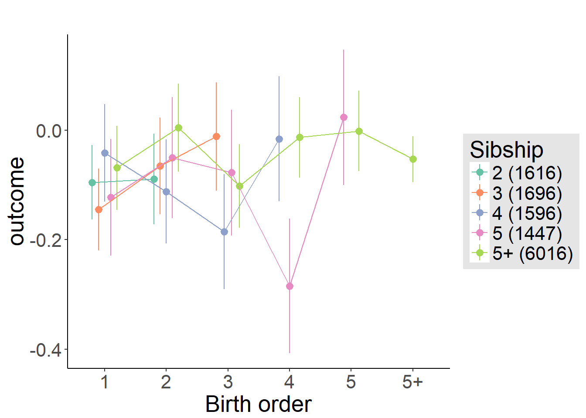
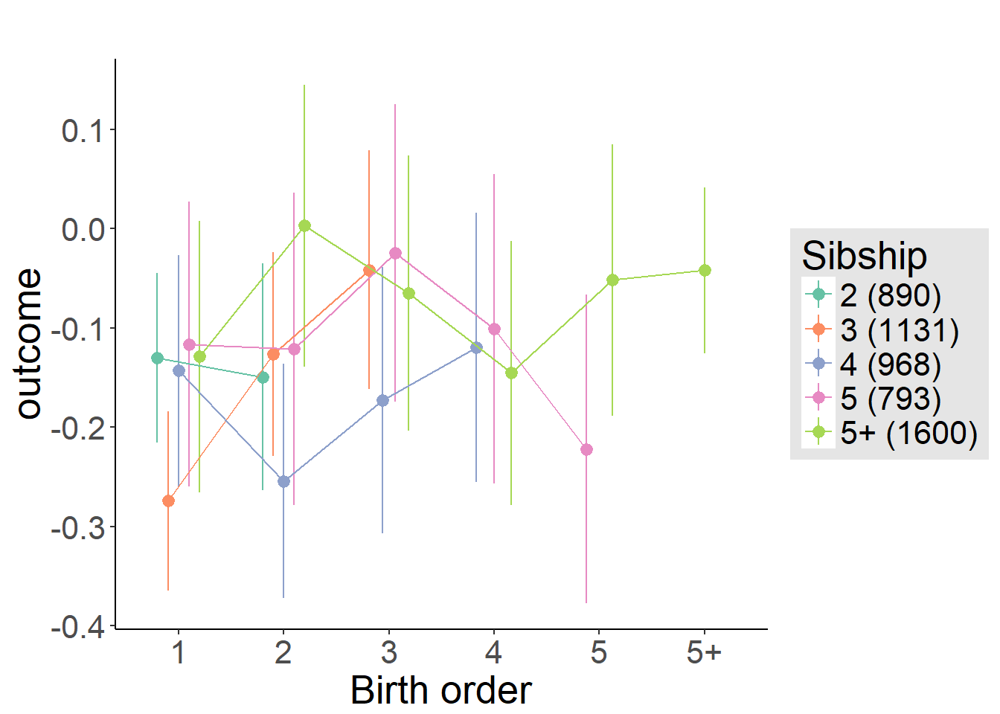
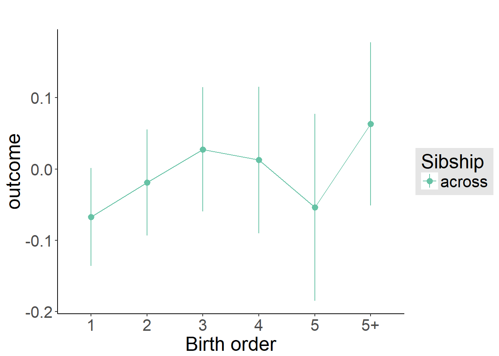
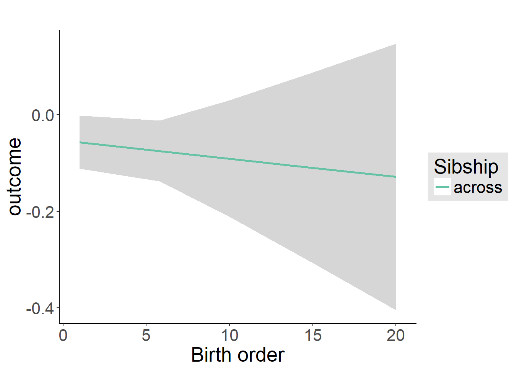

Birth Order Effects
Helper
source("0_helpers.R")## Warning: package 'rmarkdown' was built under R version 3.4.3## Warning: package 'knitr' was built under R version 3.4.3##
## Attaching package: 'formr'## The following object is masked from 'package:rmarkdown':
##
## word_document## Warning: package 'lubridate' was built under R version 3.4.3##
## Attaching package: 'lubridate'## The following object is masked from 'package:base':
##
## date## Warning: package 'stringr' was built under R version 3.4.3## Loading required package: carData## lattice theme set by effectsTheme()
## See ?effectsTheme for details.##
## Attaching package: 'data.table'## The following objects are masked from 'package:lubridate':
##
## hour, isoweek, mday, minute, month, quarter, second, wday, week, yday, year## The following objects are masked from 'package:formr':
##
## first, last## Loading required package: Matrix##
## Attaching package: 'lmerTest'## The following object is masked from 'package:lme4':
##
## lmer## The following object is masked from 'package:stats':
##
## step##
## Attaching package: 'cowplot'## The following object is masked from 'package:ggplot2':
##
## ggsave## Warning: package 'haven' was built under R version 3.4.3##
## Attaching package: 'psych'## The following objects are masked from 'package:ggplot2':
##
## %+%, alpha## This is lavaan 0.5-23.1097## lavaan is BETA software! Please report any bugs.##
## Attaching package: 'lavaan'## The following object is masked from 'package:psych':
##
## cor2cov## Loading required package: lattice## Loading required package: survival## Loading required package: Formula##
## Attaching package: 'Hmisc'## The following object is masked from 'package:psych':
##
## describe## The following objects are masked from 'package:base':
##
## format.pval, round.POSIXt, trunc.POSIXt, units## Warning: package 'tidyr' was built under R version 3.4.3##
## Attaching package: 'tidyr'## The following object is masked from 'package:Matrix':
##
## expand##
## Attaching package: 'dplyr'## The following objects are masked from 'package:Hmisc':
##
## combine, src, summarize## The following objects are masked from 'package:data.table':
##
## between, first, last## The following objects are masked from 'package:lubridate':
##
## intersect, setdiff, union## The following objects are masked from 'package:formr':
##
## first, last## The following objects are masked from 'package:stats':
##
## filter, lag## The following objects are masked from 'package:base':
##
## intersect, setdiff, setequal, union## Warning: package 'coefplot' was built under R version 3.4.3## Warning: package 'sjPlot' was built under R version 3.4.4##
## Attaching package: 'sjPlot'## The following objects are masked from 'package:cowplot':
##
## plot_grid, save_plotopts_chunk$set(warning = FALSE)Load data
birthorder = readRDS("data/alldata_birthorder.rds")Data preparations
# For analyses we want to clean the dataset and get rid of all uninteresting data
birthorder = birthorder %>%
filter(!is.na(pidlink)) %>% # no individuals who are only known from the pregnancy file
filter(is.na(lifebirths) | lifebirths == 2) %>% # remove 7 and 2 individuals who are known as stillbirth or miscarriage but still have PID
select(-lifebirths) %>%
filter(!is.na(mother_pidlink)) %>%
select(-father_pidlink) %>%
filter(is.na(any_multiple_birth) | any_multiple_birth != 1) %>% # remove families with twins/triplets/..
filter(!is.na(birthorder_naive)) %>%
select(-starts_with("age_"), -wave, -any_multiple_birth, -multiple_birth) %>%
mutate(money_spent_smoking_log = if_else(is.na(money_spent_smoking_log) & ever_smoked == 0, 0, money_spent_smoking_log),
amount = if_else(is.na(amount) & ever_smoked == 0, 0, amount),
amount_still_smokers = if_else(is.na(amount_still_smokers) & still_smoking == 0, 0, amount_still_smokers),
birthyear = lubridate::year(birthdate))
# recode Factor Variable as Dummy Variable
birthorder = left_join(birthorder,
birthorder %>%
filter(!is.na(Category)) %>%
mutate(var = 1) %>%
select(pidlink, Category, var) %>%
spread(Category, var, fill = 0, sep = "_"), by = "pidlink") %>%
select(-Category)
# recode Factor Variable as Dummy Variable
birthorder = left_join(birthorder,
birthorder %>%
filter(!is.na(Sector)) %>%
mutate(var = 1) %>%
select(pidlink, Sector, var) %>%
spread(Sector, var, fill = 0, sep = "_"), by = "pidlink") %>%
select(-Sector)
# data based on 4_analyses without running the analyses
ggplot(birthorder, aes(riskA)) + geom_bar() + xlab("Risk Aversion SetA" )
ggplot(birthorder, aes(riskB)) + geom_bar() + xlab("Risk Aversion SetB" )
cor.test(birthorder$riskA, birthorder$riskB)| Test statistic | df | P value | Alternative hypothesis | cor |
|---|---|---|---|---|
| 28.7 | 12880 | 1.334e-175 * * * | two.sided | 0.2451 |
ggplot(birthorder, aes(riskA, riskB)) + geom_jitter(alpha = .1) + xlab("Risk Aversion SetA" ) + ylab("Risk Aversion SetB" )
cor.test(birthorder$riskA, birthorder$ever_smoked)| Test statistic | df | P value | Alternative hypothesis | cor |
|---|---|---|---|---|
| -8.62 | 13550 | 7.452e-18 * * * | two.sided | -0.07385 |
cor.test(birthorder$riskB, birthorder$ever_smoked)| Test statistic | df | P value | Alternative hypothesis | cor |
|---|---|---|---|---|
| -7.938 | 14423 | 2.208e-15 * * * | two.sided | -0.06595 |
cor.test(birthorder$riskA, birthorder$still_smoking)| Test statistic | df | P value | Alternative hypothesis | cor |
|---|---|---|---|---|
| 1.085 | 4563 | 0.2782 | two.sided | 0.01605 |
cor.test(birthorder$riskB, birthorder$still_smoking)| Test statistic | df | P value | Alternative hypothesis | cor |
|---|---|---|---|---|
| 0.3754 | 4807 | 0.7073 | two.sided | 0.005415 |
cor.test(birthorder$riskA, birthorder$Self_employed)| Test statistic | df | P value | Alternative hypothesis | cor |
|---|---|---|---|---|
| -1.682 | 9412 | 0.09266 | two.sided | -0.01733 |
cor.test(birthorder$riskB, birthorder$Self_employed)| Test statistic | df | P value | Alternative hypothesis | cor |
|---|---|---|---|---|
| -4.172 | 9997 | 0.00003039 * * * | two.sided | -0.04169 |
## Robust Analyses without weird categories
birthorder = birthorder %>%
mutate(riskA_robust = ifelse(riskA == 5, NA, riskA),
riskB_robust = ifelse(riskB == 1, NA, riskB))
ggplot(birthorder, aes(riskA_robust)) + geom_bar() + xlab("Risk Aversion SetA" )
ggplot(birthorder, aes(riskB_robust)) + geom_bar() + xlab("Risk Aversion SetB" )
cor.test(birthorder$riskA_robust, birthorder$riskB_robust)| Test statistic | df | P value | Alternative hypothesis | cor |
|---|---|---|---|---|
| 33.37 | 7925 | 1.228e-228 * * * | two.sided | 0.351 |
ggplot(birthorder, aes(riskA_robust, riskB_robust)) + geom_jitter(alpha = .1) + xlab("Risk Aversion SetA" ) + ylab("Risk Aversion SetB" )
cor.test(birthorder$riskA_robust, birthorder$ever_smoked)| Test statistic | df | P value | Alternative hypothesis | cor |
|---|---|---|---|---|
| -9.4 | 9486 | 6.7e-21 * * * | two.sided | -0.09607 |
cor.test(birthorder$riskB_robust, birthorder$ever_smoked)| Test statistic | df | P value | Alternative hypothesis | cor |
|---|---|---|---|---|
| -6.943 | 12688 | 4.018e-12 * * * | two.sided | -0.06152 |
cor.test(birthorder$riskA_robust, birthorder$Self_employed)| Test statistic | df | P value | Alternative hypothesis | cor |
|---|---|---|---|---|
| -5.237 | 6664 | 0.0000001681 * * * | two.sided | -0.06402 |
cor.test(birthorder$riskB_robust, birthorder$Self_employed)| Test statistic | df | P value | Alternative hypothesis | cor |
|---|---|---|---|---|
| -3.556 | 8723 | 0.0003792 * * * | two.sided | -0.03804 |
### Variables
birthorder = birthorder %>%
mutate(
# center variables that are used for analysis
g_factor_2015_old = scale(g_factor_2015_old),
g_factor_2015_young = scale(g_factor_2015_young),
g_factor_2007_old = scale(g_factor_2007_old),
g_factor_2007_young = scale(g_factor_2007_young),
raven_2015_old = scale(raven_2015_old),
math_2015_old = scale(math_2015_old),
count_backwards = scale(count_backwards),
raven_2015_young = scale(raven_2015_young), years_of_education_z = scale(years_of_education),
Total_score_highest_z = scale(Total_score_highest),
math_2015_young = scale(math_2015_young),
words_remembered_avg = scale(words_remembered_avg),
words_immediate = scale(words_immediate),
words_delayed = scale(words_delayed),
adaptive_numbering = scale(adaptive_numbering),
raven_2007_old = scale(raven_2007_old),
math_2007_old = scale(math_2007_old),
raven_2007_young = scale(raven_2007_young),
math_2007_young = scale(math_2007_young),
riskA = scale(riskA),
riskB = scale(riskB),
riskA_robust = scale(riskA_robust),
riskB_robust = scale(riskB_robust),
years_of_education_z = scale(years_of_education),
Total_score_highest_z = scale(Total_score_highest),
wage_last_month_z = scale(wage_last_month_log),
wage_last_year_z = scale(wage_last_year_log),
big5_ext = scale(big5_ext),
big5_con = scale(big5_con),
big5_agree = scale(big5_agree),
big5_open = scale(big5_open),
big5_neu = scale(big5_neu),
attended_school = as.integer(attended_school),
attended_school = ifelse(attended_school == 1, 0,
ifelse(attended_school == 2, 1, NA)))
qplot(birthorder$male)## `stat_bin()` using `bins = 30`. Pick better value with `binwidth`.
qplot(birthorder$g_factor_2015_old)## `stat_bin()` using `bins = 30`. Pick better value with `binwidth`.
### Birthorder and Sibling Count
birthorder = birthorder %>%
mutate(
# birthorder as factors with levels of 1, 2, 3, 4, 5, 5+
birthorder_naive_factor = as.character(birthorder_naive),
birthorder_naive_factor = ifelse(birthorder_naive > 5, "5+",
birthorder_naive_factor),
birthorder_naive_factor = factor(birthorder_naive_factor,
levels = c("1","2","3","4","5","5+")),
sibling_count_naive_factor = as.character(sibling_count_naive),
sibling_count_naive_factor = ifelse(sibling_count_naive > 5, "5+",
sibling_count_naive_factor),
sibling_count_naive_factor = factor(sibling_count_naive_factor,
levels = c("2","3","4","5","5+")),
birthorder_uterus_alive_factor = as.character(birthorder_uterus_alive),
birthorder_uterus_alive_factor = ifelse(birthorder_uterus_alive > 5, "5+",
birthorder_uterus_alive_factor),
birthorder_uterus_alive_factor = factor(birthorder_uterus_alive_factor,
levels = c("1","2","3","4","5","5+")),
sibling_count_uterus_alive_factor = as.character(sibling_count_uterus_alive),
sibling_count_uterus_alive_factor = ifelse(sibling_count_uterus_alive > 5, "5+",
sibling_count_uterus_alive_factor),
sibling_count_uterus_alive_factor = factor(sibling_count_uterus_alive_factor,
levels = c("2","3","4","5","5+")),
birthorder_uterus_preg_factor = as.character(birthorder_uterus_preg),
birthorder_uterus_preg_factor = ifelse(birthorder_uterus_preg > 5, "5+",
birthorder_uterus_preg_factor),
birthorder_uterus_preg_factor = factor(birthorder_uterus_preg_factor,
levels = c("1","2","3","4","5","5+")),
sibling_count_uterus_preg_factor = as.character(sibling_count_uterus_preg),
sibling_count_uterus_preg_factor = ifelse(sibling_count_uterus_preg > 5, "5+",
sibling_count_uterus_preg_factor),
sibling_count_uterus_preg_factor = factor(sibling_count_uterus_preg_factor,
levels = c("2","3","4","5","5+")),
birthorder_genes_factor = as.character(birthorder_genes),
birthorder_genes_factor = ifelse(birthorder_genes >5 , "5+", birthorder_genes_factor),
birthorder_genes_factor = factor(birthorder_genes_factor,
levels = c("1","2","3","4","5","5+")),
sibling_count_genes_factor = as.character(sibling_count_genes),
sibling_count_genes_factor = ifelse(sibling_count_genes >5 , "5+",
sibling_count_genes_factor),
sibling_count_genes_factor = factor(sibling_count_genes_factor,
levels = c("2","3","4","5","5+")),
# interaction birthorder * siblingcout for each birthorder
count_birthorder_naive =
factor(str_replace(as.character(interaction(birthorder_naive_factor, sibling_count_naive_factor)),
"\\.", "/"),
levels = c("1/2","2/2", "1/3", "2/3",
"3/3", "1/4", "2/4", "3/4", "4/4",
"1/5", "2/5", "3/5", "4/5", "5/5",
"1/5+", "2/5+", "3/5+", "4/5+",
"5/5+", "5+/5+")),
count_birthorder_uterus_alive =
factor(str_replace(as.character(interaction(birthorder_uterus_alive_factor, sibling_count_uterus_alive_factor)),
"\\.", "/"),
levels = c("1/2","2/2", "1/3", "2/3",
"3/3", "1/4", "2/4", "3/4", "4/4",
"1/5", "2/5", "3/5", "4/5", "5/5",
"1/5+", "2/5+", "3/5+", "4/5+",
"5/5+", "5+/5+")),
count_birthorder_uterus_preg =
factor(str_replace(as.character(interaction(birthorder_uterus_preg_factor, sibling_count_uterus_preg_factor)),
"\\.", "/"),
levels = c("1/2","2/2", "1/3", "2/3",
"3/3", "1/4", "2/4", "3/4", "4/4",
"1/5", "2/5", "3/5", "4/5", "5/5",
"1/5+", "2/5+", "3/5+", "4/5+",
"5/5+", "5+/5+")),
count_birthorder_genes =
factor(str_replace(as.character(interaction(birthorder_genes_factor, sibling_count_genes_factor)), "\\.", "/"),
levels = c("1/2","2/2", "1/3", "2/3",
"3/3", "1/4", "2/4", "3/4", "4/4",
"1/5", "2/5", "3/5", "4/5", "5/5",
"1/5+", "2/5+", "3/5+", "4/5+",
"5/5+", "5+/5+")))
birthorder <- birthorder %>%
mutate(sibling_count = sibling_count_genes_factor,
birth_order_nonlinear = birthorder_genes_factor,
birth_order = birthorder_genes,
count_birth_order = count_birthorder_genes)Risk preference
Risk A
birthorder <- birthorder %>% mutate(outcome = riskA)
model = lmer(outcome ~ birth_order + poly(age, 3, raw = TRUE) + male + sibling_count + (1 | mother_pidlink),
data = birthorder)
compare_birthorder_specs(model)Naive birth order
outcome_naive_m1 <- update(m2_birthorder_linear, data = birthorder %>%
mutate(sibling_count = sibling_count_naive_factor,
birth_order_nonlinear = birthorder_naive_factor,
birth_order = birthorder_naive,
count_birth_order = count_birthorder_naive) %>%
filter(sibling_count != "1"))
compare_models_markdown(outcome_naive_m1)Basic Model
Model Summary
m1_covariates_only <- update(m2_birthorder_linear, formula = . ~ . - birth_order)
tidy(m1_covariates_only, conf.int = T)| term | estimate | std.error | statistic | conf.low | conf.high | group |
|---|---|---|---|---|---|---|
| (Intercept) | 1.147 | 0.1737 | 6.604 | 0.8068 | 1.488 | fixed |
| poly(age, 3, raw = TRUE)1 | -0.09252 | 0.01678 | -5.513 | -0.1254 | -0.05963 | fixed |
| poly(age, 3, raw = TRUE)2 | 0.002406 | 0.0004989 | 4.822 | 0.001428 | 0.003383 | fixed |
| poly(age, 3, raw = TRUE)3 | -0.00001908 | 0.000004653 | -4.1 | -0.00002819 | -0.000009956 | fixed |
| male | -0.2332 | 0.01776 | -13.13 | -0.268 | -0.1984 | fixed |
| sibling_count3 | 0.003204 | 0.03507 | 0.09136 | -0.06554 | 0.07195 | fixed |
| sibling_count4 | 0.004187 | 0.03594 | 0.1165 | -0.06626 | 0.07464 | fixed |
| sibling_count5 | -0.008956 | 0.03722 | -0.2407 | -0.0819 | 0.06399 | fixed |
| sibling_count5+ | 0.04878 | 0.02933 | 1.663 | -0.008715 | 0.1063 | fixed |
| sd_(Intercept).mother_pidlink | 0.2501 | NA | NA | NA | NA | mother_pidlink |
| sd_Observation.Residual | 0.9575 | NA | NA | NA | NA | Residual |
Coefficient Plot
plot(allEffects(m1_covariates_only))Add Birth Order Linear
Model Summary
tidy(m2_birthorder_linear, conf.int = T)| term | estimate | std.error | statistic | conf.low | conf.high | group |
|---|---|---|---|---|---|---|
| (Intercept) | 1.149 | 0.1738 | 6.615 | 0.8089 | 1.49 | fixed |
| birth_order | 0.002926 | 0.003685 | 0.794 | -0.004297 | 0.01015 | fixed |
| poly(age, 3, raw = TRUE)1 | -0.09344 | 0.01682 | -5.555 | -0.1264 | -0.06047 | fixed |
| poly(age, 3, raw = TRUE)2 | 0.002438 | 0.0005005 | 4.871 | 0.001457 | 0.003419 | fixed |
| poly(age, 3, raw = TRUE)3 | -0.00001937 | 0.000004668 | -4.15 | -0.00002852 | -0.00001022 | fixed |
| male | -0.2333 | 0.01776 | -13.14 | -0.2681 | -0.1985 | fixed |
| sibling_count3 | 0.002364 | 0.03509 | 0.06739 | -0.0664 | 0.07113 | fixed |
| sibling_count4 | 0.002011 | 0.03604 | 0.05579 | -0.06863 | 0.07265 | fixed |
| sibling_count5 | -0.01272 | 0.03751 | -0.3391 | -0.08624 | 0.0608 | fixed |
| sibling_count5+ | 0.03741 | 0.03264 | 1.146 | -0.02656 | 0.1014 | fixed |
| sd_(Intercept).mother_pidlink | 0.2494 | NA | NA | NA | NA | mother_pidlink |
| sd_Observation.Residual | 0.9577 | NA | NA | NA | NA | Residual |
Coefficient Plot
plot_birthorder2(m2_birthorder_linear, separate = FALSE, ylimits = ylimits)Add Birth Order Factor
Model Summary
m3_birthorder_nonlinear = update(m1_covariates_only, formula = . ~ . + birth_order_nonlinear)
tidy(m3_birthorder_nonlinear, conf.int = T)| term | estimate | std.error | statistic | conf.low | conf.high | group |
|---|---|---|---|---|---|---|
| (Intercept) | 1.134 | 0.1743 | 6.508 | 0.7926 | 1.476 | fixed |
| poly(age, 3, raw = TRUE)1 | -0.09246 | 0.01683 | -5.495 | -0.1254 | -0.05948 | fixed |
| poly(age, 3, raw = TRUE)2 | 0.002401 | 0.0005007 | 4.795 | 0.001419 | 0.003382 | fixed |
| poly(age, 3, raw = TRUE)3 | -0.00001898 | 0.00000467 | -4.064 | -0.00002813 | -0.000009823 | fixed |
| male | -0.2334 | 0.01776 | -13.14 | -0.2682 | -0.1986 | fixed |
| sibling_count3 | 0.00682 | 0.03566 | 0.1912 | -0.06308 | 0.07672 | fixed |
| sibling_count4 | 0.006205 | 0.03719 | 0.1669 | -0.06668 | 0.07909 | fixed |
| sibling_count5 | -0.01895 | 0.03919 | -0.4834 | -0.09576 | 0.05787 | fixed |
| sibling_count5+ | 0.04327 | 0.03453 | 1.253 | -0.02441 | 0.111 | fixed |
| birth_order_nonlinear2 | 0.03422 | 0.02611 | 1.311 | -0.01694 | 0.08539 | fixed |
| birth_order_nonlinear3 | -0.005286 | 0.0307 | -0.1722 | -0.06545 | 0.05488 | fixed |
| birth_order_nonlinear4 | 0.015 | 0.03513 | 0.4268 | -0.05386 | 0.08385 | fixed |
| birth_order_nonlinear5 | 0.08311 | 0.03947 | 2.106 | 0.005747 | 0.1605 | fixed |
| birth_order_nonlinear5+ | 0.009131 | 0.03275 | 0.2789 | -0.05505 | 0.07331 | fixed |
| sd_(Intercept).mother_pidlink | 0.2505 | NA | NA | NA | NA | mother_pidlink |
| sd_Observation.Residual | 0.9573 | NA | NA | NA | NA | Residual |
Coefficient Plot
plot_birthorder(m3_birthorder_nonlinear, separate = FALSE, ylimits = ylimits)Add Interaction
Model Summary
m4_interaction = update(m3_birthorder_nonlinear, formula = . ~ . - birth_order_nonlinear - sibling_count + count_birth_order)
tidy(m4_interaction, conf.int = T)| term | estimate | std.error | statistic | conf.low | conf.high | group |
|---|---|---|---|---|---|---|
| (Intercept) | 1.152 | 0.175 | 6.581 | 0.8086 | 1.495 | fixed |
| poly(age, 3, raw = TRUE)1 | -0.09299 | 0.01682 | -5.528 | -0.126 | -0.06002 | fixed |
| poly(age, 3, raw = TRUE)2 | 0.002411 | 0.0005005 | 4.817 | 0.00143 | 0.003392 | fixed |
| poly(age, 3, raw = TRUE)3 | -0.00001901 | 0.000004669 | -4.072 | -0.00002816 | -0.000009861 | fixed |
| male | -0.2341 | 0.01775 | -13.19 | -0.2689 | -0.1993 | fixed |
| count_birth_order2/2 | 0.005908 | 0.05039 | 0.1173 | -0.09284 | 0.1047 | fixed |
| count_birth_order1/3 | -0.04965 | 0.04725 | -1.051 | -0.1423 | 0.04296 | fixed |
| count_birth_order2/3 | 0.02964 | 0.05332 | 0.5559 | -0.07487 | 0.1342 | fixed |
| count_birth_order3/3 | 0.08396 | 0.05874 | 1.429 | -0.03117 | 0.1991 | fixed |
| count_birth_order1/4 | 0.05371 | 0.05395 | 0.9955 | -0.05203 | 0.1594 | fixed |
| count_birth_order2/4 | -0.01678 | 0.05658 | -0.2965 | -0.1277 | 0.09412 | fixed |
| count_birth_order3/4 | -0.09029 | 0.06134 | -1.472 | -0.2105 | 0.02993 | fixed |
| count_birth_order4/4 | 0.07955 | 0.06589 | 1.207 | -0.0496 | 0.2087 | fixed |
| count_birth_order1/5 | -0.02778 | 0.062 | -0.4482 | -0.1493 | 0.09372 | fixed |
| count_birth_order2/5 | 0.04518 | 0.06404 | 0.7054 | -0.08035 | 0.1707 | fixed |
| count_birth_order3/5 | 0.01774 | 0.06616 | 0.2682 | -0.1119 | 0.1474 | fixed |
| count_birth_order4/5 | -0.1898 | 0.06999 | -2.712 | -0.327 | -0.05266 | fixed |
| count_birth_order5/5 | 0.1188 | 0.07047 | 1.686 | -0.01933 | 0.2569 | fixed |
| count_birth_order1/5+ | 0.02633 | 0.04975 | 0.5293 | -0.07118 | 0.1238 | fixed |
| count_birth_order2/5+ | 0.1002 | 0.05139 | 1.949 | -0.0005436 | 0.2009 | fixed |
| count_birth_order3/5+ | -0.006486 | 0.05003 | -0.1296 | -0.1045 | 0.09157 | fixed |
| count_birth_order4/5+ | 0.0823 | 0.049 | 1.68 | -0.01373 | 0.1783 | fixed |
| count_birth_order5/5+ | 0.09391 | 0.04895 | 1.919 | -0.00202 | 0.1898 | fixed |
| count_birth_order5+/5+ | 0.04251 | 0.03807 | 1.116 | -0.03211 | 0.1171 | fixed |
| sd_(Intercept).mother_pidlink | 0.2503 | NA | NA | NA | NA | mother_pidlink |
| sd_Observation.Residual | 0.9567 | NA | NA | NA | NA | Residual |
Coefficient Plot
plot_birthorder(m4_interaction, ylimits = ylimits)
Model Comparison
###### Model 1 - Model 2
anova(m1_covariates_only, m2_birthorder_linear, m3_birthorder_nonlinear, m4_interaction)## refitting model(s) with ML (instead of REML)| Df | AIC | BIC | logLik | deviance | Chisq | Chi Df | Pr(>Chisq) |
|---|---|---|---|---|---|---|---|
| 11 | 34828 | 34909 | -17403 | 34806 | NA | NA | NA |
| 12 | 34829 | 34918 | -17403 | 34805 | 0.6324 | 1 | 0.4265 |
| 16 | 34831 | 34949 | -17399 | 34799 | 6.352 | 4 | 0.1743 |
| 26 | 34825 | 35018 | -17386 | 34773 | 25.71 | 10 | 0.004149 |
Maternal birth order
outcome_uterus_m1 <- update(m2_birthorder_linear, data = birthorder %>%
mutate(sibling_count = sibling_count_uterus_alive_factor,
birth_order_nonlinear = birthorder_uterus_alive_factor,
birth_order = birthorder_uterus_alive,
count_birth_order = count_birthorder_uterus_alive) %>%
filter(sibling_count != "1"))
compare_models_markdown(outcome_uterus_m1)Basic Model
Model Summary
m1_covariates_only <- update(m2_birthorder_linear, formula = . ~ . - birth_order)
tidy(m1_covariates_only, conf.int = T)| term | estimate | std.error | statistic | conf.low | conf.high | group |
|---|---|---|---|---|---|---|
| (Intercept) | 1.577 | 0.4493 | 3.51 | 0.6964 | 2.458 | fixed |
| poly(age, 3, raw = TRUE)1 | -0.134 | 0.05105 | -2.626 | -0.2341 | -0.034 | fixed |
| poly(age, 3, raw = TRUE)2 | 0.003493 | 0.001825 | 1.914 | -0.00008355 | 0.007069 | fixed |
| poly(age, 3, raw = TRUE)3 | -0.00002836 | 0.0000207 | -1.37 | -0.00006894 | 0.00001222 | fixed |
| male | -0.2542 | 0.02616 | -9.717 | -0.3055 | -0.2029 | fixed |
| sibling_count3 | -0.01637 | 0.04026 | -0.4067 | -0.09528 | 0.06253 | fixed |
| sibling_count4 | 0.01001 | 0.04325 | 0.2314 | -0.07475 | 0.09477 | fixed |
| sibling_count5 | 0.02769 | 0.04899 | 0.5652 | -0.06832 | 0.1237 | fixed |
| sibling_count5+ | 0.1299 | 0.04299 | 3.021 | 0.0456 | 0.2141 | fixed |
| sd_(Intercept).mother_pidlink | 0.2518 | NA | NA | NA | NA | mother_pidlink |
| sd_Observation.Residual | 0.9226 | NA | NA | NA | NA | Residual |
Coefficient Plot
plot(allEffects(m1_covariates_only))Add Birth Order Linear
Model Summary
tidy(m2_birthorder_linear, conf.int = T)| term | estimate | std.error | statistic | conf.low | conf.high | group |
|---|---|---|---|---|---|---|
| (Intercept) | 1.58 | 0.4494 | 3.516 | 0.6991 | 2.461 | fixed |
| birth_order | -0.003278 | 0.008588 | -0.3817 | -0.02011 | 0.01355 | fixed |
| poly(age, 3, raw = TRUE)1 | -0.1339 | 0.05105 | -2.624 | -0.234 | -0.03387 | fixed |
| poly(age, 3, raw = TRUE)2 | 0.003494 | 0.001825 | 1.915 | -0.00008234 | 0.00707 | fixed |
| poly(age, 3, raw = TRUE)3 | -0.0000285 | 0.00002071 | -1.376 | -0.00006909 | 0.00001208 | fixed |
| male | -0.2541 | 0.02616 | -9.71 | -0.3054 | -0.2028 | fixed |
| sibling_count3 | -0.01474 | 0.04049 | -0.3641 | -0.0941 | 0.06462 | fixed |
| sibling_count4 | 0.01385 | 0.0444 | 0.3118 | -0.07318 | 0.1009 | fixed |
| sibling_count5 | 0.03389 | 0.05161 | 0.6566 | -0.06727 | 0.1351 | fixed |
| sibling_count5+ | 0.1424 | 0.05406 | 2.634 | 0.03642 | 0.2483 | fixed |
| sd_(Intercept).mother_pidlink | 0.2515 | NA | NA | NA | NA | mother_pidlink |
| sd_Observation.Residual | 0.9228 | NA | NA | NA | NA | Residual |
Coefficient Plot
plot_birthorder2(m2_birthorder_linear, separate = FALSE, ylimits = ylimits)Add Birth Order Factor
Model Summary
m3_birthorder_nonlinear = update(m1_covariates_only, formula = . ~ . + birth_order_nonlinear)
tidy(m3_birthorder_nonlinear, conf.int = T)| term | estimate | std.error | statistic | conf.low | conf.high | group |
|---|---|---|---|---|---|---|
| (Intercept) | 1.557 | 0.4502 | 3.459 | 0.6751 | 2.44 | fixed |
| poly(age, 3, raw = TRUE)1 | -0.1325 | 0.05109 | -2.593 | -0.2326 | -0.03235 | fixed |
| poly(age, 3, raw = TRUE)2 | 0.003436 | 0.001826 | 1.881 | -0.0001438 | 0.007016 | fixed |
| poly(age, 3, raw = TRUE)3 | -0.00002774 | 0.00002073 | -1.338 | -0.00006837 | 0.00001289 | fixed |
| male | -0.2537 | 0.02617 | -9.693 | -0.305 | -0.2024 | fixed |
| sibling_count3 | -0.02883 | 0.04149 | -0.6949 | -0.1101 | 0.05249 | fixed |
| sibling_count4 | 0.003924 | 0.04641 | 0.08454 | -0.08704 | 0.09489 | fixed |
| sibling_count5 | 0.01893 | 0.05466 | 0.3463 | -0.08821 | 0.1261 | fixed |
| sibling_count5+ | 0.1267 | 0.05591 | 2.266 | 0.01712 | 0.2363 | fixed |
| birth_order_nonlinear2 | 0.01925 | 0.03437 | 0.5601 | -0.04811 | 0.0866 | fixed |
| birth_order_nonlinear3 | 0.05381 | 0.04222 | 1.274 | -0.02895 | 0.1366 | fixed |
| birth_order_nonlinear4 | -0.02119 | 0.05203 | -0.4073 | -0.1232 | 0.08078 | fixed |
| birth_order_nonlinear5 | 0.03094 | 0.0651 | 0.4752 | -0.09666 | 0.1585 | fixed |
| birth_order_nonlinear5+ | -0.00119 | 0.06463 | -0.01842 | -0.1279 | 0.1255 | fixed |
| sd_(Intercept).mother_pidlink | 0.2539 | NA | NA | NA | NA | mother_pidlink |
| sd_Observation.Residual | 0.9223 | NA | NA | NA | NA | Residual |
Coefficient Plot
plot_birthorder(m3_birthorder_nonlinear, separate = FALSE, ylimits = ylimits)Add Interaction
Model Summary
m4_interaction = update(m3_birthorder_nonlinear, formula = . ~ . - birth_order_nonlinear - sibling_count + count_birth_order)
tidy(m4_interaction, conf.int = T)| term | estimate | std.error | statistic | conf.low | conf.high | group |
|---|---|---|---|---|---|---|
| (Intercept) | 1.526 | 0.4507 | 3.385 | 0.6422 | 2.409 | fixed |
| poly(age, 3, raw = TRUE)1 | -0.1286 | 0.05114 | -2.514 | -0.2288 | -0.02832 | fixed |
| poly(age, 3, raw = TRUE)2 | 0.003327 | 0.001828 | 1.82 | -0.0002567 | 0.00691 | fixed |
| poly(age, 3, raw = TRUE)3 | -0.00002686 | 0.00002075 | -1.294 | -0.00006754 | 0.00001381 | fixed |
| male | -0.2536 | 0.02619 | -9.683 | -0.3049 | -0.2022 | fixed |
| count_birth_order2/2 | -0.008658 | 0.06139 | -0.141 | -0.129 | 0.1117 | fixed |
| count_birth_order1/3 | -0.1013 | 0.05393 | -1.878 | -0.207 | 0.00441 | fixed |
| count_birth_order2/3 | 0.01465 | 0.05898 | 0.2484 | -0.1009 | 0.1302 | fixed |
| count_birth_order3/3 | 0.08765 | 0.06512 | 1.346 | -0.03997 | 0.2153 | fixed |
| count_birth_order1/4 | 0.05273 | 0.06664 | 0.7913 | -0.07788 | 0.1834 | fixed |
| count_birth_order2/4 | -0.01304 | 0.06801 | -0.1917 | -0.1463 | 0.1203 | fixed |
| count_birth_order3/4 | -0.04041 | 0.07259 | -0.5568 | -0.1827 | 0.1019 | fixed |
| count_birth_order4/4 | 0.02005 | 0.07383 | 0.2715 | -0.1246 | 0.1647 | fixed |
| count_birth_order1/5 | 0.1057 | 0.08996 | 1.175 | -0.07063 | 0.282 | fixed |
| count_birth_order2/5 | -0.01872 | 0.09657 | -0.1939 | -0.208 | 0.1706 | fixed |
| count_birth_order3/5 | 0.02719 | 0.0897 | 0.3031 | -0.1486 | 0.203 | fixed |
| count_birth_order4/5 | 0.0244 | 0.08554 | 0.2853 | -0.1432 | 0.1921 | fixed |
| count_birth_order5/5 | -0.02271 | 0.08904 | -0.2551 | -0.1972 | 0.1518 | fixed |
| count_birth_order1/5+ | 0.1101 | 0.09201 | 1.197 | -0.07023 | 0.2905 | fixed |
| count_birth_order2/5+ | 0.1728 | 0.08828 | 1.957 | -0.0002416 | 0.3458 | fixed |
| count_birth_order3/5+ | 0.1931 | 0.08797 | 2.195 | 0.02068 | 0.3655 | fixed |
| count_birth_order4/5+ | -0.004091 | 0.08442 | -0.04846 | -0.1696 | 0.1614 | fixed |
| count_birth_order5/5+ | 0.1929 | 0.07866 | 2.452 | 0.03868 | 0.347 | fixed |
| count_birth_order5+/5+ | 0.1152 | 0.05806 | 1.985 | 0.001439 | 0.229 | fixed |
| sd_(Intercept).mother_pidlink | 0.2554 | NA | NA | NA | NA | mother_pidlink |
| sd_Observation.Residual | 0.9215 | NA | NA | NA | NA | Residual |
Coefficient Plot
plot_birthorder(m4_interaction, ylimits = ylimits)Model Comparison
###### Model 1 - Model 2
anova(m1_covariates_only, m2_birthorder_linear, m3_birthorder_nonlinear, m4_interaction)## refitting model(s) with ML (instead of REML)| Df | AIC | BIC | logLik | deviance | Chisq | Chi Df | Pr(>Chisq) |
|---|---|---|---|---|---|---|---|
| 11 | 14660 | 14732 | -7319 | 14638 | NA | NA | NA |
| 12 | 14661 | 14740 | -7319 | 14637 | 0.1468 | 1 | 0.7016 |
| 16 | 14667 | 14772 | -7317 | 14635 | 2.604 | 4 | 0.6262 |
| 26 | 14672 | 14844 | -7310 | 14620 | 14.37 | 10 | 0.1569 |
Maternal pregnancy order
outcome_preg_m1 <- update(m2_birthorder_linear, data = birthorder %>%
mutate(sibling_count = sibling_count_uterus_preg_factor,
birth_order_nonlinear = birthorder_uterus_preg_factor,
birth_order = birthorder_uterus_preg,
count_birth_order = count_birthorder_uterus_preg
) %>%
filter(sibling_count != "1"))
compare_models_markdown(outcome_preg_m1)Basic Model
Model Summary
m1_covariates_only <- update(m2_birthorder_linear, formula = . ~ . - birth_order)
tidy(m1_covariates_only, conf.int = T)| term | estimate | std.error | statistic | conf.low | conf.high | group |
|---|---|---|---|---|---|---|
| (Intercept) | 1.549 | 0.4478 | 3.46 | 0.6717 | 2.427 | fixed |
| poly(age, 3, raw = TRUE)1 | -0.1301 | 0.05091 | -2.555 | -0.2298 | -0.0303 | fixed |
| poly(age, 3, raw = TRUE)2 | 0.003384 | 0.00182 | 1.859 | -0.0001836 | 0.006951 | fixed |
| poly(age, 3, raw = TRUE)3 | -0.00002719 | 0.00002066 | -1.316 | -0.00006768 | 0.0000133 | fixed |
| male | -0.2574 | 0.02605 | -9.882 | -0.3085 | -0.2064 | fixed |
| sibling_count3 | -0.03451 | 0.04357 | -0.792 | -0.1199 | 0.05089 | fixed |
| sibling_count4 | -0.03854 | 0.04574 | -0.8425 | -0.1282 | 0.05111 | fixed |
| sibling_count5 | 0.02241 | 0.04858 | 0.4612 | -0.07281 | 0.1176 | fixed |
| sibling_count5+ | 0.0725 | 0.04271 | 1.697 | -0.01122 | 0.1562 | fixed |
| sd_(Intercept).mother_pidlink | 0.2535 | NA | NA | NA | NA | mother_pidlink |
| sd_Observation.Residual | 0.9221 | NA | NA | NA | NA | Residual |
Coefficient Plot
plot(allEffects(m1_covariates_only))Add Birth Order Linear
Model Summary
tidy(m2_birthorder_linear, conf.int = T)| term | estimate | std.error | statistic | conf.low | conf.high | group |
|---|---|---|---|---|---|---|
| (Intercept) | 1.545 | 0.4479 | 3.45 | 0.6672 | 2.423 | fixed |
| birth_order | 0.003578 | 0.007458 | 0.4798 | -0.01104 | 0.01819 | fixed |
| poly(age, 3, raw = TRUE)1 | -0.1301 | 0.05091 | -2.555 | -0.2299 | -0.03029 | fixed |
| poly(age, 3, raw = TRUE)2 | 0.003378 | 0.00182 | 1.856 | -0.00019 | 0.006945 | fixed |
| poly(age, 3, raw = TRUE)3 | -0.00002699 | 0.00002066 | -1.306 | -0.00006748 | 0.00001351 | fixed |
| male | -0.2575 | 0.02605 | -9.886 | -0.3086 | -0.2065 | fixed |
| sibling_count3 | -0.03628 | 0.04373 | -0.8296 | -0.122 | 0.04943 | fixed |
| sibling_count4 | -0.04254 | 0.0465 | -0.9149 | -0.1337 | 0.0486 | fixed |
| sibling_count5 | 0.01616 | 0.0503 | 0.3213 | -0.08242 | 0.1147 | fixed |
| sibling_count5+ | 0.0592 | 0.05092 | 1.163 | -0.04059 | 0.159 | fixed |
| sd_(Intercept).mother_pidlink | 0.2537 | NA | NA | NA | NA | mother_pidlink |
| sd_Observation.Residual | 0.9222 | NA | NA | NA | NA | Residual |
Coefficient Plot
plot_birthorder2(m2_birthorder_linear, separate = FALSE, ylimits = ylimits)Add Birth Order Factor
Model Summary
m3_birthorder_nonlinear = update(m1_covariates_only, formula = . ~ . + birth_order_nonlinear)
tidy(m3_birthorder_nonlinear, conf.int = T)| term | estimate | std.error | statistic | conf.low | conf.high | group |
|---|---|---|---|---|---|---|
| (Intercept) | 1.522 | 0.4487 | 3.392 | 0.6425 | 2.401 | fixed |
| poly(age, 3, raw = TRUE)1 | -0.128 | 0.05094 | -2.513 | -0.2279 | -0.02816 | fixed |
| poly(age, 3, raw = TRUE)2 | 0.003294 | 0.001822 | 1.808 | -0.0002767 | 0.006864 | fixed |
| poly(age, 3, raw = TRUE)3 | -0.00002588 | 0.00002068 | -1.252 | -0.00006642 | 0.00001465 | fixed |
| male | -0.2576 | 0.02605 | -9.888 | -0.3086 | -0.2065 | fixed |
| sibling_count3 | -0.05732 | 0.04465 | -1.284 | -0.1448 | 0.03021 | fixed |
| sibling_count4 | -0.06546 | 0.04836 | -1.354 | -0.1602 | 0.02932 | fixed |
| sibling_count5 | -0.0008842 | 0.05303 | -0.01667 | -0.1048 | 0.103 | fixed |
| sibling_count5+ | 0.0348 | 0.05268 | 0.6606 | -0.06845 | 0.138 | fixed |
| birth_order_nonlinear2 | 0.03458 | 0.03489 | 0.9911 | -0.0338 | 0.103 | fixed |
| birth_order_nonlinear3 | 0.09857 | 0.04209 | 2.342 | 0.01609 | 0.1811 | fixed |
| birth_order_nonlinear4 | 0.0352 | 0.05032 | 0.6995 | -0.06343 | 0.1338 | fixed |
| birth_order_nonlinear5 | 0.003997 | 0.06168 | 0.06481 | -0.1169 | 0.1249 | fixed |
| birth_order_nonlinear5+ | 0.07155 | 0.05752 | 1.244 | -0.0412 | 0.1843 | fixed |
| sd_(Intercept).mother_pidlink | 0.2558 | NA | NA | NA | NA | mother_pidlink |
| sd_Observation.Residual | 0.9214 | NA | NA | NA | NA | Residual |
Coefficient Plot
plot_birthorder(m3_birthorder_nonlinear, separate = FALSE, ylimits = ylimits)Add Interaction
Model Summary
m4_interaction = update(m3_birthorder_nonlinear, formula = . ~ . - birth_order_nonlinear - sibling_count + count_birth_order)
tidy(m4_interaction, conf.int = T)| term | estimate | std.error | statistic | conf.low | conf.high | group |
|---|---|---|---|---|---|---|
| (Intercept) | 1.49 | 0.4492 | 3.317 | 0.6097 | 2.371 | fixed |
| poly(age, 3, raw = TRUE)1 | -0.1225 | 0.05098 | -2.404 | -0.2224 | -0.02261 | fixed |
| poly(age, 3, raw = TRUE)2 | 0.003108 | 0.001823 | 1.705 | -0.0004651 | 0.006681 | fixed |
| poly(age, 3, raw = TRUE)3 | -0.00002392 | 0.0000207 | -1.156 | -0.00006449 | 0.00001665 | fixed |
| male | -0.2572 | 0.02606 | -9.871 | -0.3083 | -0.2061 | fixed |
| count_birth_order2/2 | -0.01902 | 0.06687 | -0.2844 | -0.1501 | 0.112 | fixed |
| count_birth_order1/3 | -0.1438 | 0.05846 | -2.46 | -0.2584 | -0.02923 | fixed |
| count_birth_order2/3 | 0.003974 | 0.06319 | 0.0629 | -0.1199 | 0.1278 | fixed |
| count_birth_order3/3 | 0.08898 | 0.0708 | 1.257 | -0.04978 | 0.2277 | fixed |
| count_birth_order1/4 | -0.01275 | 0.06936 | -0.1838 | -0.1487 | 0.1232 | fixed |
| count_birth_order2/4 | -0.1237 | 0.07019 | -1.762 | -0.2612 | 0.01391 | fixed |
| count_birth_order3/4 | -0.04247 | 0.07755 | -0.5477 | -0.1945 | 0.1095 | fixed |
| count_birth_order4/4 | 0.01075 | 0.07811 | 0.1376 | -0.1423 | 0.1638 | fixed |
| count_birth_order1/5 | 0.01399 | 0.08174 | 0.1712 | -0.1462 | 0.1742 | fixed |
| count_birth_order2/5 | 0.009527 | 0.08838 | 0.1078 | -0.1637 | 0.1827 | fixed |
| count_birth_order3/5 | 0.1061 | 0.08479 | 1.251 | -0.06012 | 0.2722 | fixed |
| count_birth_order4/5 | 0.02947 | 0.08793 | 0.3351 | -0.1429 | 0.2018 | fixed |
| count_birth_order5/5 | -0.0916 | 0.08745 | -1.047 | -0.263 | 0.07981 | fixed |
| count_birth_order1/5+ | 0.001461 | 0.07901 | 0.01849 | -0.1534 | 0.1563 | fixed |
| count_birth_order2/5+ | 0.1332 | 0.08149 | 1.635 | -0.02647 | 0.293 | fixed |
| count_birth_order3/5+ | 0.06555 | 0.08021 | 0.8172 | -0.09166 | 0.2228 | fixed |
| count_birth_order4/5+ | -0.01491 | 0.07757 | -0.1922 | -0.1669 | 0.1371 | fixed |
| count_birth_order5/5+ | 0.07852 | 0.07906 | 0.9931 | -0.07644 | 0.2335 | fixed |
| count_birth_order5+/5+ | 0.08841 | 0.05687 | 1.555 | -0.02305 | 0.1999 | fixed |
| sd_(Intercept).mother_pidlink | 0.2571 | NA | NA | NA | NA | mother_pidlink |
| sd_Observation.Residual | 0.9206 | NA | NA | NA | NA | Residual |
Coefficient Plot
plot_birthorder(m4_interaction, ylimits = ylimits)
Model Comparison
###### Model 1 - Model 2
anova(m1_covariates_only, m2_birthorder_linear, m3_birthorder_nonlinear, m4_interaction)## refitting model(s) with ML (instead of REML)| Df | AIC | BIC | logLik | deviance | Chisq | Chi Df | Pr(>Chisq) |
|---|---|---|---|---|---|---|---|
| 11 | 14794 | 14866 | -7386 | 14772 | NA | NA | NA |
| 12 | 14796 | 14875 | -7386 | 14772 | 0.2304 | 1 | 0.6312 |
| 16 | 14797 | 14903 | -7383 | 14765 | 6.297 | 4 | 0.178 |
| 26 | 14802 | 14973 | -7375 | 14750 | 15.5 | 10 | 0.1149 |
Parental full sibling order
outcome_parental_m1 <- update(m2_birthorder_linear, data = birthorder %>%
mutate(sibling_count = sibling_count_genes_factor,
birth_order_nonlinear = birthorder_genes_factor,
birth_order = birthorder_genes,
count_birth_order = count_birthorder_genes
) %>%
filter(sibling_count != "1"))
compare_models_markdown(outcome_parental_m1)Basic Model
Model Summary
m1_covariates_only <- update(m2_birthorder_linear, formula = . ~ . - birth_order)
tidy(m1_covariates_only, conf.int = T)| term | estimate | std.error | statistic | conf.low | conf.high | group |
|---|---|---|---|---|---|---|
| (Intercept) | 1.476 | 0.455 | 3.243 | 0.5838 | 2.367 | fixed |
| poly(age, 3, raw = TRUE)1 | -0.1219 | 0.05172 | -2.358 | -0.2233 | -0.02058 | fixed |
| poly(age, 3, raw = TRUE)2 | 0.003027 | 0.00185 | 1.637 | -0.000598 | 0.006652 | fixed |
| poly(age, 3, raw = TRUE)3 | -0.00002277 | 0.00002101 | -1.084 | -0.00006394 | 0.0000184 | fixed |
| male | -0.259 | 0.02642 | -9.801 | -0.3108 | -0.2072 | fixed |
| sibling_count3 | -0.01595 | 0.03977 | -0.4011 | -0.09389 | 0.06199 | fixed |
| sibling_count4 | 0.002577 | 0.04305 | 0.05986 | -0.0818 | 0.08695 | fixed |
| sibling_count5 | 0.06957 | 0.05029 | 1.383 | -0.02899 | 0.1681 | fixed |
| sibling_count5+ | 0.1304 | 0.04352 | 2.997 | 0.04515 | 0.2157 | fixed |
| sd_(Intercept).mother_pidlink | 0.255 | NA | NA | NA | NA | mother_pidlink |
| sd_Observation.Residual | 0.922 | NA | NA | NA | NA | Residual |
Coefficient Plot
plot(allEffects(m1_covariates_only))Add Birth Order Linear
Model Summary
tidy(m2_birthorder_linear, conf.int = T)| term | estimate | std.error | statistic | conf.low | conf.high | group |
|---|---|---|---|---|---|---|
| (Intercept) | 1.477 | 0.4551 | 3.246 | 0.5854 | 2.369 | fixed |
| birth_order | -0.002007 | 0.008824 | -0.2275 | -0.0193 | 0.01529 | fixed |
| poly(age, 3, raw = TRUE)1 | -0.1219 | 0.05173 | -2.356 | -0.2233 | -0.02048 | fixed |
| poly(age, 3, raw = TRUE)2 | 0.003028 | 0.00185 | 1.637 | -0.0005978 | 0.006653 | fixed |
| poly(age, 3, raw = TRUE)3 | -0.00002285 | 0.00002101 | -1.088 | -0.00006403 | 0.00001833 | fixed |
| male | -0.2589 | 0.02643 | -9.798 | -0.3107 | -0.2071 | fixed |
| sibling_count3 | -0.01493 | 0.04002 | -0.3731 | -0.09337 | 0.06351 | fixed |
| sibling_count4 | 0.004905 | 0.04426 | 0.1108 | -0.08183 | 0.09164 | fixed |
| sibling_count5 | 0.0732 | 0.05277 | 1.387 | -0.03022 | 0.1766 | fixed |
| sibling_count5+ | 0.1381 | 0.0549 | 2.515 | 0.03046 | 0.2456 | fixed |
| sd_(Intercept).mother_pidlink | 0.2549 | NA | NA | NA | NA | mother_pidlink |
| sd_Observation.Residual | 0.9221 | NA | NA | NA | NA | Residual |
Coefficient Plot
plot_birthorder2(m2_birthorder_linear, separate = FALSE, ylimits = ylimits)Add Birth Order Factor
Model Summary
m3_birthorder_nonlinear = update(m1_covariates_only, formula = . ~ . + birth_order_nonlinear)
tidy(m3_birthorder_nonlinear, conf.int = T)| term | estimate | std.error | statistic | conf.low | conf.high | group |
|---|---|---|---|---|---|---|
| (Intercept) | 1.46 | 0.4559 | 3.203 | 0.5665 | 2.354 | fixed |
| poly(age, 3, raw = TRUE)1 | -0.1207 | 0.05177 | -2.332 | -0.2222 | -0.01925 | fixed |
| poly(age, 3, raw = TRUE)2 | 0.002979 | 0.001851 | 1.609 | -0.0006496 | 0.006607 | fixed |
| poly(age, 3, raw = TRUE)3 | -0.00002217 | 0.00002103 | -1.054 | -0.00006339 | 0.00001905 | fixed |
| male | -0.2584 | 0.02643 | -9.775 | -0.3102 | -0.2066 | fixed |
| sibling_count3 | -0.02704 | 0.04106 | -0.6587 | -0.1075 | 0.05342 | fixed |
| sibling_count4 | -0.002276 | 0.04631 | -0.04916 | -0.09303 | 0.08848 | fixed |
| sibling_count5 | 0.06283 | 0.0556 | 1.13 | -0.04614 | 0.1718 | fixed |
| sibling_count5+ | 0.1202 | 0.05686 | 2.113 | 0.008714 | 0.2316 | fixed |
| birth_order_nonlinear2 | 0.01531 | 0.03429 | 0.4465 | -0.05189 | 0.08251 | fixed |
| birth_order_nonlinear3 | 0.04702 | 0.04216 | 1.115 | -0.03561 | 0.1297 | fixed |
| birth_order_nonlinear4 | -0.02296 | 0.05335 | -0.4304 | -0.1275 | 0.08161 | fixed |
| birth_order_nonlinear5 | 0.02594 | 0.06801 | 0.3815 | -0.1073 | 0.1592 | fixed |
| birth_order_nonlinear5+ | 0.01797 | 0.0667 | 0.2694 | -0.1128 | 0.1487 | fixed |
| sd_(Intercept).mother_pidlink | 0.2571 | NA | NA | NA | NA | mother_pidlink |
| sd_Observation.Residual | 0.9217 | NA | NA | NA | NA | Residual |
Coefficient Plot
plot_birthorder(m3_birthorder_nonlinear, separate = FALSE, ylimits = ylimits)Add Interaction
Model Summary
m4_interaction = update(m3_birthorder_nonlinear, formula = . ~ . - birth_order_nonlinear - sibling_count + count_birth_order)
tidy(m4_interaction, conf.int = T)| term | estimate | std.error | statistic | conf.low | conf.high | group |
|---|---|---|---|---|---|---|
| (Intercept) | 1.418 | 0.4564 | 3.108 | 0.5238 | 2.313 | fixed |
| poly(age, 3, raw = TRUE)1 | -0.1144 | 0.05181 | -2.207 | -0.2159 | -0.01281 | fixed |
| poly(age, 3, raw = TRUE)2 | 0.002775 | 0.001853 | 1.497 | -0.0008571 | 0.006406 | fixed |
| poly(age, 3, raw = TRUE)3 | -0.00002013 | 0.00002105 | -0.9565 | -0.00006139 | 0.00002112 | fixed |
| male | -0.2579 | 0.02644 | -9.756 | -0.3098 | -0.2061 | fixed |
| count_birth_order2/2 | -0.03894 | 0.05986 | -0.6506 | -0.1563 | 0.07838 | fixed |
| count_birth_order1/3 | -0.1122 | 0.05335 | -2.103 | -0.2168 | -0.007653 | fixed |
| count_birth_order2/3 | -0.005963 | 0.05896 | -0.1011 | -0.1215 | 0.1096 | fixed |
| count_birth_order3/3 | 0.0912 | 0.06371 | 1.432 | -0.03367 | 0.2161 | fixed |
| count_birth_order1/4 | 0.0365 | 0.06697 | 0.5451 | -0.09475 | 0.1678 | fixed |
| count_birth_order2/4 | 0.00438 | 0.06821 | 0.06421 | -0.1293 | 0.1381 | fixed |
| count_birth_order3/4 | -0.08139 | 0.07209 | -1.129 | -0.2227 | 0.05991 | fixed |
| count_birth_order4/4 | -0.01876 | 0.07401 | -0.2534 | -0.1638 | 0.1263 | fixed |
| count_birth_order1/5 | 0.1228 | 0.09013 | 1.362 | -0.0539 | 0.2994 | fixed |
| count_birth_order2/5 | 0.01063 | 0.09959 | 0.1067 | -0.1846 | 0.2058 | fixed |
| count_birth_order3/5 | 0.05929 | 0.09337 | 0.6351 | -0.1237 | 0.2423 | fixed |
| count_birth_order4/5 | 0.09376 | 0.09014 | 1.04 | -0.0829 | 0.2704 | fixed |
| count_birth_order5/5 | -0.02808 | 0.09563 | -0.2937 | -0.2155 | 0.1594 | fixed |
| count_birth_order1/5+ | 0.08835 | 0.09431 | 0.9368 | -0.09649 | 0.2732 | fixed |
| count_birth_order2/5+ | 0.1599 | 0.09032 | 1.771 | -0.0171 | 0.3369 | fixed |
| count_birth_order3/5+ | 0.1489 | 0.08977 | 1.659 | -0.02704 | 0.3249 | fixed |
| count_birth_order4/5+ | -0.02845 | 0.0881 | -0.3229 | -0.2011 | 0.1442 | fixed |
| count_birth_order5/5+ | 0.1909 | 0.08075 | 2.365 | 0.03267 | 0.3492 | fixed |
| count_birth_order5+/5+ | 0.119 | 0.05923 | 2.01 | 0.002956 | 0.2351 | fixed |
| sd_(Intercept).mother_pidlink | 0.2591 | NA | NA | NA | NA | mother_pidlink |
| sd_Observation.Residual | 0.9205 | NA | NA | NA | NA | Residual |
Coefficient Plot
plot_birthorder(m4_interaction, ylimits = ylimits)Model Comparison
###### Model 1 - Model 2
anova(m1_covariates_only, m2_birthorder_linear, m3_birthorder_nonlinear, m4_interaction)## refitting model(s) with ML (instead of REML)| Df | AIC | BIC | logLik | deviance | Chisq | Chi Df | Pr(>Chisq) |
|---|---|---|---|---|---|---|---|
| 11 | 14385 | 14457 | -7181 | 14363 | NA | NA | NA |
| 12 | 14386 | 14465 | -7181 | 14362 | 0.05235 | 1 | 0.819 |
| 16 | 14392 | 14497 | -7180 | 14360 | 2.057 | 4 | 0.7253 |
| 26 | 14395 | 14565 | -7171 | 14343 | 17.69 | 10 | 0.06035 |
Compare birth order specifications
library(coefplot)
multiplot(outcome_naive_m1, outcome_preg_m1, outcome_uterus_m1, outcome_parental_m1, dodgeHeight = 0.6,
intercept = FALSE)
Risk B
birthorder <- birthorder %>% mutate(outcome = riskB)
model = lmer(outcome ~ birth_order + poly(age, 3, raw = TRUE) + male + sibling_count + (1 | mother_pidlink),
data = birthorder)
compare_birthorder_specs(model)Naive birth order
outcome_naive_m1 <- update(m2_birthorder_linear, data = birthorder %>%
mutate(sibling_count = sibling_count_naive_factor,
birth_order_nonlinear = birthorder_naive_factor,
birth_order = birthorder_naive,
count_birth_order = count_birthorder_naive) %>%
filter(sibling_count != "1"))
compare_models_markdown(outcome_naive_m1)Basic Model
Model Summary
m1_covariates_only <- update(m2_birthorder_linear, formula = . ~ . - birth_order)
tidy(m1_covariates_only, conf.int = T)| term | estimate | std.error | statistic | conf.low | conf.high | group |
|---|---|---|---|---|---|---|
| (Intercept) | 0.3885 | 0.1683 | 2.309 | 0.05867 | 0.7184 | fixed |
| poly(age, 3, raw = TRUE)1 | -0.02493 | 0.01621 | -1.537 | -0.05671 | 0.00685 | fixed |
| poly(age, 3, raw = TRUE)2 | 0.0007458 | 0.0004805 | 1.552 | -0.0001959 | 0.001688 | fixed |
| poly(age, 3, raw = TRUE)3 | -0.000007326 | 0.000004462 | -1.642 | -0.00001607 | 0.00000142 | fixed |
| male | -0.1892 | 0.01731 | -10.93 | -0.2231 | -0.1553 | fixed |
| sibling_count3 | -0.02192 | 0.03395 | -0.6458 | -0.08846 | 0.04461 | fixed |
| sibling_count4 | -0.00809 | 0.03496 | -0.2314 | -0.07661 | 0.06043 | fixed |
| sibling_count5 | -0.03174 | 0.03599 | -0.8819 | -0.1023 | 0.0388 | fixed |
| sibling_count5+ | -0.04519 | 0.0285 | -1.586 | -0.1011 | 0.01067 | fixed |
| sd_(Intercept).mother_pidlink | 0.2164 | NA | NA | NA | NA | mother_pidlink |
| sd_Observation.Residual | 0.969 | NA | NA | NA | NA | Residual |
Coefficient Plot
plot(allEffects(m1_covariates_only))Add Birth Order Linear
Model Summary
tidy(m2_birthorder_linear, conf.int = T)| term | estimate | std.error | statistic | conf.low | conf.high | group |
|---|---|---|---|---|---|---|
| (Intercept) | 0.3874 | 0.1683 | 2.301 | 0.05746 | 0.7173 | fixed |
| birth_order | -0.001201 | 0.003596 | -0.3339 | -0.008249 | 0.005847 | fixed |
| poly(age, 3, raw = TRUE)1 | -0.02453 | 0.01626 | -1.509 | -0.05639 | 0.007339 | fixed |
| poly(age, 3, raw = TRUE)2 | 0.000732 | 0.0004823 | 1.518 | -0.0002132 | 0.001677 | fixed |
| poly(age, 3, raw = TRUE)3 | -0.0000072 | 0.000004478 | -1.608 | -0.00001598 | 0.000001577 | fixed |
| male | -0.1892 | 0.01731 | -10.93 | -0.2231 | -0.1552 | fixed |
| sibling_count3 | -0.02161 | 0.03396 | -0.6363 | -0.08817 | 0.04495 | fixed |
| sibling_count4 | -0.007222 | 0.03506 | -0.206 | -0.07594 | 0.06149 | fixed |
| sibling_count5 | -0.03024 | 0.03627 | -0.8337 | -0.1013 | 0.04085 | fixed |
| sibling_count5+ | -0.04059 | 0.03166 | -1.282 | -0.1026 | 0.02147 | fixed |
| sd_(Intercept).mother_pidlink | 0.2165 | NA | NA | NA | NA | mother_pidlink |
| sd_Observation.Residual | 0.969 | NA | NA | NA | NA | Residual |
Coefficient Plot
plot_birthorder2(m2_birthorder_linear, separate = FALSE, ylimits = ylimits)Add Birth Order Factor
Model Summary
m3_birthorder_nonlinear = update(m1_covariates_only, formula = . ~ . + birth_order_nonlinear)
tidy(m3_birthorder_nonlinear, conf.int = T)| term | estimate | std.error | statistic | conf.low | conf.high | group |
|---|---|---|---|---|---|---|
| (Intercept) | 0.3921 | 0.1689 | 2.321 | 0.06105 | 0.7231 | fixed |
| poly(age, 3, raw = TRUE)1 | -0.02604 | 0.01627 | -1.601 | -0.05792 | 0.005844 | fixed |
| poly(age, 3, raw = TRUE)2 | 0.0007753 | 0.0004825 | 1.607 | -0.0001703 | 0.001721 | fixed |
| poly(age, 3, raw = TRUE)3 | -0.000007514 | 0.00000448 | -1.677 | -0.0000163 | 0.000001268 | fixed |
| male | -0.1895 | 0.01731 | -10.95 | -0.2234 | -0.1555 | fixed |
| sibling_count3 | -0.03004 | 0.0345 | -0.8706 | -0.09766 | 0.03758 | fixed |
| sibling_count4 | -0.01974 | 0.03616 | -0.546 | -0.09061 | 0.05112 | fixed |
| sibling_count5 | -0.04581 | 0.0379 | -1.209 | -0.1201 | 0.02847 | fixed |
| sibling_count5+ | -0.06451 | 0.03346 | -1.928 | -0.1301 | 0.001068 | fixed |
| birth_order_nonlinear2 | 0.01757 | 0.02529 | 0.6947 | -0.032 | 0.06714 | fixed |
| birth_order_nonlinear3 | 0.04294 | 0.02996 | 1.433 | -0.01579 | 0.1017 | fixed |
| birth_order_nonlinear4 | 0.02767 | 0.03418 | 0.8097 | -0.03932 | 0.09466 | fixed |
| birth_order_nonlinear5 | 0.0263 | 0.03854 | 0.6825 | -0.04923 | 0.1018 | fixed |
| birth_order_nonlinear5+ | 0.03267 | 0.03179 | 1.028 | -0.02964 | 0.09498 | fixed |
| sd_(Intercept).mother_pidlink | 0.217 | NA | NA | NA | NA | mother_pidlink |
| sd_Observation.Residual | 0.969 | NA | NA | NA | NA | Residual |
Coefficient Plot
plot_birthorder(m3_birthorder_nonlinear, separate = FALSE, ylimits = ylimits)Add Interaction
Model Summary
m4_interaction = update(m3_birthorder_nonlinear, formula = . ~ . - birth_order_nonlinear - sibling_count + count_birth_order)
tidy(m4_interaction, conf.int = T)| term | estimate | std.error | statistic | conf.low | conf.high | group |
|---|---|---|---|---|---|---|
| (Intercept) | 0.4261 | 0.1695 | 2.513 | 0.09383 | 0.7585 | fixed |
| poly(age, 3, raw = TRUE)1 | -0.02658 | 0.01626 | -1.635 | -0.05845 | 0.005291 | fixed |
| poly(age, 3, raw = TRUE)2 | 0.0007872 | 0.0004824 | 1.632 | -0.0001582 | 0.001733 | fixed |
| poly(age, 3, raw = TRUE)3 | -0.00000757 | 0.00000448 | -1.69 | -0.00001635 | 0.000001211 | fixed |
| male | -0.1896 | 0.0173 | -10.96 | -0.2235 | -0.1556 | fixed |
| count_birth_order2/2 | -0.05705 | 0.04918 | -1.16 | -0.1534 | 0.03933 | fixed |
| count_birth_order1/3 | -0.1249 | 0.04595 | -2.718 | -0.215 | -0.03484 | fixed |
| count_birth_order2/3 | 0.0004879 | 0.05123 | 0.009525 | -0.09991 | 0.1009 | fixed |
| count_birth_order3/3 | 0.06406 | 0.05765 | 1.111 | -0.04893 | 0.1771 | fixed |
| count_birth_order1/4 | 0.03162 | 0.05249 | 0.6024 | -0.07126 | 0.1345 | fixed |
| count_birth_order2/4 | -0.04005 | 0.05544 | -0.7225 | -0.1487 | 0.0686 | fixed |
| count_birth_order3/4 | -0.1284 | 0.06086 | -2.109 | -0.2476 | -0.009089 | fixed |
| count_birth_order4/4 | -0.001447 | 0.06385 | -0.02266 | -0.1266 | 0.1237 | fixed |
| count_birth_order1/5 | -0.1393 | 0.05994 | -2.324 | -0.2568 | -0.02183 | fixed |
| count_birth_order2/5 | -0.06536 | 0.06223 | -1.05 | -0.1873 | 0.05661 | fixed |
| count_birth_order3/5 | 0.00197 | 0.06385 | 0.03086 | -0.1232 | 0.1271 | fixed |
| count_birth_order4/5 | -0.05504 | 0.06836 | -0.8053 | -0.189 | 0.07893 | fixed |
| count_birth_order5/5 | 0.03196 | 0.06921 | 0.4618 | -0.1037 | 0.1676 | fixed |
| count_birth_order1/5+ | -0.08178 | 0.04827 | -1.694 | -0.1764 | 0.01282 | fixed |
| count_birth_order2/5+ | -0.05255 | 0.04983 | -1.055 | -0.1502 | 0.04512 | fixed |
| count_birth_order3/5+ | -0.04667 | 0.04888 | -0.9549 | -0.1425 | 0.04912 | fixed |
| count_birth_order4/5+ | -0.06846 | 0.04795 | -1.428 | -0.1624 | 0.02552 | fixed |
| count_birth_order5/5+ | -0.09239 | 0.04793 | -1.928 | -0.1863 | 0.00154 | fixed |
| count_birth_order5+/5+ | -0.05918 | 0.03721 | -1.591 | -0.1321 | 0.01374 | fixed |
| sd_(Intercept).mother_pidlink | 0.2169 | NA | NA | NA | NA | mother_pidlink |
| sd_Observation.Residual | 0.9685 | NA | NA | NA | NA | Residual |
Coefficient Plot
plot_birthorder(m4_interaction, ylimits = ylimits)
Model Comparison
###### Model 1 - Model 2
anova(m1_covariates_only, m2_birthorder_linear, m3_birthorder_nonlinear, m4_interaction)## refitting model(s) with ML (instead of REML)| Df | AIC | BIC | logLik | deviance | Chisq | Chi Df | Pr(>Chisq) |
|---|---|---|---|---|---|---|---|
| 11 | 37149 | 37232 | -18564 | 37127 | NA | NA | NA |
| 12 | 37151 | 37241 | -18564 | 37127 | 0.1115 | 1 | 0.7384 |
| 16 | 37157 | 37277 | -18562 | 37125 | 2.188 | 4 | 0.7013 |
| 26 | 37153 | 37348 | -18550 | 37101 | 23.98 | 10 | 0.007645 |
Maternal birth order
outcome_uterus_m1 <- update(m2_birthorder_linear, data = birthorder %>%
mutate(sibling_count = sibling_count_uterus_alive_factor,
birth_order_nonlinear = birthorder_uterus_alive_factor,
birth_order = birthorder_uterus_alive,
count_birth_order = count_birthorder_uterus_alive) %>%
filter(sibling_count != "1"))
compare_models_markdown(outcome_uterus_m1)Basic Model
Model Summary
m1_covariates_only <- update(m2_birthorder_linear, formula = . ~ . - birth_order)
tidy(m1_covariates_only, conf.int = T)| term | estimate | std.error | statistic | conf.low | conf.high | group |
|---|---|---|---|---|---|---|
| (Intercept) | 1.049 | 0.4283 | 2.45 | 0.2097 | 1.888 | fixed |
| poly(age, 3, raw = TRUE)1 | -0.0891 | 0.04851 | -1.837 | -0.1842 | 0.005985 | fixed |
| poly(age, 3, raw = TRUE)2 | 0.002848 | 0.001728 | 1.648 | -0.0005399 | 0.006235 | fixed |
| poly(age, 3, raw = TRUE)3 | -0.0000287 | 0.00001954 | -1.469 | -0.00006699 | 0.000009593 | fixed |
| male | -0.2247 | 0.02515 | -8.938 | -0.274 | -0.1755 | fixed |
| sibling_count3 | -0.07825 | 0.03816 | -2.051 | -0.153 | -0.003456 | fixed |
| sibling_count4 | -0.02742 | 0.04083 | -0.6716 | -0.1074 | 0.0526 | fixed |
| sibling_count5 | -0.05557 | 0.04624 | -1.202 | -0.1462 | 0.03506 | fixed |
| sibling_count5+ | -0.01853 | 0.04043 | -0.4583 | -0.09776 | 0.06071 | fixed |
| sd_(Intercept).mother_pidlink | 0.1238 | NA | NA | NA | NA | mother_pidlink |
| sd_Observation.Residual | 0.9313 | NA | NA | NA | NA | Residual |
Coefficient Plot
plot(allEffects(m1_covariates_only))Add Birth Order Linear
Model Summary
tidy(m2_birthorder_linear, conf.int = T)| term | estimate | std.error | statistic | conf.low | conf.high | group |
|---|---|---|---|---|---|---|
| (Intercept) | 1.052 | 0.4284 | 2.455 | 0.2119 | 1.891 | fixed |
| birth_order | -0.00229 | 0.008256 | -0.2774 | -0.01847 | 0.01389 | fixed |
| poly(age, 3, raw = TRUE)1 | -0.08908 | 0.04852 | -1.836 | -0.1842 | 0.006012 | fixed |
| poly(age, 3, raw = TRUE)2 | 0.002851 | 0.001729 | 1.649 | -0.0005368 | 0.006239 | fixed |
| poly(age, 3, raw = TRUE)3 | -0.00002882 | 0.00001954 | -1.475 | -0.00006713 | 0.000009482 | fixed |
| male | -0.2247 | 0.02515 | -8.934 | -0.274 | -0.1754 | fixed |
| sibling_count3 | -0.07714 | 0.03837 | -2.011 | -0.1523 | -0.001941 | fixed |
| sibling_count4 | -0.02485 | 0.04188 | -0.5933 | -0.1069 | 0.05723 | fixed |
| sibling_count5 | -0.05135 | 0.04868 | -1.055 | -0.1468 | 0.04407 | fixed |
| sibling_count5+ | -0.01003 | 0.05071 | -0.1979 | -0.1094 | 0.08936 | fixed |
| sd_(Intercept).mother_pidlink | 0.1234 | NA | NA | NA | NA | mother_pidlink |
| sd_Observation.Residual | 0.9315 | NA | NA | NA | NA | Residual |
Coefficient Plot
plot_birthorder2(m2_birthorder_linear, separate = FALSE, ylimits = ylimits)Add Birth Order Factor
Model Summary
m3_birthorder_nonlinear = update(m1_covariates_only, formula = . ~ . + birth_order_nonlinear)
tidy(m3_birthorder_nonlinear, conf.int = T)| term | estimate | std.error | statistic | conf.low | conf.high | group |
|---|---|---|---|---|---|---|
| (Intercept) | 1.026 | 0.429 | 2.391 | 0.1848 | 1.866 | fixed |
| poly(age, 3, raw = TRUE)1 | -0.08819 | 0.04855 | -1.816 | -0.1833 | 0.006968 | fixed |
| poly(age, 3, raw = TRUE)2 | 0.002811 | 0.00173 | 1.625 | -0.0005792 | 0.006202 | fixed |
| poly(age, 3, raw = TRUE)3 | -0.00002829 | 0.00001956 | -1.446 | -0.00006663 | 0.00001005 | fixed |
| male | -0.2244 | 0.02515 | -8.92 | -0.2737 | -0.1751 | fixed |
| sibling_count3 | -0.08624 | 0.03928 | -2.196 | -0.1632 | -0.009255 | fixed |
| sibling_count4 | -0.03939 | 0.04378 | -0.8997 | -0.1252 | 0.04641 | fixed |
| sibling_count5 | -0.05825 | 0.05154 | -1.13 | -0.1593 | 0.04278 | fixed |
| sibling_count5+ | -0.0163 | 0.0524 | -0.311 | -0.119 | 0.08641 | fixed |
| birth_order_nonlinear2 | 0.04954 | 0.03309 | 1.497 | -0.01531 | 0.1144 | fixed |
| birth_order_nonlinear3 | 0.03766 | 0.04077 | 0.9236 | -0.04225 | 0.1176 | fixed |
| birth_order_nonlinear4 | 0.03502 | 0.05007 | 0.6993 | -0.06313 | 0.1332 | fixed |
| birth_order_nonlinear5 | -0.02212 | 0.06288 | -0.3517 | -0.1454 | 0.1011 | fixed |
| birth_order_nonlinear5+ | 0.01008 | 0.06199 | 0.1626 | -0.1114 | 0.1316 | fixed |
| sd_(Intercept).mother_pidlink | 0.1225 | NA | NA | NA | NA | mother_pidlink |
| sd_Observation.Residual | 0.9316 | NA | NA | NA | NA | Residual |
Coefficient Plot
plot_birthorder(m3_birthorder_nonlinear, separate = FALSE, ylimits = ylimits)Add Interaction
Model Summary
m4_interaction = update(m3_birthorder_nonlinear, formula = . ~ . - birth_order_nonlinear - sibling_count + count_birth_order)
tidy(m4_interaction, conf.int = T)| term | estimate | std.error | statistic | conf.low | conf.high | group |
|---|---|---|---|---|---|---|
| (Intercept) | 0.9659 | 0.4297 | 2.248 | 0.1237 | 1.808 | fixed |
| poly(age, 3, raw = TRUE)1 | -0.08106 | 0.04864 | -1.667 | -0.1764 | 0.01426 | fixed |
| poly(age, 3, raw = TRUE)2 | 0.002578 | 0.001733 | 1.487 | -0.000819 | 0.005975 | fixed |
| poly(age, 3, raw = TRUE)3 | -0.00002589 | 0.0000196 | -1.321 | -0.00006431 | 0.00001253 | fixed |
| male | -0.2227 | 0.02516 | -8.853 | -0.2721 | -0.1734 | fixed |
| count_birth_order2/2 | 0.02637 | 0.05933 | 0.4445 | -0.08992 | 0.1427 | fixed |
| count_birth_order1/3 | -0.1491 | 0.05167 | -2.885 | -0.2503 | -0.04779 | fixed |
| count_birth_order2/3 | -0.006833 | 0.05633 | -0.1213 | -0.1172 | 0.1036 | fixed |
| count_birth_order3/3 | -0.005061 | 0.06322 | -0.08006 | -0.129 | 0.1189 | fixed |
| count_birth_order1/4 | 0.007126 | 0.06334 | 0.1125 | -0.117 | 0.1313 | fixed |
| count_birth_order2/4 | -0.03101 | 0.06571 | -0.4719 | -0.1598 | 0.09778 | fixed |
| count_birth_order3/4 | -0.07549 | 0.06934 | -1.089 | -0.2114 | 0.06041 | fixed |
| count_birth_order4/4 | 0.02371 | 0.07167 | 0.3308 | -0.1168 | 0.1642 | fixed |
| count_birth_order1/5 | 0.0343 | 0.08707 | 0.3939 | -0.1363 | 0.2049 | fixed |
| count_birth_order2/5 | -0.1382 | 0.0915 | -1.511 | -0.3176 | 0.0411 | fixed |
| count_birth_order3/5 | 0.06142 | 0.08583 | 0.7156 | -0.1068 | 0.2297 | fixed |
| count_birth_order4/5 | -0.08468 | 0.08257 | -1.025 | -0.2465 | 0.07716 | fixed |
| count_birth_order5/5 | -0.1152 | 0.08712 | -1.322 | -0.2859 | 0.05555 | fixed |
| count_birth_order1/5+ | -0.05294 | 0.08612 | -0.6147 | -0.2217 | 0.1159 | fixed |
| count_birth_order2/5+ | 0.1103 | 0.08418 | 1.31 | -0.0547 | 0.2753 | fixed |
| count_birth_order3/5+ | -0.07246 | 0.08492 | -0.8532 | -0.2389 | 0.09399 | fixed |
| count_birth_order4/5+ | 0.01143 | 0.07976 | 0.1433 | -0.1449 | 0.1678 | fixed |
| count_birth_order5/5+ | -0.02858 | 0.07532 | -0.3794 | -0.1762 | 0.119 | fixed |
| count_birth_order5+/5+ | -0.01489 | 0.05589 | -0.2664 | -0.1244 | 0.09465 | fixed |
| sd_(Intercept).mother_pidlink | 0.1247 | NA | NA | NA | NA | mother_pidlink |
| sd_Observation.Residual | 0.9309 | NA | NA | NA | NA | Residual |
Coefficient Plot
plot_birthorder(m4_interaction, ylimits = ylimits)Model Comparison
###### Model 1 - Model 2
anova(m1_covariates_only, m2_birthorder_linear, m3_birthorder_nonlinear, m4_interaction)## refitting model(s) with ML (instead of REML)| Df | AIC | BIC | logLik | deviance | Chisq | Chi Df | Pr(>Chisq) |
|---|---|---|---|---|---|---|---|
| 11 | 15219 | 15292 | -7598 | 15197 | NA | NA | NA |
| 12 | 15221 | 15300 | -7598 | 15197 | 0.07815 | 1 | 0.7798 |
| 16 | 15226 | 15332 | -7597 | 15194 | 3.215 | 4 | 0.5226 |
| 26 | 15230 | 15403 | -7589 | 15178 | 15.45 | 10 | 0.1164 |
Maternal pregnancy order
outcome_preg_m1 <- update(m2_birthorder_linear, data = birthorder %>%
mutate(sibling_count = sibling_count_uterus_preg_factor,
birth_order_nonlinear = birthorder_uterus_preg_factor,
birth_order = birthorder_uterus_preg,
count_birth_order = count_birthorder_uterus_preg
) %>%
filter(sibling_count != "1"))
compare_models_markdown(outcome_preg_m1)Basic Model
Model Summary
m1_covariates_only <- update(m2_birthorder_linear, formula = . ~ . - birth_order)
tidy(m1_covariates_only, conf.int = T)| term | estimate | std.error | statistic | conf.low | conf.high | group |
|---|---|---|---|---|---|---|
| (Intercept) | 1.028 | 0.4272 | 2.407 | 0.1909 | 1.866 | fixed |
| poly(age, 3, raw = TRUE)1 | -0.08594 | 0.04842 | -1.775 | -0.1808 | 0.008949 | fixed |
| poly(age, 3, raw = TRUE)2 | 0.00276 | 0.001725 | 1.6 | -0.0006219 | 0.006141 | fixed |
| poly(age, 3, raw = TRUE)3 | -0.00002778 | 0.00001951 | -1.424 | -0.00006601 | 0.00001045 | fixed |
| male | -0.2282 | 0.02506 | -9.107 | -0.2773 | -0.1791 | fixed |
| sibling_count3 | -0.09326 | 0.04133 | -2.256 | -0.1743 | -0.01225 | fixed |
| sibling_count4 | -0.05237 | 0.04336 | -1.208 | -0.1374 | 0.03261 | fixed |
| sibling_count5 | -0.05936 | 0.04608 | -1.288 | -0.1497 | 0.03096 | fixed |
| sibling_count5+ | -0.04957 | 0.04042 | -1.226 | -0.1288 | 0.02965 | fixed |
| sd_(Intercept).mother_pidlink | 0.1245 | NA | NA | NA | NA | mother_pidlink |
| sd_Observation.Residual | 0.9322 | NA | NA | NA | NA | Residual |
Coefficient Plot
plot(allEffects(m1_covariates_only))Add Birth Order Linear
Model Summary
tidy(m2_birthorder_linear, conf.int = T)| term | estimate | std.error | statistic | conf.low | conf.high | group |
|---|---|---|---|---|---|---|
| (Intercept) | 1.03 | 0.4274 | 2.41 | 0.1922 | 1.867 | fixed |
| birth_order | -0.00116 | 0.007178 | -0.1616 | -0.01523 | 0.01291 | fixed |
| poly(age, 3, raw = TRUE)1 | -0.08597 | 0.04842 | -1.775 | -0.1809 | 0.008932 | fixed |
| poly(age, 3, raw = TRUE)2 | 0.002763 | 0.001726 | 1.601 | -0.0006194 | 0.006145 | fixed |
| poly(age, 3, raw = TRUE)3 | -0.00002786 | 0.00001951 | -1.428 | -0.0000661 | 0.00001039 | fixed |
| male | -0.2282 | 0.02506 | -9.105 | -0.2773 | -0.1791 | fixed |
| sibling_count3 | -0.0927 | 0.04148 | -2.235 | -0.174 | -0.01141 | fixed |
| sibling_count4 | -0.05113 | 0.04404 | -1.161 | -0.1374 | 0.03518 | fixed |
| sibling_count5 | -0.0574 | 0.04767 | -1.204 | -0.1508 | 0.03603 | fixed |
| sibling_count5+ | -0.04536 | 0.04809 | -0.9432 | -0.1396 | 0.0489 | fixed |
| sd_(Intercept).mother_pidlink | 0.1245 | NA | NA | NA | NA | mother_pidlink |
| sd_Observation.Residual | 0.9322 | NA | NA | NA | NA | Residual |
Coefficient Plot
plot_birthorder2(m2_birthorder_linear, separate = FALSE, ylimits = ylimits)Add Birth Order Factor
Model Summary
m3_birthorder_nonlinear = update(m1_covariates_only, formula = . ~ . + birth_order_nonlinear)
tidy(m3_birthorder_nonlinear, conf.int = T)| term | estimate | std.error | statistic | conf.low | conf.high | group |
|---|---|---|---|---|---|---|
| (Intercept) | 1.002 | 0.4279 | 2.342 | 0.1635 | 1.841 | fixed |
| poly(age, 3, raw = TRUE)1 | -0.08492 | 0.04844 | -1.753 | -0.1799 | 0.01002 | fixed |
| poly(age, 3, raw = TRUE)2 | 0.002714 | 0.001726 | 1.572 | -0.0006696 | 0.006098 | fixed |
| poly(age, 3, raw = TRUE)3 | -0.00002717 | 0.00001952 | -1.391 | -0.00006544 | 0.0000111 | fixed |
| male | -0.228 | 0.02506 | -9.096 | -0.2771 | -0.1789 | fixed |
| sibling_count3 | -0.1039 | 0.04233 | -2.456 | -0.1869 | -0.02098 | fixed |
| sibling_count4 | -0.06911 | 0.04576 | -1.51 | -0.1588 | 0.02058 | fixed |
| sibling_count5 | -0.0629 | 0.05026 | -1.251 | -0.1614 | 0.03561 | fixed |
| sibling_count5+ | -0.05826 | 0.04978 | -1.17 | -0.1558 | 0.03931 | fixed |
| birth_order_nonlinear2 | 0.05573 | 0.03362 | 1.657 | -0.01017 | 0.1216 | fixed |
| birth_order_nonlinear3 | 0.04984 | 0.04063 | 1.227 | -0.0298 | 0.1295 | fixed |
| birth_order_nonlinear4 | 0.04656 | 0.04858 | 0.9584 | -0.04865 | 0.1418 | fixed |
| birth_order_nonlinear5 | -0.03878 | 0.05997 | -0.6466 | -0.1563 | 0.07877 | fixed |
| birth_order_nonlinear5+ | 0.0368 | 0.05516 | 0.667 | -0.07132 | 0.1449 | fixed |
| sd_(Intercept).mother_pidlink | 0.1244 | NA | NA | NA | NA | mother_pidlink |
| sd_Observation.Residual | 0.9322 | NA | NA | NA | NA | Residual |
Coefficient Plot
plot_birthorder(m3_birthorder_nonlinear, separate = FALSE, ylimits = ylimits)Add Interaction
Model Summary
m4_interaction = update(m3_birthorder_nonlinear, formula = . ~ . - birth_order_nonlinear - sibling_count + count_birth_order)
tidy(m4_interaction, conf.int = T)| term | estimate | std.error | statistic | conf.low | conf.high | group |
|---|---|---|---|---|---|---|
| (Intercept) | 0.9712 | 0.4283 | 2.267 | 0.1317 | 1.811 | fixed |
| poly(age, 3, raw = TRUE)1 | -0.0814 | 0.04848 | -1.679 | -0.1764 | 0.01361 | fixed |
| poly(age, 3, raw = TRUE)2 | 0.002602 | 0.001728 | 1.506 | -0.0007843 | 0.005989 | fixed |
| poly(age, 3, raw = TRUE)3 | -0.00002605 | 0.00001954 | -1.333 | -0.00006436 | 0.00001226 | fixed |
| male | -0.2291 | 0.02507 | -9.14 | -0.2782 | -0.18 | fixed |
| count_birth_order2/2 | 0.04849 | 0.06493 | 0.7467 | -0.07878 | 0.1758 | fixed |
| count_birth_order1/3 | -0.1679 | 0.05589 | -3.005 | -0.2775 | -0.05838 | fixed |
| count_birth_order2/3 | -0.02805 | 0.06057 | -0.4631 | -0.1468 | 0.09067 | fixed |
| count_birth_order3/3 | 0.0296 | 0.06842 | 0.4325 | -0.1045 | 0.1637 | fixed |
| count_birth_order1/4 | -0.005126 | 0.06627 | -0.07735 | -0.135 | 0.1248 | fixed |
| count_birth_order2/4 | -0.04986 | 0.06714 | -0.7426 | -0.1814 | 0.08173 | fixed |
| count_birth_order3/4 | -0.1197 | 0.07463 | -1.605 | -0.266 | 0.02652 | fixed |
| count_birth_order4/4 | 0.02688 | 0.07657 | 0.3511 | -0.1232 | 0.177 | fixed |
| count_birth_order1/5 | -0.0005703 | 0.07891 | -0.007228 | -0.1552 | 0.1541 | fixed |
| count_birth_order2/5 | -0.06387 | 0.08439 | -0.7568 | -0.2293 | 0.1015 | fixed |
| count_birth_order3/5 | 0.05279 | 0.08275 | 0.6379 | -0.1094 | 0.215 | fixed |
| count_birth_order4/5 | -0.1065 | 0.08431 | -1.264 | -0.2718 | 0.0587 | fixed |
| count_birth_order5/5 | -0.1147 | 0.08589 | -1.335 | -0.283 | 0.05365 | fixed |
| count_birth_order1/5+ | -0.06879 | 0.07534 | -0.9131 | -0.2164 | 0.07887 | fixed |
| count_birth_order2/5+ | 0.04887 | 0.07825 | 0.6245 | -0.1045 | 0.2022 | fixed |
| count_birth_order3/5+ | -0.07751 | 0.07663 | -1.011 | -0.2277 | 0.07269 | fixed |
| count_birth_order4/5+ | -0.0007247 | 0.07385 | -0.009813 | -0.1455 | 0.144 | fixed |
| count_birth_order5/5+ | -0.09299 | 0.07634 | -1.218 | -0.2426 | 0.05664 | fixed |
| count_birth_order5+/5+ | -0.02458 | 0.0547 | -0.4494 | -0.1318 | 0.08263 | fixed |
| sd_(Intercept).mother_pidlink | 0.1213 | NA | NA | NA | NA | mother_pidlink |
| sd_Observation.Residual | 0.9321 | NA | NA | NA | NA | Residual |
Coefficient Plot
plot_birthorder(m4_interaction, ylimits = ylimits)Model Comparison
###### Model 1 - Model 2
anova(m1_covariates_only, m2_birthorder_linear, m3_birthorder_nonlinear, m4_interaction)## refitting model(s) with ML (instead of REML)| Df | AIC | BIC | logLik | deviance | Chisq | Chi Df | Pr(>Chisq) |
|---|---|---|---|---|---|---|---|
| 11 | 15371 | 15444 | -7675 | 15349 | NA | NA | NA |
| 12 | 15373 | 15453 | -7675 | 15349 | 0.02676 | 1 | 0.8701 |
| 16 | 15376 | 15482 | -7672 | 15344 | 5.218 | 4 | 0.2657 |
| 26 | 15381 | 15553 | -7664 | 15329 | 15.32 | 10 | 0.1209 |
Parental full sibling order
outcome_parental_m1 <- update(m2_birthorder_linear, data = birthorder %>%
mutate(sibling_count = sibling_count_genes_factor,
birth_order_nonlinear = birthorder_genes_factor,
birth_order = birthorder_genes,
count_birth_order = count_birthorder_genes
) %>%
filter(sibling_count != "1"))
compare_models_markdown(outcome_parental_m1)Basic Model
Model Summary
m1_covariates_only <- update(m2_birthorder_linear, formula = . ~ . - birth_order)
tidy(m1_covariates_only, conf.int = T)| term | estimate | std.error | statistic | conf.low | conf.high | group |
|---|---|---|---|---|---|---|
| (Intercept) | 0.9132 | 0.4324 | 2.112 | 0.06576 | 1.761 | fixed |
| poly(age, 3, raw = TRUE)1 | -0.07301 | 0.049 | -1.49 | -0.1691 | 0.02304 | fixed |
| poly(age, 3, raw = TRUE)2 | 0.002181 | 0.001747 | 1.249 | -0.001243 | 0.005604 | fixed |
| poly(age, 3, raw = TRUE)3 | -0.00002022 | 0.00001976 | -1.023 | -0.00005894 | 0.0000185 | fixed |
| male | -0.2238 | 0.02536 | -8.828 | -0.2735 | -0.1741 | fixed |
| sibling_count3 | -0.04656 | 0.03761 | -1.238 | -0.1203 | 0.02716 | fixed |
| sibling_count4 | -0.01363 | 0.04054 | -0.3363 | -0.09309 | 0.06582 | fixed |
| sibling_count5 | 0.001808 | 0.04729 | 0.03824 | -0.09087 | 0.09449 | fixed |
| sibling_count5+ | -0.01265 | 0.04078 | -0.3103 | -0.09257 | 0.06727 | fixed |
| sd_(Intercept).mother_pidlink | 0.1348 | NA | NA | NA | NA | mother_pidlink |
| sd_Observation.Residual | 0.9277 | NA | NA | NA | NA | Residual |
Coefficient Plot
plot(allEffects(m1_covariates_only))Add Birth Order Linear
Model Summary
tidy(m2_birthorder_linear, conf.int = T)| term | estimate | std.error | statistic | conf.low | conf.high | group |
|---|---|---|---|---|---|---|
| (Intercept) | 0.9127 | 0.4325 | 2.111 | 0.06512 | 1.76 | fixed |
| birth_order | 0.000456 | 0.008519 | 0.05353 | -0.01624 | 0.01715 | fixed |
| poly(age, 3, raw = TRUE)1 | -0.07302 | 0.04901 | -1.49 | -0.1691 | 0.02304 | fixed |
| poly(age, 3, raw = TRUE)2 | 0.00218 | 0.001747 | 1.248 | -0.001243 | 0.005604 | fixed |
| poly(age, 3, raw = TRUE)3 | -0.00002019 | 0.00001976 | -1.022 | -0.00005893 | 0.00001854 | fixed |
| male | -0.2238 | 0.02536 | -8.827 | -0.2735 | -0.1741 | fixed |
| sibling_count3 | -0.04678 | 0.03784 | -1.236 | -0.1209 | 0.02738 | fixed |
| sibling_count4 | -0.01414 | 0.04163 | -0.3396 | -0.09574 | 0.06746 | fixed |
| sibling_count5 | 0.001006 | 0.04962 | 0.02027 | -0.09624 | 0.09825 | fixed |
| sibling_count5+ | -0.01433 | 0.05143 | -0.2786 | -0.1151 | 0.08647 | fixed |
| sd_(Intercept).mother_pidlink | 0.1351 | NA | NA | NA | NA | mother_pidlink |
| sd_Observation.Residual | 0.9278 | NA | NA | NA | NA | Residual |
Coefficient Plot
plot_birthorder2(m2_birthorder_linear, separate = FALSE, ylimits = ylimits)Add Birth Order Factor
Model Summary
m3_birthorder_nonlinear = update(m1_covariates_only, formula = . ~ . + birth_order_nonlinear)
tidy(m3_birthorder_nonlinear, conf.int = T)| term | estimate | std.error | statistic | conf.low | conf.high | group |
|---|---|---|---|---|---|---|
| (Intercept) | 0.8882 | 0.433 | 2.051 | 0.03954 | 1.737 | fixed |
| poly(age, 3, raw = TRUE)1 | -0.07193 | 0.04904 | -1.467 | -0.168 | 0.02418 | fixed |
| poly(age, 3, raw = TRUE)2 | 0.002137 | 0.001748 | 1.222 | -0.001289 | 0.005562 | fixed |
| poly(age, 3, raw = TRUE)3 | -0.00001967 | 0.00001978 | -0.9946 | -0.00005843 | 0.00001909 | fixed |
| male | -0.2233 | 0.02537 | -8.805 | -0.2731 | -0.1736 | fixed |
| sibling_count3 | -0.0543 | 0.03876 | -1.401 | -0.1303 | 0.02167 | fixed |
| sibling_count4 | -0.02342 | 0.04356 | -0.5376 | -0.1088 | 0.06196 | fixed |
| sibling_count5 | -0.001756 | 0.05226 | -0.0336 | -0.1042 | 0.1007 | fixed |
| sibling_count5+ | -0.016 | 0.05321 | -0.3006 | -0.1203 | 0.0883 | fixed |
| birth_order_nonlinear2 | 0.04845 | 0.03294 | 1.471 | -0.01611 | 0.113 | fixed |
| birth_order_nonlinear3 | 0.03917 | 0.04067 | 0.9632 | -0.04053 | 0.1189 | fixed |
| birth_order_nonlinear4 | 0.02205 | 0.05151 | 0.428 | -0.07892 | 0.123 | fixed |
| birth_order_nonlinear5 | -0.004136 | 0.06549 | -0.06317 | -0.1325 | 0.1242 | fixed |
| birth_order_nonlinear5+ | 0.02085 | 0.06395 | 0.3261 | -0.1045 | 0.1462 | fixed |
| sd_(Intercept).mother_pidlink | 0.1348 | NA | NA | NA | NA | mother_pidlink |
| sd_Observation.Residual | 0.9279 | NA | NA | NA | NA | Residual |
Coefficient Plot
plot_birthorder(m3_birthorder_nonlinear, separate = FALSE, ylimits = ylimits)Add Interaction
Model Summary
m4_interaction = update(m3_birthorder_nonlinear, formula = . ~ . - birth_order_nonlinear - sibling_count + count_birth_order)
tidy(m4_interaction, conf.int = T)| term | estimate | std.error | statistic | conf.low | conf.high | group |
|---|---|---|---|---|---|---|
| (Intercept) | 0.831 | 0.4338 | 1.915 | -0.01936 | 1.681 | fixed |
| poly(age, 3, raw = TRUE)1 | -0.06428 | 0.04913 | -1.308 | -0.1606 | 0.03203 | fixed |
| poly(age, 3, raw = TRUE)2 | 0.001883 | 0.001752 | 1.075 | -0.00155 | 0.005316 | fixed |
| poly(age, 3, raw = TRUE)3 | -0.00001703 | 0.00001982 | -0.8592 | -0.00005588 | 0.00002182 | fixed |
| male | -0.2212 | 0.02538 | -8.718 | -0.271 | -0.1715 | fixed |
| count_birth_order2/2 | 0.005957 | 0.0577 | 0.1032 | -0.1071 | 0.119 | fixed |
| count_birth_order1/3 | -0.1323 | 0.0509 | -2.599 | -0.232 | -0.03252 | fixed |
| count_birth_order2/3 | 0.01953 | 0.0563 | 0.3468 | -0.09081 | 0.1299 | fixed |
| count_birth_order3/3 | 0.03569 | 0.06196 | 0.576 | -0.08575 | 0.1571 | fixed |
| count_birth_order1/4 | 0.02198 | 0.06356 | 0.3458 | -0.1026 | 0.1465 | fixed |
| count_birth_order2/4 | -0.01268 | 0.06554 | -0.1935 | -0.1411 | 0.1158 | fixed |
| count_birth_order3/4 | -0.0643 | 0.06839 | -0.9402 | -0.1984 | 0.06975 | fixed |
| count_birth_order4/4 | 0.001813 | 0.07231 | 0.02506 | -0.1399 | 0.1435 | fixed |
| count_birth_order1/5 | 0.08837 | 0.08671 | 1.019 | -0.08157 | 0.2583 | fixed |
| count_birth_order2/5 | -0.07422 | 0.0942 | -0.7878 | -0.2588 | 0.1104 | fixed |
| count_birth_order3/5 | 0.06378 | 0.08976 | 0.7106 | -0.1121 | 0.2397 | fixed |
| count_birth_order4/5 | -0.01829 | 0.08662 | -0.2112 | -0.1881 | 0.1515 | fixed |
| count_birth_order5/5 | -0.06024 | 0.09297 | -0.6479 | -0.2425 | 0.122 | fixed |
| count_birth_order1/5+ | -0.07076 | 0.08852 | -0.7993 | -0.2443 | 0.1027 | fixed |
| count_birth_order2/5+ | 0.09919 | 0.08581 | 1.156 | -0.069 | 0.2674 | fixed |
| count_birth_order3/5+ | -0.06262 | 0.08586 | -0.7294 | -0.2309 | 0.1056 | fixed |
| count_birth_order4/5+ | -0.01431 | 0.08371 | -0.1709 | -0.1784 | 0.1498 | fixed |
| count_birth_order5/5+ | -0.01093 | 0.07712 | -0.1418 | -0.1621 | 0.1402 | fixed |
| count_birth_order5+/5+ | -0.01065 | 0.05681 | -0.1875 | -0.122 | 0.1007 | fixed |
| sd_(Intercept).mother_pidlink | 0.1365 | NA | NA | NA | NA | mother_pidlink |
| sd_Observation.Residual | 0.9273 | NA | NA | NA | NA | Residual |
Coefficient Plot
plot_birthorder(m4_interaction, ylimits = ylimits)Model Comparison
###### Model 1 - Model 2
anova(m1_covariates_only, m2_birthorder_linear, m3_birthorder_nonlinear, m4_interaction)## refitting model(s) with ML (instead of REML)| Df | AIC | BIC | logLik | deviance | Chisq | Chi Df | Pr(>Chisq) |
|---|---|---|---|---|---|---|---|
| 11 | 14888 | 14961 | -7433 | 14866 | NA | NA | NA |
| 12 | 14890 | 14970 | -7433 | 14866 | 0.002696 | 1 | 0.9586 |
| 16 | 14896 | 15001 | -7432 | 14864 | 2.661 | 4 | 0.6161 |
| 26 | 14901 | 15073 | -7424 | 14849 | 14.83 | 10 | 0.1385 |
Compare birth order specifications
library(coefplot)
multiplot(outcome_naive_m1, outcome_preg_m1, outcome_uterus_m1, outcome_parental_m1, dodgeHeight = 0.6,
intercept = FALSE)Risk Preference Robust
Risk A
birthorder <- birthorder %>% mutate(outcome = riskA_robust)
model = lmer(outcome ~ birth_order + poly(age, 3, raw = TRUE) + male + sibling_count + (1 | mother_pidlink),
data = birthorder)
compare_birthorder_specs(model)Naive birth order
outcome_naive_m1 <- update(m2_birthorder_linear, data = birthorder %>%
mutate(sibling_count = sibling_count_naive_factor,
birth_order_nonlinear = birthorder_naive_factor,
birth_order = birthorder_naive,
count_birth_order = count_birthorder_naive) %>%
filter(sibling_count != "1"))
compare_models_markdown(outcome_naive_m1)Basic Model
Model Summary
m1_covariates_only <- update(m2_birthorder_linear, formula = . ~ . - birth_order)
tidy(m1_covariates_only, conf.int = T)| term | estimate | std.error | statistic | conf.low | conf.high | group |
|---|---|---|---|---|---|---|
| (Intercept) | 1.3 | 0.2005 | 6.482 | 0.9067 | 1.693 | fixed |
| poly(age, 3, raw = TRUE)1 | -0.09558 | 0.01923 | -4.97 | -0.1333 | -0.05789 | fixed |
| poly(age, 3, raw = TRUE)2 | 0.002347 | 0.0005678 | 4.135 | 0.001235 | 0.00346 | fixed |
| poly(age, 3, raw = TRUE)3 | -0.00001886 | 0.000005264 | -3.583 | -0.00002917 | -0.000008542 | fixed |
| male | -0.2454 | 0.02116 | -11.59 | -0.2868 | -0.2039 | fixed |
| sibling_count3 | 0.04176 | 0.04095 | 1.02 | -0.0385 | 0.122 | fixed |
| sibling_count4 | 0.03253 | 0.04175 | 0.779 | -0.04931 | 0.1144 | fixed |
| sibling_count5 | 0.00965 | 0.04305 | 0.2242 | -0.07473 | 0.09402 | fixed |
| sibling_count5+ | 0.02704 | 0.03433 | 0.7875 | -0.04026 | 0.09433 | fixed |
| sd_(Intercept).mother_pidlink | 0.1047 | NA | NA | NA | NA | mother_pidlink |
| sd_Observation.Residual | 0.9819 | NA | NA | NA | NA | Residual |
Coefficient Plot
plot(allEffects(m1_covariates_only))Add Birth Order Linear
Model Summary
tidy(m2_birthorder_linear, conf.int = T)| term | estimate | std.error | statistic | conf.low | conf.high | group |
|---|---|---|---|---|---|---|
| (Intercept) | 1.299 | 0.2005 | 6.48 | 0.9064 | 1.693 | fixed |
| birth_order | -0.0004124 | 0.00441 | -0.09351 | -0.009056 | 0.008232 | fixed |
| poly(age, 3, raw = TRUE)1 | -0.09547 | 0.01927 | -4.955 | -0.1332 | -0.0577 | fixed |
| poly(age, 3, raw = TRUE)2 | 0.002344 | 0.0005692 | 4.117 | 0.001228 | 0.003459 | fixed |
| poly(age, 3, raw = TRUE)3 | -0.00001883 | 0.000005276 | -3.568 | -0.00002917 | -0.000008484 | fixed |
| male | -0.2453 | 0.02116 | -11.59 | -0.2868 | -0.2039 | fixed |
| sibling_count3 | 0.04189 | 0.04097 | 1.022 | -0.03842 | 0.1222 | fixed |
| sibling_count4 | 0.03285 | 0.0419 | 0.784 | -0.04927 | 0.115 | fixed |
| sibling_count5 | 0.0102 | 0.04346 | 0.2348 | -0.07497 | 0.09538 | fixed |
| sibling_count5+ | 0.02866 | 0.03848 | 0.7449 | -0.04675 | 0.1041 | fixed |
| sd_(Intercept).mother_pidlink | 0.1051 | NA | NA | NA | NA | mother_pidlink |
| sd_Observation.Residual | 0.982 | NA | NA | NA | NA | Residual |
Coefficient Plot
plot_birthorder2(m2_birthorder_linear, separate = FALSE, ylimits = ylimits)Add Birth Order Factor
Model Summary
m3_birthorder_nonlinear = update(m1_covariates_only, formula = . ~ . + birth_order_nonlinear)
tidy(m3_birthorder_nonlinear, conf.int = T)| term | estimate | std.error | statistic | conf.low | conf.high | group |
|---|---|---|---|---|---|---|
| (Intercept) | 1.276 | 0.2011 | 6.345 | 0.8818 | 1.67 | fixed |
| poly(age, 3, raw = TRUE)1 | -0.09559 | 0.01927 | -4.96 | -0.1334 | -0.05782 | fixed |
| poly(age, 3, raw = TRUE)2 | 0.002337 | 0.0005692 | 4.105 | 0.001221 | 0.003453 | fixed |
| poly(age, 3, raw = TRUE)3 | -0.00001862 | 0.000005277 | -3.529 | -0.00002897 | -0.000008281 | fixed |
| male | -0.2457 | 0.02116 | -11.61 | -0.2872 | -0.2043 | fixed |
| sibling_count3 | 0.04159 | 0.04168 | 0.998 | -0.04009 | 0.1233 | fixed |
| sibling_count4 | 0.02616 | 0.04337 | 0.6033 | -0.05884 | 0.1112 | fixed |
| sibling_count5 | -0.01075 | 0.04566 | -0.2354 | -0.1002 | 0.07874 | fixed |
| sibling_count5+ | 0.01341 | 0.04078 | 0.3288 | -0.06653 | 0.09335 | fixed |
| birth_order_nonlinear2 | 0.06876 | 0.0313 | 2.197 | 0.007424 | 0.1301 | fixed |
| birth_order_nonlinear3 | 0.02261 | 0.0366 | 0.6177 | -0.04913 | 0.09435 | fixed |
| birth_order_nonlinear4 | 0.04415 | 0.042 | 1.051 | -0.03816 | 0.1265 | fixed |
| birth_order_nonlinear5 | 0.1166 | 0.04771 | 2.445 | 0.02314 | 0.2102 | fixed |
| birth_order_nonlinear5+ | 0.02755 | 0.03902 | 0.7058 | -0.04894 | 0.104 | fixed |
| sd_(Intercept).mother_pidlink | 0.1054 | NA | NA | NA | NA | mother_pidlink |
| sd_Observation.Residual | 0.9816 | NA | NA | NA | NA | Residual |
Coefficient Plot
plot_birthorder(m3_birthorder_nonlinear, separate = FALSE, ylimits = ylimits)Add Interaction
Model Summary
m4_interaction = update(m3_birthorder_nonlinear, formula = . ~ . - birth_order_nonlinear - sibling_count + count_birth_order)
tidy(m4_interaction, conf.int = T)| term | estimate | std.error | statistic | conf.low | conf.high | group |
|---|---|---|---|---|---|---|
| (Intercept) | 1.299 | 0.2017 | 6.439 | 0.9035 | 1.694 | fixed |
| poly(age, 3, raw = TRUE)1 | -0.09588 | 0.01926 | -4.978 | -0.1336 | -0.05813 | fixed |
| poly(age, 3, raw = TRUE)2 | 0.002341 | 0.0005689 | 4.115 | 0.001226 | 0.003456 | fixed |
| poly(age, 3, raw = TRUE)3 | -0.00001862 | 0.000005274 | -3.53 | -0.00002895 | -0.000008278 | fixed |
| male | -0.2455 | 0.02115 | -11.61 | -0.287 | -0.2041 | fixed |
| count_birth_order2/2 | 0.0172 | 0.06065 | 0.2836 | -0.1017 | 0.1361 | fixed |
| count_birth_order1/3 | -0.02114 | 0.05581 | -0.3788 | -0.1305 | 0.08825 | fixed |
| count_birth_order2/3 | 0.06544 | 0.06322 | 1.035 | -0.05846 | 0.1893 | fixed |
| count_birth_order3/3 | 0.1638 | 0.06928 | 2.364 | 0.02797 | 0.2996 | fixed |
| count_birth_order1/4 | 0.05105 | 0.06455 | 0.7909 | -0.07547 | 0.1776 | fixed |
| count_birth_order2/4 | 0.06652 | 0.06596 | 1.009 | -0.06276 | 0.1958 | fixed |
| count_birth_order3/4 | -0.07088 | 0.07159 | -0.9901 | -0.2112 | 0.06943 | fixed |
| count_birth_order4/4 | 0.1187 | 0.07798 | 1.522 | -0.03414 | 0.2715 | fixed |
| count_birth_order1/5 | -0.05149 | 0.07372 | -0.6986 | -0.196 | 0.09298 | fixed |
| count_birth_order2/5 | 0.07261 | 0.07636 | 0.9509 | -0.07705 | 0.2223 | fixed |
| count_birth_order3/5 | 0.05958 | 0.07791 | 0.7647 | -0.09313 | 0.2123 | fixed |
| count_birth_order4/5 | -0.1634 | 0.08047 | -2.031 | -0.3212 | -0.00573 | fixed |
| count_birth_order5/5 | 0.191 | 0.08342 | 2.289 | 0.02746 | 0.3545 | fixed |
| count_birth_order1/5+ | -0.004285 | 0.05974 | -0.07172 | -0.1214 | 0.1128 | fixed |
| count_birth_order2/5+ | 0.1089 | 0.06165 | 1.766 | -0.01197 | 0.2297 | fixed |
| count_birth_order3/5+ | -0.02863 | 0.05949 | -0.4812 | -0.1452 | 0.08797 | fixed |
| count_birth_order4/5+ | 0.07976 | 0.05856 | 1.362 | -0.03502 | 0.1945 | fixed |
| count_birth_order5/5+ | 0.07353 | 0.05889 | 1.249 | -0.04189 | 0.1889 | fixed |
| count_birth_order5+/5+ | 0.02214 | 0.045 | 0.4921 | -0.06605 | 0.1103 | fixed |
| sd_(Intercept).mother_pidlink | 0.1059 | NA | NA | NA | NA | mother_pidlink |
| sd_Observation.Residual | 0.9808 | NA | NA | NA | NA | Residual |
Coefficient Plot
plot_birthorder(m4_interaction, ylimits = ylimits)Model Comparison
###### Model 1 - Model 2
anova(m1_covariates_only, m2_birthorder_linear, m3_birthorder_nonlinear, m4_interaction)## refitting model(s) with ML (instead of REML)| Df | AIC | BIC | logLik | deviance | Chisq | Chi Df | Pr(>Chisq) |
|---|---|---|---|---|---|---|---|
| 11 | 24540 | 24617 | -12259 | 24518 | NA | NA | NA |
| 12 | 24542 | 24627 | -12259 | 24518 | 0.008621 | 1 | 0.926 |
| 16 | 24540 | 24653 | -12254 | 24508 | 9.435 | 4 | 0.0511 |
| 26 | 24536 | 24720 | -12242 | 24484 | 23.89 | 10 | 0.0079 |
Maternal birth order
outcome_uterus_m1 <- update(m2_birthorder_linear, data = birthorder %>%
mutate(sibling_count = sibling_count_uterus_alive_factor,
birth_order_nonlinear = birthorder_uterus_alive_factor,
birth_order = birthorder_uterus_alive,
count_birth_order = count_birthorder_uterus_alive) %>%
filter(sibling_count != "1"))
compare_models_markdown(outcome_uterus_m1)Basic Model
Model Summary
m1_covariates_only <- update(m2_birthorder_linear, formula = . ~ . - birth_order)
tidy(m1_covariates_only, conf.int = T)| term | estimate | std.error | statistic | conf.low | conf.high | group |
|---|---|---|---|---|---|---|
| (Intercept) | 1.327 | 0.5339 | 2.485 | 0.2805 | 2.373 | fixed |
| poly(age, 3, raw = TRUE)1 | -0.0863 | 0.06056 | -1.425 | -0.205 | 0.03239 | fixed |
| poly(age, 3, raw = TRUE)2 | 0.001648 | 0.002162 | 0.7622 | -0.00259 | 0.005886 | fixed |
| poly(age, 3, raw = TRUE)3 | -0.000007185 | 0.00002451 | -0.2931 | -0.00005523 | 0.00004086 | fixed |
| male | -0.2603 | 0.03081 | -8.451 | -0.3207 | -0.2 | fixed |
| sibling_count3 | 0.003855 | 0.04656 | 0.0828 | -0.08739 | 0.0951 | fixed |
| sibling_count4 | 0.0247 | 0.04986 | 0.4954 | -0.07303 | 0.1224 | fixed |
| sibling_count5 | 0.002824 | 0.05662 | 0.04989 | -0.1081 | 0.1138 | fixed |
| sibling_count5+ | 0.1108 | 0.04997 | 2.216 | 0.01281 | 0.2087 | fixed |
| sd_(Intercept).mother_pidlink | 0.1384 | NA | NA | NA | NA | mother_pidlink |
| sd_Observation.Residual | 0.9647 | NA | NA | NA | NA | Residual |
Coefficient Plot
plot(allEffects(m1_covariates_only))Add Birth Order Linear
Model Summary
tidy(m2_birthorder_linear, conf.int = T)| term | estimate | std.error | statistic | conf.low | conf.high | group |
|---|---|---|---|---|---|---|
| (Intercept) | 1.327 | 0.534 | 2.485 | 0.2801 | 2.373 | fixed |
| birth_order | 0.0002063 | 0.01013 | 0.02036 | -0.01965 | 0.02006 | fixed |
| poly(age, 3, raw = TRUE)1 | -0.08631 | 0.06057 | -1.425 | -0.205 | 0.0324 | fixed |
| poly(age, 3, raw = TRUE)2 | 0.001648 | 0.002162 | 0.7621 | -0.00259 | 0.005886 | fixed |
| poly(age, 3, raw = TRUE)3 | -0.000007178 | 0.00002452 | -0.2927 | -0.00005524 | 0.00004088 | fixed |
| male | -0.2603 | 0.03081 | -8.449 | -0.3207 | -0.1999 | fixed |
| sibling_count3 | 0.003757 | 0.04681 | 0.08026 | -0.088 | 0.09551 | fixed |
| sibling_count4 | 0.02446 | 0.05125 | 0.4773 | -0.07599 | 0.1249 | fixed |
| sibling_count5 | 0.002436 | 0.05977 | 0.04075 | -0.1147 | 0.1196 | fixed |
| sibling_count5+ | 0.11 | 0.06323 | 1.739 | -0.01396 | 0.2339 | fixed |
| sd_(Intercept).mother_pidlink | 0.1387 | NA | NA | NA | NA | mother_pidlink |
| sd_Observation.Residual | 0.9648 | NA | NA | NA | NA | Residual |
Coefficient Plot
plot_birthorder2(m2_birthorder_linear, separate = FALSE, ylimits = ylimits)Add Birth Order Factor
Model Summary
m3_birthorder_nonlinear = update(m1_covariates_only, formula = . ~ . + birth_order_nonlinear)
tidy(m3_birthorder_nonlinear, conf.int = T)| term | estimate | std.error | statistic | conf.low | conf.high | group |
|---|---|---|---|---|---|---|
| (Intercept) | 1.317 | 0.5351 | 2.462 | 0.2685 | 2.366 | fixed |
| poly(age, 3, raw = TRUE)1 | -0.08556 | 0.06063 | -1.411 | -0.2044 | 0.03327 | fixed |
| poly(age, 3, raw = TRUE)2 | 0.001608 | 0.002165 | 0.7428 | -0.002635 | 0.005851 | fixed |
| poly(age, 3, raw = TRUE)3 | -0.000006505 | 0.00002455 | -0.2649 | -0.00005462 | 0.00004161 | fixed |
| male | -0.2605 | 0.03083 | -8.448 | -0.3209 | -0.2 | fixed |
| sibling_count3 | -0.01006 | 0.04794 | -0.2099 | -0.104 | 0.0839 | fixed |
| sibling_count4 | 0.01118 | 0.05374 | 0.2081 | -0.09415 | 0.1165 | fixed |
| sibling_count5 | -0.01519 | 0.06354 | -0.2391 | -0.1397 | 0.1093 | fixed |
| sibling_count5+ | 0.08384 | 0.06543 | 1.281 | -0.0444 | 0.2121 | fixed |
| birth_order_nonlinear2 | 0.01527 | 0.04073 | 0.375 | -0.06455 | 0.0951 | fixed |
| birth_order_nonlinear3 | 0.061 | 0.0501 | 1.218 | -0.0372 | 0.1592 | fixed |
| birth_order_nonlinear4 | 0.001119 | 0.06153 | 0.01818 | -0.1195 | 0.1217 | fixed |
| birth_order_nonlinear5 | 0.03172 | 0.07844 | 0.4043 | -0.122 | 0.1855 | fixed |
| birth_order_nonlinear5+ | 0.04574 | 0.07664 | 0.5968 | -0.1045 | 0.1959 | fixed |
| sd_(Intercept).mother_pidlink | 0.1406 | NA | NA | NA | NA | mother_pidlink |
| sd_Observation.Residual | 0.9648 | NA | NA | NA | NA | Residual |
Coefficient Plot
plot_birthorder(m3_birthorder_nonlinear, separate = FALSE, ylimits = ylimits)Add Interaction
Model Summary
m4_interaction = update(m3_birthorder_nonlinear, formula = . ~ . - birth_order_nonlinear - sibling_count + count_birth_order)
tidy(m4_interaction, conf.int = T)| term | estimate | std.error | statistic | conf.low | conf.high | group |
|---|---|---|---|---|---|---|
| (Intercept) | 1.26 | 0.536 | 2.351 | 0.2095 | 2.311 | fixed |
| poly(age, 3, raw = TRUE)1 | -0.07839 | 0.06076 | -1.29 | -0.1975 | 0.0407 | fixed |
| poly(age, 3, raw = TRUE)2 | 0.001376 | 0.00217 | 0.6344 | -0.002876 | 0.005629 | fixed |
| poly(age, 3, raw = TRUE)3 | -0.000004186 | 0.00002461 | -0.1701 | -0.00005242 | 0.00004404 | fixed |
| male | -0.2589 | 0.03089 | -8.383 | -0.3195 | -0.1984 | fixed |
| count_birth_order2/2 | -0.01825 | 0.07285 | -0.2505 | -0.161 | 0.1245 | fixed |
| count_birth_order1/3 | -0.07466 | 0.06258 | -1.193 | -0.1973 | 0.04799 | fixed |
| count_birth_order2/3 | 0.02691 | 0.06932 | 0.3882 | -0.109 | 0.1628 | fixed |
| count_birth_order3/3 | 0.09868 | 0.0769 | 1.283 | -0.05205 | 0.2494 | fixed |
| count_birth_order1/4 | 0.06459 | 0.07849 | 0.8228 | -0.08925 | 0.2184 | fixed |
| count_birth_order2/4 | -0.01495 | 0.07941 | -0.1883 | -0.1706 | 0.1407 | fixed |
| count_birth_order3/4 | -0.06302 | 0.08513 | -0.7403 | -0.2299 | 0.1038 | fixed |
| count_birth_order4/4 | 0.08069 | 0.08572 | 0.9412 | -0.08733 | 0.2487 | fixed |
| count_birth_order1/5 | -0.02129 | 0.1095 | -0.1945 | -0.2358 | 0.1932 | fixed |
| count_birth_order2/5 | 0.0285 | 0.1119 | 0.2546 | -0.1909 | 0.2478 | fixed |
| count_birth_order3/5 | 0.1048 | 0.1037 | 1.01 | -0.0985 | 0.308 | fixed |
| count_birth_order4/5 | -0.1008 | 0.1034 | -0.9749 | -0.3034 | 0.1018 | fixed |
| count_birth_order5/5 | -0.02866 | 0.104 | -0.2757 | -0.2324 | 0.1751 | fixed |
| count_birth_order1/5+ | 0.1042 | 0.1091 | 0.9545 | -0.1097 | 0.318 | fixed |
| count_birth_order2/5+ | 0.07236 | 0.1074 | 0.6741 | -0.1381 | 0.2828 | fixed |
| count_birth_order3/5+ | 0.1398 | 0.1067 | 1.31 | -0.06937 | 0.3491 | fixed |
| count_birth_order4/5+ | 0.02805 | 0.09825 | 0.2855 | -0.1645 | 0.2206 | fixed |
| count_birth_order5/5+ | 0.1312 | 0.09666 | 1.357 | -0.05826 | 0.3206 | fixed |
| count_birth_order5+/5+ | 0.1174 | 0.0681 | 1.724 | -0.01604 | 0.2509 | fixed |
| sd_(Intercept).mother_pidlink | 0.1434 | NA | NA | NA | NA | mother_pidlink |
| sd_Observation.Residual | 0.9644 | NA | NA | NA | NA | Residual |
Coefficient Plot
plot_birthorder(m4_interaction, ylimits = ylimits)Model Comparison
###### Model 1 - Model 2
anova(m1_covariates_only, m2_birthorder_linear, m3_birthorder_nonlinear, m4_interaction)## refitting model(s) with ML (instead of REML)| Df | AIC | BIC | logLik | deviance | Chisq | Chi Df | Pr(>Chisq) |
|---|---|---|---|---|---|---|---|
| 11 | 11183 | 11252 | -5580 | 11161 | NA | NA | NA |
| 12 | 11185 | 11260 | -5580 | 11161 | 0.0004314 | 1 | 0.9834 |
| 16 | 11191 | 11292 | -5579 | 11159 | 1.829 | 4 | 0.7671 |
| 26 | 11201 | 11365 | -5574 | 11149 | 10.04 | 10 | 0.4367 |
Maternal pregnancy order
outcome_preg_m1 <- update(m2_birthorder_linear, data = birthorder %>%
mutate(sibling_count = sibling_count_uterus_preg_factor,
birth_order_nonlinear = birthorder_uterus_preg_factor,
birth_order = birthorder_uterus_preg,
count_birth_order = count_birthorder_uterus_preg
) %>%
filter(sibling_count != "1"))
compare_models_markdown(outcome_preg_m1)Basic Model
Model Summary
m1_covariates_only <- update(m2_birthorder_linear, formula = . ~ . - birth_order)
tidy(m1_covariates_only, conf.int = T)| term | estimate | std.error | statistic | conf.low | conf.high | group |
|---|---|---|---|---|---|---|
| (Intercept) | 1.309 | 0.5312 | 2.464 | 0.2675 | 2.35 | fixed |
| poly(age, 3, raw = TRUE)1 | -0.08308 | 0.06032 | -1.377 | -0.2013 | 0.03514 | fixed |
| poly(age, 3, raw = TRUE)2 | 0.001561 | 0.002154 | 0.7248 | -0.002661 | 0.005784 | fixed |
| poly(age, 3, raw = TRUE)3 | -0.000006224 | 0.00002443 | -0.2547 | -0.00005411 | 0.00004166 | fixed |
| male | -0.265 | 0.03065 | -8.645 | -0.325 | -0.2049 | fixed |
| sibling_count3 | -0.001072 | 0.05044 | -0.02125 | -0.09994 | 0.0978 | fixed |
| sibling_count4 | -0.03196 | 0.05287 | -0.6045 | -0.1356 | 0.07167 | fixed |
| sibling_count5 | -0.005131 | 0.05645 | -0.0909 | -0.1158 | 0.1055 | fixed |
| sibling_count5+ | 0.05731 | 0.0498 | 1.151 | -0.0403 | 0.1549 | fixed |
| sd_(Intercept).mother_pidlink | 0.1451 | NA | NA | NA | NA | mother_pidlink |
| sd_Observation.Residual | 0.9633 | NA | NA | NA | NA | Residual |
Coefficient Plot
plot(allEffects(m1_covariates_only))Add Birth Order Linear
Model Summary
tidy(m2_birthorder_linear, conf.int = T)| term | estimate | std.error | statistic | conf.low | conf.high | group |
|---|---|---|---|---|---|---|
| (Intercept) | 1.3 | 0.5312 | 2.448 | 0.2592 | 2.342 | fixed |
| birth_order | 0.00857 | 0.008731 | 0.9816 | -0.008542 | 0.02568 | fixed |
| poly(age, 3, raw = TRUE)1 | -0.08327 | 0.06031 | -1.381 | -0.2015 | 0.03494 | fixed |
| poly(age, 3, raw = TRUE)2 | 0.001553 | 0.002154 | 0.7211 | -0.002669 | 0.005776 | fixed |
| poly(age, 3, raw = TRUE)3 | -0.00000582 | 0.00002443 | -0.2382 | -0.00005371 | 0.00004207 | fixed |
| male | -0.2654 | 0.03065 | -8.658 | -0.3255 | -0.2053 | fixed |
| sibling_count3 | -0.005099 | 0.05061 | -0.1008 | -0.1043 | 0.09409 | fixed |
| sibling_count4 | -0.04148 | 0.05375 | -0.7718 | -0.1468 | 0.06386 | fixed |
| sibling_count5 | -0.01993 | 0.05842 | -0.3411 | -0.1344 | 0.09458 | fixed |
| sibling_count5+ | 0.02542 | 0.05945 | 0.4276 | -0.0911 | 0.1419 | fixed |
| sd_(Intercept).mother_pidlink | 0.1429 | NA | NA | NA | NA | mother_pidlink |
| sd_Observation.Residual | 0.9636 | NA | NA | NA | NA | Residual |
Coefficient Plot
plot_birthorder2(m2_birthorder_linear, separate = FALSE, ylimits = ylimits)Add Birth Order Factor
Model Summary
m3_birthorder_nonlinear = update(m1_covariates_only, formula = . ~ . + birth_order_nonlinear)
tidy(m3_birthorder_nonlinear, conf.int = T)| term | estimate | std.error | statistic | conf.low | conf.high | group |
|---|---|---|---|---|---|---|
| (Intercept) | 1.277 | 0.5323 | 2.399 | 0.2338 | 2.321 | fixed |
| poly(age, 3, raw = TRUE)1 | -0.08085 | 0.06036 | -1.339 | -0.1992 | 0.03746 | fixed |
| poly(age, 3, raw = TRUE)2 | 0.001449 | 0.002156 | 0.6723 | -0.002776 | 0.005675 | fixed |
| poly(age, 3, raw = TRUE)3 | -0.000004372 | 0.00002446 | -0.1787 | -0.00005231 | 0.00004357 | fixed |
| male | -0.2656 | 0.03066 | -8.665 | -0.3257 | -0.2056 | fixed |
| sibling_count3 | -0.02179 | 0.05159 | -0.4225 | -0.1229 | 0.07932 | fixed |
| sibling_count4 | -0.06761 | 0.056 | -1.207 | -0.1774 | 0.04215 | fixed |
| sibling_count5 | -0.03599 | 0.06169 | -0.5834 | -0.1569 | 0.08492 | fixed |
| sibling_count5+ | -0.007586 | 0.06156 | -0.1232 | -0.1282 | 0.1131 | fixed |
| birth_order_nonlinear2 | 0.04821 | 0.04119 | 1.17 | -0.03253 | 0.1289 | fixed |
| birth_order_nonlinear3 | 0.09471 | 0.05007 | 1.892 | -0.00342 | 0.1928 | fixed |
| birth_order_nonlinear4 | 0.07982 | 0.05937 | 1.344 | -0.03655 | 0.1962 | fixed |
| birth_order_nonlinear5 | 0.01339 | 0.07345 | 0.1822 | -0.1306 | 0.1574 | fixed |
| birth_order_nonlinear5+ | 0.1306 | 0.06776 | 1.927 | -0.002253 | 0.2634 | fixed |
| sd_(Intercept).mother_pidlink | 0.14 | NA | NA | NA | NA | mother_pidlink |
| sd_Observation.Residual | 0.9638 | NA | NA | NA | NA | Residual |
Coefficient Plot
plot_birthorder(m3_birthorder_nonlinear, separate = FALSE, ylimits = ylimits)
Add Interaction
Model Summary
m4_interaction = update(m3_birthorder_nonlinear, formula = . ~ . - birth_order_nonlinear - sibling_count + count_birth_order)
tidy(m4_interaction, conf.int = T)| term | estimate | std.error | statistic | conf.low | conf.high | group |
|---|---|---|---|---|---|---|
| (Intercept) | 1.245 | 0.5336 | 2.332 | 0.1987 | 2.29 | fixed |
| poly(age, 3, raw = TRUE)1 | -0.07531 | 0.06052 | -1.244 | -0.1939 | 0.04332 | fixed |
| poly(age, 3, raw = TRUE)2 | 0.001254 | 0.002162 | 0.5799 | -0.002984 | 0.005492 | fixed |
| poly(age, 3, raw = TRUE)3 | -0.000002253 | 0.00002453 | -0.09187 | -0.00005033 | 0.00004582 | fixed |
| male | -0.2641 | 0.03068 | -8.608 | -0.3242 | -0.204 | fixed |
| count_birth_order2/2 | 0.0005357 | 0.0793 | 0.006756 | -0.1549 | 0.156 | fixed |
| count_birth_order1/3 | -0.09104 | 0.06783 | -1.342 | -0.224 | 0.04191 | fixed |
| count_birth_order2/3 | 0.04943 | 0.07419 | 0.6663 | -0.09598 | 0.1948 | fixed |
| count_birth_order3/3 | 0.1068 | 0.084 | 1.271 | -0.05787 | 0.2714 | fixed |
| count_birth_order1/4 | -0.03547 | 0.08209 | -0.432 | -0.1964 | 0.1254 | fixed |
| count_birth_order2/4 | -0.1081 | 0.08118 | -1.332 | -0.2672 | 0.05098 | fixed |
| count_birth_order3/4 | -0.0311 | 0.09116 | -0.3411 | -0.2098 | 0.1476 | fixed |
| count_birth_order4/4 | 0.07372 | 0.09108 | 0.8094 | -0.1048 | 0.2522 | fixed |
| count_birth_order1/5 | -0.0724 | 0.09782 | -0.7401 | -0.2641 | 0.1193 | fixed |
| count_birth_order2/5 | 0.1092 | 0.1023 | 1.067 | -0.09128 | 0.3096 | fixed |
| count_birth_order3/5 | 0.08566 | 0.1022 | 0.8378 | -0.1147 | 0.286 | fixed |
| count_birth_order4/5 | -0.03532 | 0.1055 | -0.3347 | -0.2422 | 0.1715 | fixed |
| count_birth_order5/5 | -0.1147 | 0.1023 | -1.121 | -0.3152 | 0.08578 | fixed |
| count_birth_order1/5+ | 0.01648 | 0.09291 | 0.1774 | -0.1656 | 0.1986 | fixed |
| count_birth_order2/5+ | 0.0149 | 0.09961 | 0.1496 | -0.1803 | 0.2101 | fixed |
| count_birth_order3/5+ | 0.01349 | 0.09595 | 0.1406 | -0.1746 | 0.2015 | fixed |
| count_birth_order4/5+ | 0.02324 | 0.09062 | 0.2564 | -0.1544 | 0.2009 | fixed |
| count_birth_order5/5+ | 0.05108 | 0.09508 | 0.5372 | -0.1353 | 0.2374 | fixed |
| count_birth_order5+/5+ | 0.1069 | 0.06701 | 1.595 | -0.02444 | 0.2382 | fixed |
| sd_(Intercept).mother_pidlink | 0.1407 | NA | NA | NA | NA | mother_pidlink |
| sd_Observation.Residual | 0.9637 | NA | NA | NA | NA | Residual |
Coefficient Plot
plot_birthorder(m4_interaction, ylimits = ylimits)Model Comparison
###### Model 1 - Model 2
anova(m1_covariates_only, m2_birthorder_linear, m3_birthorder_nonlinear, m4_interaction)## refitting model(s) with ML (instead of REML)| Df | AIC | BIC | logLik | deviance | Chisq | Chi Df | Pr(>Chisq) |
|---|---|---|---|---|---|---|---|
| 11 | 11291 | 11360 | -5634 | 11269 | NA | NA | NA |
| 12 | 11292 | 11368 | -5634 | 11268 | 0.9682 | 1 | 0.3251 |
| 16 | 11294 | 11395 | -5631 | 11262 | 5.586 | 4 | 0.2322 |
| 26 | 11304 | 11468 | -5626 | 11252 | 10.15 | 10 | 0.4272 |
Parental full sibling order
outcome_parental_m1 <- update(m2_birthorder_linear, data = birthorder %>%
mutate(sibling_count = sibling_count_genes_factor,
birth_order_nonlinear = birthorder_genes_factor,
birth_order = birthorder_genes,
count_birth_order = count_birthorder_genes
) %>%
filter(sibling_count != "1"))
compare_models_markdown(outcome_parental_m1)Basic Model
Model Summary
m1_covariates_only <- update(m2_birthorder_linear, formula = . ~ . - birth_order)
tidy(m1_covariates_only, conf.int = T)| term | estimate | std.error | statistic | conf.low | conf.high | group |
|---|---|---|---|---|---|---|
| (Intercept) | 1.229 | 0.5415 | 2.27 | 0.168 | 2.291 | fixed |
| poly(age, 3, raw = TRUE)1 | -0.07435 | 0.06149 | -1.209 | -0.1949 | 0.04618 | fixed |
| poly(age, 3, raw = TRUE)2 | 0.001207 | 0.002198 | 0.549 | -0.003101 | 0.005514 | fixed |
| poly(age, 3, raw = TRUE)3 | -0.000001934 | 0.00002495 | -0.0775 | -0.00005084 | 0.00004697 | fixed |
| male | -0.2587 | 0.03109 | -8.321 | -0.3197 | -0.1978 | fixed |
| sibling_count3 | -0.01156 | 0.04587 | -0.2521 | -0.1015 | 0.07834 | fixed |
| sibling_count4 | 0.002844 | 0.04947 | 0.05749 | -0.09412 | 0.09981 | fixed |
| sibling_count5 | 0.01612 | 0.05836 | 0.2762 | -0.09826 | 0.1305 | fixed |
| sibling_count5+ | 0.1017 | 0.05035 | 2.02 | 0.00304 | 0.2004 | fixed |
| sd_(Intercept).mother_pidlink | 0.1314 | NA | NA | NA | NA | mother_pidlink |
| sd_Observation.Residual | 0.9662 | NA | NA | NA | NA | Residual |
Coefficient Plot
plot(allEffects(m1_covariates_only))Add Birth Order Linear
Model Summary
tidy(m2_birthorder_linear, conf.int = T)| term | estimate | std.error | statistic | conf.low | conf.high | group |
|---|---|---|---|---|---|---|
| (Intercept) | 1.228 | 0.5416 | 2.267 | 0.1663 | 2.289 | fixed |
| birth_order | 0.002114 | 0.01039 | 0.2034 | -0.01825 | 0.02248 | fixed |
| poly(age, 3, raw = TRUE)1 | -0.07446 | 0.0615 | -1.211 | -0.195 | 0.04609 | fixed |
| poly(age, 3, raw = TRUE)2 | 0.001207 | 0.002198 | 0.549 | -0.003101 | 0.005514 | fixed |
| poly(age, 3, raw = TRUE)3 | -0.000001857 | 0.00002496 | -0.0744 | -0.00005077 | 0.00004706 | fixed |
| male | -0.2588 | 0.0311 | -8.322 | -0.3197 | -0.1978 | fixed |
| sibling_count3 | -0.01259 | 0.04615 | -0.2728 | -0.103 | 0.07787 | fixed |
| sibling_count4 | 0.0004127 | 0.05091 | 0.008107 | -0.09936 | 0.1002 | fixed |
| sibling_count5 | 0.01231 | 0.0613 | 0.2009 | -0.1078 | 0.1324 | fixed |
| sibling_count5+ | 0.09371 | 0.06395 | 1.466 | -0.03162 | 0.219 | fixed |
| sd_(Intercept).mother_pidlink | 0.1316 | NA | NA | NA | NA | mother_pidlink |
| sd_Observation.Residual | 0.9663 | NA | NA | NA | NA | Residual |
Coefficient Plot
plot_birthorder2(m2_birthorder_linear, separate = FALSE, ylimits = ylimits)Add Birth Order Factor
Model Summary
m3_birthorder_nonlinear = update(m1_covariates_only, formula = . ~ . + birth_order_nonlinear)
tidy(m3_birthorder_nonlinear, conf.int = T)| term | estimate | std.error | statistic | conf.low | conf.high | group |
|---|---|---|---|---|---|---|
| (Intercept) | 1.214 | 0.5426 | 2.237 | 0.1502 | 2.277 | fixed |
| poly(age, 3, raw = TRUE)1 | -0.07316 | 0.06155 | -1.188 | -0.1938 | 0.04749 | fixed |
| poly(age, 3, raw = TRUE)2 | 0.001147 | 0.0022 | 0.5212 | -0.003165 | 0.005458 | fixed |
| poly(age, 3, raw = TRUE)3 | -0.000000948 | 0.00002498 | -0.03795 | -0.00004991 | 0.00004802 | fixed |
| male | -0.2584 | 0.03111 | -8.306 | -0.3194 | -0.1974 | fixed |
| sibling_count3 | -0.02616 | 0.04733 | -0.5528 | -0.1189 | 0.0666 | fixed |
| sibling_count4 | -0.00962 | 0.05347 | -0.1799 | -0.1144 | 0.09518 | fixed |
| sibling_count5 | -0.00473 | 0.06475 | -0.07305 | -0.1316 | 0.1222 | fixed |
| sibling_count5+ | 0.06534 | 0.06636 | 0.9846 | -0.06472 | 0.1954 | fixed |
| birth_order_nonlinear2 | 0.02102 | 0.04059 | 0.518 | -0.05853 | 0.1006 | fixed |
| birth_order_nonlinear3 | 0.06308 | 0.04998 | 1.262 | -0.03487 | 0.161 | fixed |
| birth_order_nonlinear4 | -0.006159 | 0.06328 | -0.09732 | -0.1302 | 0.1179 | fixed |
| birth_order_nonlinear5 | 0.05656 | 0.08175 | 0.6919 | -0.1037 | 0.2168 | fixed |
| birth_order_nonlinear5+ | 0.06512 | 0.07906 | 0.8237 | -0.08984 | 0.2201 | fixed |
| sd_(Intercept).mother_pidlink | 0.1344 | NA | NA | NA | NA | mother_pidlink |
| sd_Observation.Residual | 0.9661 | NA | NA | NA | NA | Residual |
Coefficient Plot
plot_birthorder(m3_birthorder_nonlinear, separate = FALSE, ylimits = ylimits)Add Interaction
Model Summary
m4_interaction = update(m3_birthorder_nonlinear, formula = . ~ . - birth_order_nonlinear - sibling_count + count_birth_order)
tidy(m4_interaction, conf.int = T)| term | estimate | std.error | statistic | conf.low | conf.high | group |
|---|---|---|---|---|---|---|
| (Intercept) | 1.14 | 0.5436 | 2.097 | 0.07473 | 2.205 | fixed |
| poly(age, 3, raw = TRUE)1 | -0.06281 | 0.06168 | -1.018 | -0.1837 | 0.05807 | fixed |
| poly(age, 3, raw = TRUE)2 | 0.0007978 | 0.002204 | 0.3619 | -0.003523 | 0.005118 | fixed |
| poly(age, 3, raw = TRUE)3 | 0.000002718 | 0.00002503 | 0.1086 | -0.00004635 | 0.00005178 | fixed |
| male | -0.2577 | 0.03116 | -8.27 | -0.3188 | -0.1967 | fixed |
| count_birth_order2/2 | -0.03951 | 0.07068 | -0.5589 | -0.178 | 0.09902 | fixed |
| count_birth_order1/3 | -0.1063 | 0.06195 | -1.715 | -0.2277 | 0.01515 | fixed |
| count_birth_order2/3 | -0.007282 | 0.06927 | -0.1051 | -0.143 | 0.1285 | fixed |
| count_birth_order3/3 | 0.1031 | 0.07509 | 1.373 | -0.04409 | 0.2503 | fixed |
| count_birth_order1/4 | 0.02963 | 0.07884 | 0.3758 | -0.1249 | 0.1841 | fixed |
| count_birth_order2/4 | 0.0139 | 0.07957 | 0.1747 | -0.142 | 0.1698 | fixed |
| count_birth_order3/4 | -0.1059 | 0.08416 | -1.258 | -0.2708 | 0.05909 | fixed |
| count_birth_order4/4 | 0.002921 | 0.08607 | 0.03393 | -0.1658 | 0.1716 | fixed |
| count_birth_order1/5 | -0.03266 | 0.1104 | -0.2959 | -0.249 | 0.1837 | fixed |
| count_birth_order2/5 | 0.06552 | 0.1152 | 0.5687 | -0.1603 | 0.2913 | fixed |
| count_birth_order3/5 | 0.09691 | 0.1093 | 0.8869 | -0.1172 | 0.3111 | fixed |
| count_birth_order4/5 | -0.07969 | 0.1114 | -0.7156 | -0.2979 | 0.1386 | fixed |
| count_birth_order5/5 | -0.04349 | 0.1118 | -0.389 | -0.2626 | 0.1756 | fixed |
| count_birth_order1/5+ | 0.07899 | 0.1116 | 0.7079 | -0.1397 | 0.2977 | fixed |
| count_birth_order2/5+ | 0.009927 | 0.1107 | 0.08964 | -0.2071 | 0.227 | fixed |
| count_birth_order3/5+ | 0.08817 | 0.1082 | 0.815 | -0.1239 | 0.3002 | fixed |
| count_birth_order4/5+ | 0.0155 | 0.1017 | 0.1525 | -0.1838 | 0.2148 | fixed |
| count_birth_order5/5+ | 0.1537 | 0.09843 | 1.561 | -0.03926 | 0.3466 | fixed |
| count_birth_order5+/5+ | 0.1086 | 0.06946 | 1.564 | -0.02749 | 0.2448 | fixed |
| sd_(Intercept).mother_pidlink | 0.1409 | NA | NA | NA | NA | mother_pidlink |
| sd_Observation.Residual | 0.965 | NA | NA | NA | NA | Residual |
Coefficient Plot
plot_birthorder(m4_interaction, ylimits = ylimits)Model Comparison
###### Model 1 - Model 2
anova(m1_covariates_only, m2_birthorder_linear, m3_birthorder_nonlinear, m4_interaction)## refitting model(s) with ML (instead of REML)| Df | AIC | BIC | logLik | deviance | Chisq | Chi Df | Pr(>Chisq) |
|---|---|---|---|---|---|---|---|
| 11 | 10998 | 11067 | -5488 | 10976 | NA | NA | NA |
| 12 | 11000 | 11075 | -5488 | 10976 | 0.04159 | 1 | 0.8384 |
| 16 | 11005 | 11106 | -5487 | 10973 | 2.416 | 4 | 0.6598 |
| 26 | 11013 | 11177 | -5481 | 10961 | 11.87 | 10 | 0.2942 |
Compare birth order specifications
library(coefplot)
multiplot(outcome_naive_m1, outcome_preg_m1, outcome_uterus_m1, outcome_parental_m1, dodgeHeight = 0.6,
intercept = FALSE)Risk B
birthorder <- birthorder %>% mutate(outcome = riskB_robust)
model = lmer(outcome ~ birth_order + poly(age, 3, raw = TRUE) + male + sibling_count + (1 | mother_pidlink),
data = birthorder)
compare_birthorder_specs(model)Naive birth order
outcome_naive_m1 <- update(m2_birthorder_linear, data = birthorder %>%
mutate(sibling_count = sibling_count_naive_factor,
birth_order_nonlinear = birthorder_naive_factor,
birth_order = birthorder_naive,
count_birth_order = count_birthorder_naive) %>%
filter(sibling_count != "1"))
compare_models_markdown(outcome_naive_m1)Basic Model
Model Summary
m1_covariates_only <- update(m2_birthorder_linear, formula = . ~ . - birth_order)
tidy(m1_covariates_only, conf.int = T)| term | estimate | std.error | statistic | conf.low | conf.high | group |
|---|---|---|---|---|---|---|
| (Intercept) | 0.6034 | 0.1784 | 3.383 | 0.2538 | 0.953 | fixed |
| poly(age, 3, raw = TRUE)1 | -0.05168 | 0.01717 | -3.01 | -0.08532 | -0.01803 | fixed |
| poly(age, 3, raw = TRUE)2 | 0.001676 | 0.0005078 | 3.302 | 0.0006813 | 0.002672 | fixed |
| poly(age, 3, raw = TRUE)3 | -0.00001648 | 0.000004705 | -3.503 | -0.00002571 | -0.000007261 | fixed |
| male | -0.243 | 0.01852 | -13.12 | -0.2794 | -0.2067 | fixed |
| sibling_count3 | -0.02547 | 0.03615 | -0.7046 | -0.09633 | 0.04539 | fixed |
| sibling_count4 | -0.01927 | 0.03717 | -0.5184 | -0.09211 | 0.05358 | fixed |
| sibling_count5 | -0.03998 | 0.03832 | -1.043 | -0.1151 | 0.03513 | fixed |
| sibling_count5+ | -0.01275 | 0.03042 | -0.4193 | -0.07237 | 0.04686 | fixed |
| sd_(Intercept).mother_pidlink | 0.2234 | NA | NA | NA | NA | mother_pidlink |
| sd_Observation.Residual | 0.9713 | NA | NA | NA | NA | Residual |
Coefficient Plot
plot(allEffects(m1_covariates_only))Add Birth Order Linear
Model Summary
tidy(m2_birthorder_linear, conf.int = T)| term | estimate | std.error | statistic | conf.low | conf.high | group |
|---|---|---|---|---|---|---|
| (Intercept) | 0.6019 | 0.1784 | 3.374 | 0.2523 | 0.9516 | fixed |
| birth_order | -0.001489 | 0.003863 | -0.3853 | -0.009061 | 0.006084 | fixed |
| poly(age, 3, raw = TRUE)1 | -0.05118 | 0.01721 | -2.973 | -0.08492 | -0.01744 | fixed |
| poly(age, 3, raw = TRUE)2 | 0.00166 | 0.0005097 | 3.256 | 0.0006607 | 0.002659 | fixed |
| poly(age, 3, raw = TRUE)3 | -0.00001633 | 0.000004722 | -3.458 | -0.00002559 | -0.000007074 | fixed |
| male | -0.243 | 0.01853 | -13.12 | -0.2793 | -0.2067 | fixed |
| sibling_count3 | -0.02503 | 0.03617 | -0.6918 | -0.09592 | 0.04587 | fixed |
| sibling_count4 | -0.01816 | 0.03728 | -0.4871 | -0.09122 | 0.05491 | fixed |
| sibling_count5 | -0.03806 | 0.03865 | -0.9849 | -0.1138 | 0.03769 | fixed |
| sibling_count5+ | -0.00701 | 0.03387 | -0.2069 | -0.0734 | 0.05938 | fixed |
| sd_(Intercept).mother_pidlink | 0.2235 | NA | NA | NA | NA | mother_pidlink |
| sd_Observation.Residual | 0.9713 | NA | NA | NA | NA | Residual |
Coefficient Plot
plot_birthorder2(m2_birthorder_linear, separate = FALSE, ylimits = ylimits)Add Birth Order Factor
Model Summary
m3_birthorder_nonlinear = update(m1_covariates_only, formula = . ~ . + birth_order_nonlinear)
tidy(m3_birthorder_nonlinear, conf.int = T)| term | estimate | std.error | statistic | conf.low | conf.high | group |
|---|---|---|---|---|---|---|
| (Intercept) | 0.5905 | 0.1789 | 3.3 | 0.2398 | 0.9412 | fixed |
| poly(age, 3, raw = TRUE)1 | -0.05171 | 0.01722 | -3.003 | -0.08545 | -0.01796 | fixed |
| poly(age, 3, raw = TRUE)2 | 0.001672 | 0.0005097 | 3.281 | 0.0006731 | 0.002671 | fixed |
| poly(age, 3, raw = TRUE)3 | -0.00001638 | 0.000004723 | -3.468 | -0.00002563 | -0.000007121 | fixed |
| male | -0.2431 | 0.01853 | -13.12 | -0.2794 | -0.2068 | fixed |
| sibling_count3 | -0.025 | 0.03678 | -0.6799 | -0.09708 | 0.04708 | fixed |
| sibling_count4 | -0.01875 | 0.03845 | -0.4875 | -0.0941 | 0.05661 | fixed |
| sibling_count5 | -0.05124 | 0.04045 | -1.267 | -0.1305 | 0.02804 | fixed |
| sibling_count5+ | -0.01818 | 0.0358 | -0.5079 | -0.08835 | 0.05199 | fixed |
| birth_order_nonlinear2 | 0.03808 | 0.02707 | 1.407 | -0.01498 | 0.09114 | fixed |
| birth_order_nonlinear3 | 0.006608 | 0.03199 | 0.2065 | -0.0561 | 0.06931 | fixed |
| birth_order_nonlinear4 | 0.01087 | 0.03655 | 0.2974 | -0.06077 | 0.08251 | fixed |
| birth_order_nonlinear5 | 0.08382 | 0.04149 | 2.02 | 0.002504 | 0.1651 | fixed |
| birth_order_nonlinear5+ | 0.009813 | 0.03407 | 0.288 | -0.05697 | 0.0766 | fixed |
| sd_(Intercept).mother_pidlink | 0.2231 | NA | NA | NA | NA | mother_pidlink |
| sd_Observation.Residual | 0.9713 | NA | NA | NA | NA | Residual |
Coefficient Plot
plot_birthorder(m3_birthorder_nonlinear, separate = FALSE, ylimits = ylimits)Add Interaction
Model Summary
m4_interaction = update(m3_birthorder_nonlinear, formula = . ~ . - birth_order_nonlinear - sibling_count + count_birth_order)
tidy(m4_interaction, conf.int = T)| term | estimate | std.error | statistic | conf.low | conf.high | group |
|---|---|---|---|---|---|---|
| (Intercept) | 0.5931 | 0.1796 | 3.302 | 0.241 | 0.9452 | fixed |
| poly(age, 3, raw = TRUE)1 | -0.05194 | 0.01721 | -3.017 | -0.08568 | -0.0182 | fixed |
| poly(age, 3, raw = TRUE)2 | 0.001668 | 0.0005096 | 3.272 | 0.0006687 | 0.002666 | fixed |
| poly(age, 3, raw = TRUE)3 | -0.00001622 | 0.000004723 | -3.434 | -0.00002547 | -0.000006961 | fixed |
| male | -0.2434 | 0.01852 | -13.14 | -0.2798 | -0.2071 | fixed |
| count_birth_order2/2 | 0.045 | 0.0526 | 0.8554 | -0.0581 | 0.1481 | fixed |
| count_birth_order1/3 | -0.09305 | 0.04907 | -1.896 | -0.1892 | 0.003132 | fixed |
| count_birth_order2/3 | 0.03328 | 0.05432 | 0.6126 | -0.07319 | 0.1398 | fixed |
| count_birth_order3/3 | 0.09838 | 0.06082 | 1.617 | -0.02084 | 0.2176 | fixed |
| count_birth_order1/4 | 0.06414 | 0.05551 | 1.156 | -0.04465 | 0.1729 | fixed |
| count_birth_order2/4 | 0.01343 | 0.05901 | 0.2276 | -0.1022 | 0.1291 | fixed |
| count_birth_order3/4 | -0.1302 | 0.06505 | -2.001 | -0.2577 | -0.002701 | fixed |
| count_birth_order4/4 | 0.003136 | 0.06755 | 0.04643 | -0.1293 | 0.1355 | fixed |
| count_birth_order1/5 | -0.07252 | 0.06449 | -1.124 | -0.1989 | 0.05388 | fixed |
| count_birth_order2/5 | -0.04695 | 0.06625 | -0.7087 | -0.1768 | 0.0829 | fixed |
| count_birth_order3/5 | 0.03275 | 0.06765 | 0.484 | -0.09985 | 0.1653 | fixed |
| count_birth_order4/5 | -0.04531 | 0.07268 | -0.6234 | -0.1877 | 0.09714 | fixed |
| count_birth_order5/5 | 0.0358 | 0.07298 | 0.4905 | -0.1072 | 0.1788 | fixed |
| count_birth_order1/5+ | 0.02082 | 0.05172 | 0.4026 | -0.08056 | 0.1222 | fixed |
| count_birth_order2/5+ | 0.02977 | 0.05322 | 0.5593 | -0.07454 | 0.1341 | fixed |
| count_birth_order3/5+ | -0.04884 | 0.05195 | -0.9402 | -0.1507 | 0.05297 | fixed |
| count_birth_order4/5+ | -0.004035 | 0.05115 | -0.07888 | -0.1043 | 0.09621 | fixed |
| count_birth_order5/5+ | 0.06936 | 0.05149 | 1.347 | -0.03156 | 0.1703 | fixed |
| count_birth_order5+/5+ | -0.00482 | 0.03948 | -0.1221 | -0.0822 | 0.07256 | fixed |
| sd_(Intercept).mother_pidlink | 0.2237 | NA | NA | NA | NA | mother_pidlink |
| sd_Observation.Residual | 0.9707 | NA | NA | NA | NA | Residual |
Coefficient Plot
plot_birthorder(m4_interaction, ylimits = ylimits)Model Comparison
###### Model 1 - Model 2
anova(m1_covariates_only, m2_birthorder_linear, m3_birthorder_nonlinear, m4_interaction)## refitting model(s) with ML (instead of REML)| Df | AIC | BIC | logLik | deviance | Chisq | Chi Df | Pr(>Chisq) |
|---|---|---|---|---|---|---|---|
| 11 | 32816 | 32897 | -16397 | 32794 | NA | NA | NA |
| 12 | 32818 | 32906 | -16397 | 32794 | 0.1486 | 1 | 0.6999 |
| 16 | 32820 | 32937 | -16394 | 32788 | 6.024 | 4 | 0.1974 |
| 26 | 32819 | 33010 | -16383 | 32767 | 21.06 | 10 | 0.02067 |
Maternal birth order
outcome_uterus_m1 <- update(m2_birthorder_linear, data = birthorder %>%
mutate(sibling_count = sibling_count_uterus_alive_factor,
birth_order_nonlinear = birthorder_uterus_alive_factor,
birth_order = birthorder_uterus_alive,
count_birth_order = count_birthorder_uterus_alive) %>%
filter(sibling_count != "1"))
compare_models_markdown(outcome_uterus_m1)Basic Model
Model Summary
m1_covariates_only <- update(m2_birthorder_linear, formula = . ~ . - birth_order)
tidy(m1_covariates_only, conf.int = T)| term | estimate | std.error | statistic | conf.low | conf.high | group |
|---|---|---|---|---|---|---|
| (Intercept) | 0.8566 | 0.482 | 1.777 | -0.08814 | 1.801 | fixed |
| poly(age, 3, raw = TRUE)1 | -0.06809 | 0.0546 | -1.247 | -0.1751 | 0.03893 | fixed |
| poly(age, 3, raw = TRUE)2 | 0.001912 | 0.001945 | 0.9829 | -0.001901 | 0.005724 | fixed |
| poly(age, 3, raw = TRUE)3 | -0.00001571 | 0.00002199 | -0.7142 | -0.0000588 | 0.00002739 | fixed |
| male | -0.2729 | 0.02845 | -9.594 | -0.3287 | -0.2172 | fixed |
| sibling_count3 | -0.07024 | 0.04342 | -1.618 | -0.1553 | 0.01486 | fixed |
| sibling_count4 | -0.04356 | 0.04635 | -0.9398 | -0.1344 | 0.04728 | fixed |
| sibling_count5 | -0.1022 | 0.05262 | -1.943 | -0.2054 | 0.0009103 | fixed |
| sibling_count5+ | -0.001117 | 0.04612 | -0.02422 | -0.09151 | 0.08928 | fixed |
| sd_(Intercept).mother_pidlink | 0.2135 | NA | NA | NA | NA | mother_pidlink |
| sd_Observation.Residual | 0.9858 | NA | NA | NA | NA | Residual |
Coefficient Plot
plot(allEffects(m1_covariates_only))Add Birth Order Linear
Model Summary
tidy(m2_birthorder_linear, conf.int = T)| term | estimate | std.error | statistic | conf.low | conf.high | group |
|---|---|---|---|---|---|---|
| (Intercept) | 0.8679 | 0.4821 | 1.8 | -0.07711 | 1.813 | fixed |
| birth_order | -0.0093 | 0.009358 | -0.9938 | -0.02764 | 0.009041 | fixed |
| poly(age, 3, raw = TRUE)1 | -0.06816 | 0.0546 | -1.248 | -0.1752 | 0.03886 | fixed |
| poly(age, 3, raw = TRUE)2 | 0.001931 | 0.001945 | 0.9928 | -0.001881 | 0.005744 | fixed |
| poly(age, 3, raw = TRUE)3 | -0.00001627 | 0.000022 | -0.7395 | -0.00005938 | 0.00002685 | fixed |
| male | -0.2726 | 0.02845 | -9.582 | -0.3283 | -0.2168 | fixed |
| sibling_count3 | -0.06559 | 0.04367 | -1.502 | -0.1512 | 0.02 | fixed |
| sibling_count4 | -0.03302 | 0.04754 | -0.6945 | -0.1262 | 0.06016 | fixed |
| sibling_count5 | -0.0852 | 0.05534 | -1.54 | -0.1937 | 0.02326 | fixed |
| sibling_count5+ | 0.03318 | 0.05761 | 0.5759 | -0.07974 | 0.1461 | fixed |
| sd_(Intercept).mother_pidlink | 0.2125 | NA | NA | NA | NA | mother_pidlink |
| sd_Observation.Residual | 0.986 | NA | NA | NA | NA | Residual |
Coefficient Plot
plot_birthorder2(m2_birthorder_linear, separate = FALSE, ylimits = ylimits)Add Birth Order Factor
Model Summary
m3_birthorder_nonlinear = update(m1_covariates_only, formula = . ~ . + birth_order_nonlinear)
tidy(m3_birthorder_nonlinear, conf.int = T)| term | estimate | std.error | statistic | conf.low | conf.high | group |
|---|---|---|---|---|---|---|
| (Intercept) | 0.8671 | 0.4832 | 1.795 | -0.07989 | 1.814 | fixed |
| poly(age, 3, raw = TRUE)1 | -0.06876 | 0.05467 | -1.258 | -0.1759 | 0.0384 | fixed |
| poly(age, 3, raw = TRUE)2 | 0.001942 | 0.001948 | 0.9968 | -0.001876 | 0.005759 | fixed |
| poly(age, 3, raw = TRUE)3 | -0.00001614 | 0.00002203 | -0.7327 | -0.00005931 | 0.00002703 | fixed |
| male | -0.2727 | 0.02846 | -9.581 | -0.3285 | -0.2169 | fixed |
| sibling_count3 | -0.06589 | 0.04476 | -1.472 | -0.1536 | 0.02183 | fixed |
| sibling_count4 | -0.02906 | 0.04971 | -0.5845 | -0.1265 | 0.06837 | fixed |
| sibling_count5 | -0.08603 | 0.05847 | -1.471 | -0.2006 | 0.02856 | fixed |
| sibling_count5+ | 0.01214 | 0.05948 | 0.2041 | -0.1044 | 0.1287 | fixed |
| birth_order_nonlinear2 | -0.01676 | 0.03725 | -0.4498 | -0.08976 | 0.05625 | fixed |
| birth_order_nonlinear3 | -0.01843 | 0.04603 | -0.4004 | -0.1086 | 0.07179 | fixed |
| birth_order_nonlinear4 | -0.05292 | 0.05622 | -0.9413 | -0.1631 | 0.05727 | fixed |
| birth_order_nonlinear5 | -0.01573 | 0.07124 | -0.2209 | -0.1554 | 0.1239 | fixed |
| birth_order_nonlinear5+ | -0.01265 | 0.07027 | -0.1801 | -0.1504 | 0.1251 | fixed |
| sd_(Intercept).mother_pidlink | 0.2126 | NA | NA | NA | NA | mother_pidlink |
| sd_Observation.Residual | 0.9864 | NA | NA | NA | NA | Residual |
Coefficient Plot
plot_birthorder(m3_birthorder_nonlinear, separate = FALSE, ylimits = ylimits)Add Interaction
Model Summary
m4_interaction = update(m3_birthorder_nonlinear, formula = . ~ . - birth_order_nonlinear - sibling_count + count_birth_order)
tidy(m4_interaction, conf.int = T)| term | estimate | std.error | statistic | conf.low | conf.high | group |
|---|---|---|---|---|---|---|
| (Intercept) | 0.7797 | 0.4841 | 1.611 | -0.1691 | 1.729 | fixed |
| poly(age, 3, raw = TRUE)1 | -0.06237 | 0.05478 | -1.138 | -0.1697 | 0.04501 | fixed |
| poly(age, 3, raw = TRUE)2 | 0.001732 | 0.001952 | 0.8872 | -0.002094 | 0.005558 | fixed |
| poly(age, 3, raw = TRUE)3 | -0.00001397 | 0.00002208 | -0.6329 | -0.00005724 | 0.0000293 | fixed |
| male | -0.2726 | 0.02846 | -9.577 | -0.3284 | -0.2168 | fixed |
| count_birth_order2/2 | 0.065 | 0.06657 | 0.9764 | -0.06547 | 0.1955 | fixed |
| count_birth_order1/3 | -0.07518 | 0.05901 | -1.274 | -0.1908 | 0.04048 | fixed |
| count_birth_order2/3 | -0.03999 | 0.06329 | -0.6319 | -0.164 | 0.08405 | fixed |
| count_birth_order3/3 | -0.01146 | 0.07119 | -0.161 | -0.151 | 0.1281 | fixed |
| count_birth_order1/4 | 0.08713 | 0.07166 | 1.216 | -0.05332 | 0.2276 | fixed |
| count_birth_order2/4 | -0.0408 | 0.07411 | -0.5506 | -0.1861 | 0.1044 | fixed |
| count_birth_order3/4 | -0.09522 | 0.07852 | -1.213 | -0.2491 | 0.05867 | fixed |
| count_birth_order4/4 | -0.0709 | 0.08 | -0.8862 | -0.2277 | 0.0859 | fixed |
| count_birth_order1/5 | 0.07815 | 0.09799 | 0.7975 | -0.1139 | 0.2702 | fixed |
| count_birth_order2/5 | -0.2926 | 0.1029 | -2.844 | -0.4942 | -0.09097 | fixed |
| count_birth_order3/5 | 0.01023 | 0.09568 | 0.1069 | -0.1773 | 0.1978 | fixed |
| count_birth_order4/5 | -0.1076 | 0.09358 | -1.15 | -0.291 | 0.07576 | fixed |
| count_birth_order5/5 | -0.1189 | 0.09922 | -1.198 | -0.3133 | 0.0756 | fixed |
| count_birth_order1/5+ | -0.001429 | 0.0981 | -0.01456 | -0.1937 | 0.1908 | fixed |
| count_birth_order2/5+ | 0.06167 | 0.09349 | 0.6596 | -0.1216 | 0.2449 | fixed |
| count_birth_order3/5+ | -0.04182 | 0.09678 | -0.4321 | -0.2315 | 0.1479 | fixed |
| count_birth_order4/5+ | 0.001725 | 0.08974 | 0.01922 | -0.1742 | 0.1776 | fixed |
| count_birth_order5/5+ | 0.0535 | 0.08559 | 0.6251 | -0.1142 | 0.2212 | fixed |
| count_birth_order5+/5+ | 0.02643 | 0.06348 | 0.4164 | -0.09798 | 0.1508 | fixed |
| sd_(Intercept).mother_pidlink | 0.2152 | NA | NA | NA | NA | mother_pidlink |
| sd_Observation.Residual | 0.9852 | NA | NA | NA | NA | Residual |
Coefficient Plot
plot_birthorder(m4_interaction, ylimits = ylimits)Model Comparison
###### Model 1 - Model 2
anova(m1_covariates_only, m2_birthorder_linear, m3_birthorder_nonlinear, m4_interaction)## refitting model(s) with ML (instead of REML)| Df | AIC | BIC | logLik | deviance | Chisq | Chi Df | Pr(>Chisq) |
|---|---|---|---|---|---|---|---|
| 11 | 14421 | 14493 | -7200 | 14399 | NA | NA | NA |
| 12 | 14422 | 14501 | -7199 | 14398 | 0.9915 | 1 | 0.3194 |
| 16 | 14430 | 14535 | -7199 | 14398 | 0 | 4 | 1 |
| 26 | 14434 | 14603 | -7191 | 14382 | 16.83 | 10 | 0.07827 |
Maternal pregnancy order
outcome_preg_m1 <- update(m2_birthorder_linear, data = birthorder %>%
mutate(sibling_count = sibling_count_uterus_preg_factor,
birth_order_nonlinear = birthorder_uterus_preg_factor,
birth_order = birthorder_uterus_preg,
count_birth_order = count_birthorder_uterus_preg
) %>%
filter(sibling_count != "1"))
compare_models_markdown(outcome_preg_m1)Basic Model
Model Summary
m1_covariates_only <- update(m2_birthorder_linear, formula = . ~ . - birth_order)
tidy(m1_covariates_only, conf.int = T)| term | estimate | std.error | statistic | conf.low | conf.high | group |
|---|---|---|---|---|---|---|
| (Intercept) | 0.789 | 0.4813 | 1.639 | -0.1543 | 1.732 | fixed |
| poly(age, 3, raw = TRUE)1 | -0.05963 | 0.05454 | -1.093 | -0.1665 | 0.04727 | fixed |
| poly(age, 3, raw = TRUE)2 | 0.001661 | 0.001943 | 0.8549 | -0.002147 | 0.00547 | fixed |
| poly(age, 3, raw = TRUE)3 | -0.00001308 | 0.00002197 | -0.5955 | -0.00005615 | 0.00002998 | fixed |
| male | -0.2755 | 0.02837 | -9.709 | -0.3311 | -0.2199 | fixed |
| sibling_count3 | -0.08354 | 0.04706 | -1.775 | -0.1758 | 0.008682 | fixed |
| sibling_count4 | -0.0746 | 0.04924 | -1.515 | -0.1711 | 0.02192 | fixed |
| sibling_count5 | -0.1115 | 0.05234 | -2.13 | -0.2141 | -0.008911 | fixed |
| sibling_count5+ | -0.06254 | 0.04601 | -1.359 | -0.1527 | 0.02764 | fixed |
| sd_(Intercept).mother_pidlink | 0.2131 | NA | NA | NA | NA | mother_pidlink |
| sd_Observation.Residual | 0.9878 | NA | NA | NA | NA | Residual |
Coefficient Plot
plot(allEffects(m1_covariates_only))Add Birth Order Linear
Model Summary
tidy(m2_birthorder_linear, conf.int = T)| term | estimate | std.error | statistic | conf.low | conf.high | group |
|---|---|---|---|---|---|---|
| (Intercept) | 0.7944 | 0.4814 | 1.65 | -0.1492 | 1.738 | fixed |
| birth_order | -0.003787 | 0.008195 | -0.4621 | -0.01985 | 0.01228 | fixed |
| poly(age, 3, raw = TRUE)1 | -0.05975 | 0.05455 | -1.095 | -0.1667 | 0.04716 | fixed |
| poly(age, 3, raw = TRUE)2 | 0.001673 | 0.001944 | 0.8607 | -0.002137 | 0.005482 | fixed |
| poly(age, 3, raw = TRUE)3 | -0.00001335 | 0.00002198 | -0.6074 | -0.00005643 | 0.00002973 | fixed |
| male | -0.2754 | 0.02838 | -9.706 | -0.331 | -0.2198 | fixed |
| sibling_count3 | -0.08167 | 0.04723 | -1.729 | -0.1742 | 0.01091 | fixed |
| sibling_count4 | -0.07056 | 0.05002 | -1.411 | -0.1686 | 0.02747 | fixed |
| sibling_count5 | -0.1051 | 0.05413 | -1.942 | -0.2112 | 0.0009845 | fixed |
| sibling_count5+ | -0.04886 | 0.05471 | -0.893 | -0.1561 | 0.05838 | fixed |
| sd_(Intercept).mother_pidlink | 0.213 | NA | NA | NA | NA | mother_pidlink |
| sd_Observation.Residual | 0.9879 | NA | NA | NA | NA | Residual |
Coefficient Plot
plot_birthorder2(m2_birthorder_linear, separate = FALSE, ylimits = ylimits)
Add Birth Order Factor
Model Summary
m3_birthorder_nonlinear = update(m1_covariates_only, formula = . ~ . + birth_order_nonlinear)
tidy(m3_birthorder_nonlinear, conf.int = T)| term | estimate | std.error | statistic | conf.low | conf.high | group |
|---|---|---|---|---|---|---|
| (Intercept) | 0.7836 | 0.4823 | 1.625 | -0.1617 | 1.729 | fixed |
| poly(age, 3, raw = TRUE)1 | -0.05912 | 0.0546 | -1.083 | -0.1661 | 0.0479 | fixed |
| poly(age, 3, raw = TRUE)2 | 0.001646 | 0.001946 | 0.846 | -0.002168 | 0.00546 | fixed |
| poly(age, 3, raw = TRUE)3 | -0.00001297 | 0.00002201 | -0.5891 | -0.0000561 | 0.00003017 | fixed |
| male | -0.2753 | 0.02839 | -9.697 | -0.331 | -0.2197 | fixed |
| sibling_count3 | -0.08096 | 0.04827 | -1.677 | -0.1756 | 0.01365 | fixed |
| sibling_count4 | -0.06908 | 0.05195 | -1.33 | -0.1709 | 0.03275 | fixed |
| sibling_count5 | -0.1095 | 0.05701 | -1.921 | -0.2212 | 0.002244 | fixed |
| sibling_count5+ | -0.0563 | 0.05658 | -0.995 | -0.1672 | 0.0546 | fixed |
| birth_order_nonlinear2 | 0.001724 | 0.03792 | 0.04548 | -0.0726 | 0.07604 | fixed |
| birth_order_nonlinear3 | -0.01089 | 0.04591 | -0.2372 | -0.1009 | 0.07909 | fixed |
| birth_order_nonlinear4 | -0.01515 | 0.05474 | -0.2767 | -0.1224 | 0.09214 | fixed |
| birth_order_nonlinear5 | 0.01959 | 0.06843 | 0.2863 | -0.1145 | 0.1537 | fixed |
| birth_order_nonlinear5+ | -0.01206 | 0.06258 | -0.1928 | -0.1347 | 0.1106 | fixed |
| sd_(Intercept).mother_pidlink | 0.2129 | NA | NA | NA | NA | mother_pidlink |
| sd_Observation.Residual | 0.9883 | NA | NA | NA | NA | Residual |
Coefficient Plot
plot_birthorder(m3_birthorder_nonlinear, separate = FALSE, ylimits = ylimits)Add Interaction
Model Summary
m4_interaction = update(m3_birthorder_nonlinear, formula = . ~ . - birth_order_nonlinear - sibling_count + count_birth_order)
tidy(m4_interaction, conf.int = T)| term | estimate | std.error | statistic | conf.low | conf.high | group |
|---|---|---|---|---|---|---|
| (Intercept) | 0.7387 | 0.4828 | 1.53 | -0.2077 | 1.685 | fixed |
| poly(age, 3, raw = TRUE)1 | -0.05758 | 0.05464 | -1.054 | -0.1647 | 0.04951 | fixed |
| poly(age, 3, raw = TRUE)2 | 0.001619 | 0.001947 | 0.8314 | -0.002198 | 0.005436 | fixed |
| poly(age, 3, raw = TRUE)3 | -0.00001294 | 0.00002203 | -0.5874 | -0.00005612 | 0.00003024 | fixed |
| male | -0.277 | 0.02839 | -9.758 | -0.3327 | -0.2214 | fixed |
| count_birth_order2/2 | 0.07772 | 0.07283 | 1.067 | -0.06503 | 0.2205 | fixed |
| count_birth_order1/3 | -0.1199 | 0.06388 | -1.877 | -0.2451 | 0.005269 | fixed |
| count_birth_order2/3 | -0.02298 | 0.06842 | -0.3358 | -0.1571 | 0.1111 | fixed |
| count_birth_order3/3 | 0.009317 | 0.07691 | 0.1211 | -0.1414 | 0.16 | fixed |
| count_birth_order1/4 | 0.007307 | 0.07482 | 0.09767 | -0.1393 | 0.1539 | fixed |
| count_birth_order2/4 | -0.07302 | 0.07586 | -0.9627 | -0.2217 | 0.07565 | fixed |
| count_birth_order3/4 | -0.1357 | 0.08498 | -1.597 | -0.3023 | 0.03084 | fixed |
| count_birth_order4/4 | -0.007332 | 0.08606 | -0.0852 | -0.176 | 0.1613 | fixed |
| count_birth_order1/5 | 0.037 | 0.08921 | 0.4148 | -0.1378 | 0.2118 | fixed |
| count_birth_order2/5 | -0.2056 | 0.09449 | -2.176 | -0.3908 | -0.02041 | fixed |
| count_birth_order3/5 | -0.02592 | 0.09231 | -0.2808 | -0.2068 | 0.155 | fixed |
| count_birth_order4/5 | -0.1001 | 0.0959 | -1.044 | -0.2881 | 0.08786 | fixed |
| count_birth_order5/5 | -0.1652 | 0.09746 | -1.695 | -0.3563 | 0.02578 | fixed |
| count_birth_order1/5+ | 0.01743 | 0.08609 | 0.2025 | -0.1513 | 0.1862 | fixed |
| count_birth_order2/5+ | -0.02517 | 0.08745 | -0.2878 | -0.1966 | 0.1462 | fixed |
| count_birth_order3/5+ | -0.1177 | 0.0868 | -1.356 | -0.2878 | 0.05242 | fixed |
| count_birth_order4/5+ | -0.09172 | 0.08284 | -1.107 | -0.2541 | 0.07065 | fixed |
| count_birth_order5/5+ | 0.0631 | 0.08783 | 0.7185 | -0.109 | 0.2353 | fixed |
| count_birth_order5+/5+ | -0.04341 | 0.06197 | -0.7006 | -0.1649 | 0.07804 | fixed |
| sd_(Intercept).mother_pidlink | 0.2121 | NA | NA | NA | NA | mother_pidlink |
| sd_Observation.Residual | 0.9877 | NA | NA | NA | NA | Residual |
Coefficient Plot
plot_birthorder(m4_interaction, ylimits = ylimits)Model Comparison
###### Model 1 - Model 2
anova(m1_covariates_only, m2_birthorder_linear, m3_birthorder_nonlinear, m4_interaction)## refitting model(s) with ML (instead of REML)| Df | AIC | BIC | logLik | deviance | Chisq | Chi Df | Pr(>Chisq) |
|---|---|---|---|---|---|---|---|
| 11 | 14568 | 14640 | -7273 | 14546 | NA | NA | NA |
| 12 | 14570 | 14649 | -7273 | 14546 | 0.2144 | 1 | 0.6434 |
| 16 | 14578 | 14683 | -7273 | 14546 | 0.1316 | 4 | 0.9979 |
| 26 | 14581 | 14751 | -7264 | 14529 | 17.24 | 10 | 0.06932 |
Parental full sibling order
outcome_parental_m1 <- update(m2_birthorder_linear, data = birthorder %>%
mutate(sibling_count = sibling_count_genes_factor,
birth_order_nonlinear = birthorder_genes_factor,
birth_order = birthorder_genes,
count_birth_order = count_birthorder_genes
) %>%
filter(sibling_count != "1"))
compare_models_markdown(outcome_parental_m1)Basic Model
Model Summary
m1_covariates_only <- update(m2_birthorder_linear, formula = . ~ . - birth_order)
tidy(m1_covariates_only, conf.int = T)| term | estimate | std.error | statistic | conf.low | conf.high | group |
|---|---|---|---|---|---|---|
| (Intercept) | 0.7035 | 0.4874 | 1.443 | -0.2517 | 1.659 | fixed |
| poly(age, 3, raw = TRUE)1 | -0.04923 | 0.05524 | -0.8913 | -0.1575 | 0.05903 | fixed |
| poly(age, 3, raw = TRUE)2 | 0.001183 | 0.001968 | 0.6011 | -0.002674 | 0.00504 | fixed |
| poly(age, 3, raw = TRUE)3 | -0.000006746 | 0.00002225 | -0.3032 | -0.00005035 | 0.00003686 | fixed |
| male | -0.2709 | 0.02877 | -9.416 | -0.3273 | -0.2145 | fixed |
| sibling_count3 | -0.08289 | 0.04292 | -1.931 | -0.167 | 0.001236 | fixed |
| sibling_count4 | -0.05659 | 0.04622 | -1.224 | -0.1472 | 0.034 | fixed |
| sibling_count5 | -0.06545 | 0.05392 | -1.214 | -0.1711 | 0.04024 | fixed |
| sibling_count5+ | -0.01181 | 0.0468 | -0.2523 | -0.1035 | 0.07991 | fixed |
| sd_(Intercept).mother_pidlink | 0.2163 | NA | NA | NA | NA | mother_pidlink |
| sd_Observation.Residual | 0.9864 | NA | NA | NA | NA | Residual |
Coefficient Plot
plot(allEffects(m1_covariates_only))Add Birth Order Linear
Model Summary
tidy(m2_birthorder_linear, conf.int = T)| term | estimate | std.error | statistic | conf.low | conf.high | group |
|---|---|---|---|---|---|---|
| (Intercept) | 0.7146 | 0.4875 | 1.466 | -0.2409 | 1.67 | fixed |
| birth_order | -0.01024 | 0.009675 | -1.059 | -0.02921 | 0.00872 | fixed |
| poly(age, 3, raw = TRUE)1 | -0.04918 | 0.05523 | -0.8904 | -0.1574 | 0.05908 | fixed |
| poly(age, 3, raw = TRUE)2 | 0.001201 | 0.001968 | 0.6104 | -0.002656 | 0.005058 | fixed |
| poly(age, 3, raw = TRUE)3 | -0.000007339 | 0.00002226 | -0.3298 | -0.00005096 | 0.00003628 | fixed |
| male | -0.2707 | 0.02877 | -9.412 | -0.3271 | -0.2144 | fixed |
| sibling_count3 | -0.07776 | 0.04319 | -1.8 | -0.1624 | 0.006903 | fixed |
| sibling_count4 | -0.04512 | 0.04747 | -0.9505 | -0.1382 | 0.04792 | fixed |
| sibling_count5 | -0.0475 | 0.05652 | -0.8405 | -0.1583 | 0.06326 | fixed |
| sibling_count5+ | 0.02579 | 0.05876 | 0.4389 | -0.08937 | 0.1409 | fixed |
| sd_(Intercept).mother_pidlink | 0.215 | NA | NA | NA | NA | mother_pidlink |
| sd_Observation.Residual | 0.9866 | NA | NA | NA | NA | Residual |
Coefficient Plot
plot_birthorder2(m2_birthorder_linear, separate = FALSE, ylimits = ylimits)Add Birth Order Factor
Model Summary
m3_birthorder_nonlinear = update(m1_covariates_only, formula = . ~ . + birth_order_nonlinear)
tidy(m3_birthorder_nonlinear, conf.int = T)| term | estimate | std.error | statistic | conf.low | conf.high | group |
|---|---|---|---|---|---|---|
| (Intercept) | 0.7136 | 0.4883 | 1.462 | -0.2434 | 1.671 | fixed |
| poly(age, 3, raw = TRUE)1 | -0.04977 | 0.05528 | -0.9003 | -0.1581 | 0.05858 | fixed |
| poly(age, 3, raw = TRUE)2 | 0.001208 | 0.00197 | 0.6132 | -0.002653 | 0.005068 | fixed |
| poly(age, 3, raw = TRUE)3 | -0.000007104 | 0.00002228 | -0.3188 | -0.00005077 | 0.00003656 | fixed |
| male | -0.2705 | 0.02878 | -9.398 | -0.3269 | -0.2141 | fixed |
| sibling_count3 | -0.07746 | 0.04429 | -1.749 | -0.1643 | 0.009348 | fixed |
| sibling_count4 | -0.03402 | 0.04967 | -0.685 | -0.1314 | 0.06333 | fixed |
| sibling_count5 | -0.04015 | 0.05941 | -0.6758 | -0.1566 | 0.07629 | fixed |
| sibling_count5+ | 0.00123 | 0.06072 | 0.02025 | -0.1178 | 0.1202 | fixed |
| birth_order_nonlinear2 | -0.01913 | 0.03721 | -0.5142 | -0.09205 | 0.05379 | fixed |
| birth_order_nonlinear3 | -0.0241 | 0.04599 | -0.524 | -0.1142 | 0.06603 | fixed |
| birth_order_nonlinear4 | -0.088 | 0.05801 | -1.517 | -0.2017 | 0.02569 | fixed |
| birth_order_nonlinear5 | -0.02529 | 0.07428 | -0.3404 | -0.1709 | 0.1203 | fixed |
| birth_order_nonlinear5+ | 0.003127 | 0.07283 | 0.04294 | -0.1396 | 0.1459 | fixed |
| sd_(Intercept).mother_pidlink | 0.2153 | NA | NA | NA | NA | mother_pidlink |
| sd_Observation.Residual | 0.9868 | NA | NA | NA | NA | Residual |
Coefficient Plot
plot_birthorder(m3_birthorder_nonlinear, separate = FALSE, ylimits = ylimits)Add Interaction
Model Summary
m4_interaction = update(m3_birthorder_nonlinear, formula = . ~ . - birth_order_nonlinear - sibling_count + count_birth_order)
tidy(m4_interaction, conf.int = T)| term | estimate | std.error | statistic | conf.low | conf.high | group |
|---|---|---|---|---|---|---|
| (Intercept) | 0.6423 | 0.4895 | 1.312 | -0.3171 | 1.602 | fixed |
| poly(age, 3, raw = TRUE)1 | -0.04423 | 0.05543 | -0.7979 | -0.1529 | 0.06441 | fixed |
| poly(age, 3, raw = TRUE)2 | 0.001029 | 0.001975 | 0.521 | -0.002842 | 0.004901 | fixed |
| poly(age, 3, raw = TRUE)3 | -0.000005281 | 0.00002235 | -0.2363 | -0.00004908 | 0.00003852 | fixed |
| male | -0.2696 | 0.02879 | -9.364 | -0.3261 | -0.2132 | fixed |
| count_birth_order2/2 | 0.03349 | 0.0652 | 0.5137 | -0.0943 | 0.1613 | fixed |
| count_birth_order1/3 | -0.1032 | 0.05832 | -1.77 | -0.2175 | 0.01109 | fixed |
| count_birth_order2/3 | -0.07365 | 0.06332 | -1.163 | -0.1978 | 0.05045 | fixed |
| count_birth_order3/3 | -0.01174 | 0.06981 | -0.1681 | -0.1486 | 0.1251 | fixed |
| count_birth_order1/4 | 0.08239 | 0.07222 | 1.141 | -0.05916 | 0.2239 | fixed |
| count_birth_order2/4 | -0.03442 | 0.07427 | -0.4635 | -0.18 | 0.1111 | fixed |
| count_birth_order3/4 | -0.1365 | 0.07758 | -1.759 | -0.2885 | 0.01558 | fixed |
| count_birth_order4/4 | -0.1353 | 0.08112 | -1.667 | -0.2942 | 0.02374 | fixed |
| count_birth_order1/5 | 0.07741 | 0.09734 | 0.7953 | -0.1134 | 0.2682 | fixed |
| count_birth_order2/5 | -0.2161 | 0.1063 | -2.033 | -0.4243 | -0.007804 | fixed |
| count_birth_order3/5 | -0.01158 | 0.1005 | -0.1153 | -0.2085 | 0.1853 | fixed |
| count_birth_order4/5 | -0.04159 | 0.09823 | -0.4234 | -0.2341 | 0.1509 | fixed |
| count_birth_order5/5 | -0.12 | 0.1056 | -1.136 | -0.327 | 0.087 | fixed |
| count_birth_order1/5+ | -0.01885 | 0.1019 | -0.185 | -0.2185 | 0.1808 | fixed |
| count_birth_order2/5+ | 0.02651 | 0.09581 | 0.2767 | -0.1613 | 0.2143 | fixed |
| count_birth_order3/5+ | -0.03778 | 0.0984 | -0.3839 | -0.2306 | 0.1551 | fixed |
| count_birth_order4/5+ | -0.08888 | 0.09453 | -0.9402 | -0.2742 | 0.0964 | fixed |
| count_birth_order5/5+ | 0.03855 | 0.08796 | 0.4383 | -0.1338 | 0.2109 | fixed |
| count_birth_order5+/5+ | 0.02175 | 0.0649 | 0.3351 | -0.1055 | 0.149 | fixed |
| sd_(Intercept).mother_pidlink | 0.2184 | NA | NA | NA | NA | mother_pidlink |
| sd_Observation.Residual | 0.9856 | NA | NA | NA | NA | Residual |
Coefficient Plot
plot_birthorder(m4_interaction, ylimits = ylimits)Model Comparison
###### Model 1 - Model 2
anova(m1_covariates_only, m2_birthorder_linear, m3_birthorder_nonlinear, m4_interaction)## refitting model(s) with ML (instead of REML)| Df | AIC | BIC | logLik | deviance | Chisq | Chi Df | Pr(>Chisq) |
|---|---|---|---|---|---|---|---|
| 11 | 14155 | 14227 | -7067 | 14133 | NA | NA | NA |
| 12 | 14156 | 14234 | -7066 | 14132 | 1.125 | 1 | 0.2888 |
| 16 | 14162 | 14267 | -7065 | 14130 | 1.541 | 4 | 0.8193 |
| 26 | 14168 | 14337 | -7058 | 14116 | 14.85 | 10 | 0.1378 |
Compare birth order specifications
library(coefplot)
multiplot(outcome_naive_m1, outcome_preg_m1, outcome_uterus_m1, outcome_parental_m1, dodgeHeight = 0.6,
intercept = FALSE)LS0tCm91dHB1dDogaHRtbF9kb2N1bWVudAplZGl0b3Jfb3B0aW9uczogCiAgY2h1bmtfb3V0cHV0X3R5cGU6IGNvbnNvbGUKLS0tCiMgPHNwYW4gc3R5bGU9ImNvbG9yOiNBNkQ4NTQiPkJpcnRoIE9yZGVyIEVmZmVjdHM8L3NwYW4+IHsudGFic2V0fQoKIyMgSGVscGVyCmBgYHtyIGhlbHBlcn0Kc291cmNlKCIwX2hlbHBlcnMuUiIpCm9wdHNfY2h1bmskc2V0KHdhcm5pbmcgPSBGQUxTRSkKYGBgCgojIyBMb2FkIGRhdGEKYGBge3IgTG9hZCBEYXRhfQpiaXJ0aG9yZGVyID0gcmVhZFJEUygiZGF0YS9hbGxkYXRhX2JpcnRob3JkZXIucmRzIikKYGBgCgojIyBEYXRhIHByZXBhcmF0aW9ucwpgYGB7ciBkYXRhIHByZXBhcmF0aW9uc30KIyBGb3IgYW5hbHlzZXMgd2Ugd2FudCB0byBjbGVhbiB0aGUgZGF0YXNldCBhbmQgZ2V0IHJpZCBvZiBhbGwgdW5pbnRlcmVzdGluZyBkYXRhCmJpcnRob3JkZXIgPSBiaXJ0aG9yZGVyICU+JQogIGZpbHRlcighaXMubmEocGlkbGluaykpICU+JSAjIG5vIGluZGl2aWR1YWxzIHdobyBhcmUgb25seSBrbm93biBmcm9tIHRoZSBwcmVnbmFuY3kgZmlsZQogIGZpbHRlcihpcy5uYShsaWZlYmlydGhzKSB8IGxpZmViaXJ0aHMgPT0gMikgJT4lICMgcmVtb3ZlIDcgYW5kIDIgaW5kaXZpZHVhbHMgd2hvIGFyZSBrbm93biBhcyBzdGlsbGJpcnRoIG9yIG1pc2NhcnJpYWdlIGJ1dCBzdGlsbCBoYXZlIFBJRAogIHNlbGVjdCgtbGlmZWJpcnRocykgJT4lCiAgZmlsdGVyKCFpcy5uYShtb3RoZXJfcGlkbGluaykpICU+JQogIHNlbGVjdCgtZmF0aGVyX3BpZGxpbmspICU+JQogIGZpbHRlcihpcy5uYShhbnlfbXVsdGlwbGVfYmlydGgpIHwgYW55X211bHRpcGxlX2JpcnRoICE9IDEpICU+JSAjIHJlbW92ZSBmYW1pbGllcyB3aXRoIHR3aW5zL3RyaXBsZXRzLy4uCiAgZmlsdGVyKCFpcy5uYShiaXJ0aG9yZGVyX25haXZlKSkgJT4lCiAgc2VsZWN0KC1zdGFydHNfd2l0aCgiYWdlXyIpLCAtd2F2ZSwgLWFueV9tdWx0aXBsZV9iaXJ0aCwgLW11bHRpcGxlX2JpcnRoKSAlPiUKICBtdXRhdGUobW9uZXlfc3BlbnRfc21va2luZ19sb2cgPSBpZl9lbHNlKGlzLm5hKG1vbmV5X3NwZW50X3Ntb2tpbmdfbG9nKSAmIGV2ZXJfc21va2VkID09IDAsIDAsIG1vbmV5X3NwZW50X3Ntb2tpbmdfbG9nKSwKICAgICAgICAgYW1vdW50ID0gaWZfZWxzZShpcy5uYShhbW91bnQpICYgZXZlcl9zbW9rZWQgPT0gMCwgMCwgYW1vdW50KSwKICAgICAgICAgYW1vdW50X3N0aWxsX3Ntb2tlcnMgPSBpZl9lbHNlKGlzLm5hKGFtb3VudF9zdGlsbF9zbW9rZXJzKSAmICBzdGlsbF9zbW9raW5nID09IDAsIDAsIGFtb3VudF9zdGlsbF9zbW9rZXJzKSwKICAgICAgICAgYmlydGh5ZWFyID0gbHVicmlkYXRlOjp5ZWFyKGJpcnRoZGF0ZSkpCgojIHJlY29kZSBGYWN0b3IgVmFyaWFibGUgYXMgRHVtbXkgVmFyaWFibGUKYmlydGhvcmRlciA9IGxlZnRfam9pbihiaXJ0aG9yZGVyLAogICAgICAgICAgICAgICAgICAgICAgICAgICAgICAgIGJpcnRob3JkZXIgJT4lCiAgICAgICAgICAgICAgICAgICAgICAgICAgICAgICAgICBmaWx0ZXIoIWlzLm5hKENhdGVnb3J5KSkgJT4lCiAgICAgICAgICAgICAgICAgICAgICAgICAgICAgICAgICBtdXRhdGUodmFyID0gMSkgJT4lCiAgICAgICAgICAgICAgICAgICAgICAgICAgICAgICAgICBzZWxlY3QocGlkbGluaywgQ2F0ZWdvcnksIHZhcikgJT4lCiAgICAgICAgICAgICAgICAgICAgICAgICAgICAgICAgICBzcHJlYWQoQ2F0ZWdvcnksIHZhciwgZmlsbCA9IDAsIHNlcCA9ICJfIiksIGJ5ID0gInBpZGxpbmsiKSAlPiUKICBzZWxlY3QoLUNhdGVnb3J5KQoKIyByZWNvZGUgRmFjdG9yIFZhcmlhYmxlIGFzIER1bW15IFZhcmlhYmxlCmJpcnRob3JkZXIgPSBsZWZ0X2pvaW4oYmlydGhvcmRlciwKICAgICAgICAgICAgICAgICAgICAgICAgICAgICAgICBiaXJ0aG9yZGVyICU+JQogICAgICAgICAgICAgICAgICAgICAgICAgICAgICAgICAgZmlsdGVyKCFpcy5uYShTZWN0b3IpKSAlPiUKICAgICAgICAgICAgICAgICAgICAgICAgICAgICAgICAgIG11dGF0ZSh2YXIgPSAxKSAlPiUKICAgICAgICAgICAgICAgICAgICAgICAgICAgICAgICAgIHNlbGVjdChwaWRsaW5rLCBTZWN0b3IsIHZhcikgJT4lCiAgICAgICAgICAgICAgICAgICAgICAgICAgICAgICAgICBzcHJlYWQoU2VjdG9yLCB2YXIsIGZpbGwgPSAwLCBzZXAgPSAiXyIpLCBieSA9ICJwaWRsaW5rIikgJT4lCiAgc2VsZWN0KC1TZWN0b3IpCgoKIyBkYXRhIGJhc2VkIG9uIDRfYW5hbHlzZXMgd2l0aG91dCBydW5uaW5nIHRoZSBhbmFseXNlcwoKZ2dwbG90KGJpcnRob3JkZXIsIGFlcyhyaXNrQSkpICsgZ2VvbV9iYXIoKSArIHhsYWIoIlJpc2sgQXZlcnNpb24gU2V0QSIgKQpnZ3Bsb3QoYmlydGhvcmRlciwgYWVzKHJpc2tCKSkgKyBnZW9tX2JhcigpICsgeGxhYigiUmlzayBBdmVyc2lvbiBTZXRCIiApCgpjb3IudGVzdChiaXJ0aG9yZGVyJHJpc2tBLCBiaXJ0aG9yZGVyJHJpc2tCKQoKZ2dwbG90KGJpcnRob3JkZXIsIGFlcyhyaXNrQSwgcmlza0IpKSArIGdlb21faml0dGVyKGFscGhhID0gLjEpICsgeGxhYigiUmlzayBBdmVyc2lvbiBTZXRBIiApICsgeWxhYigiUmlzayBBdmVyc2lvbiBTZXRCIiApCgpjb3IudGVzdChiaXJ0aG9yZGVyJHJpc2tBLCBiaXJ0aG9yZGVyJGV2ZXJfc21va2VkKQpjb3IudGVzdChiaXJ0aG9yZGVyJHJpc2tCLCBiaXJ0aG9yZGVyJGV2ZXJfc21va2VkKQoKY29yLnRlc3QoYmlydGhvcmRlciRyaXNrQSwgYmlydGhvcmRlciRzdGlsbF9zbW9raW5nKQpjb3IudGVzdChiaXJ0aG9yZGVyJHJpc2tCLCBiaXJ0aG9yZGVyJHN0aWxsX3Ntb2tpbmcpCgoKY29yLnRlc3QoYmlydGhvcmRlciRyaXNrQSwgYmlydGhvcmRlciRTZWxmX2VtcGxveWVkKQpjb3IudGVzdChiaXJ0aG9yZGVyJHJpc2tCLCBiaXJ0aG9yZGVyJFNlbGZfZW1wbG95ZWQpCgojIyBSb2J1c3QgQW5hbHlzZXMgd2l0aG91dCB3ZWlyZCBjYXRlZ29yaWVzCmJpcnRob3JkZXIgPSBiaXJ0aG9yZGVyICU+JQogIG11dGF0ZShyaXNrQV9yb2J1c3QgPSBpZmVsc2Uocmlza0EgPT0gNSwgTkEsIHJpc2tBKSwKICAgICAgICAgcmlza0Jfcm9idXN0ID0gaWZlbHNlKHJpc2tCID09IDEsIE5BLCByaXNrQikpCgoKZ2dwbG90KGJpcnRob3JkZXIsIGFlcyhyaXNrQV9yb2J1c3QpKSArIGdlb21fYmFyKCkgKyB4bGFiKCJSaXNrIEF2ZXJzaW9uIFNldEEiICkKZ2dwbG90KGJpcnRob3JkZXIsIGFlcyhyaXNrQl9yb2J1c3QpKSArIGdlb21fYmFyKCkgKyB4bGFiKCJSaXNrIEF2ZXJzaW9uIFNldEIiICkKCmNvci50ZXN0KGJpcnRob3JkZXIkcmlza0Ffcm9idXN0LCBiaXJ0aG9yZGVyJHJpc2tCX3JvYnVzdCkKCmdncGxvdChiaXJ0aG9yZGVyLCBhZXMocmlza0Ffcm9idXN0LCByaXNrQl9yb2J1c3QpKSArIGdlb21faml0dGVyKGFscGhhID0gLjEpICsgeGxhYigiUmlzayBBdmVyc2lvbiBTZXRBIiApICsgeWxhYigiUmlzayBBdmVyc2lvbiBTZXRCIiApCgpjb3IudGVzdChiaXJ0aG9yZGVyJHJpc2tBX3JvYnVzdCwgYmlydGhvcmRlciRldmVyX3Ntb2tlZCkKY29yLnRlc3QoYmlydGhvcmRlciRyaXNrQl9yb2J1c3QsIGJpcnRob3JkZXIkZXZlcl9zbW9rZWQpCgpjb3IudGVzdChiaXJ0aG9yZGVyJHJpc2tBX3JvYnVzdCwgYmlydGhvcmRlciRTZWxmX2VtcGxveWVkKQpjb3IudGVzdChiaXJ0aG9yZGVyJHJpc2tCX3JvYnVzdCwgYmlydGhvcmRlciRTZWxmX2VtcGxveWVkKQoKIyMjIFZhcmlhYmxlcwpiaXJ0aG9yZGVyID0gYmlydGhvcmRlciAlPiUKICBtdXRhdGUoCiAgICAjIGNlbnRlciB2YXJpYWJsZXMgdGhhdCBhcmUgdXNlZCBmb3IgYW5hbHlzaXMKICBnX2ZhY3Rvcl8yMDE1X29sZCA9IHNjYWxlKGdfZmFjdG9yXzIwMTVfb2xkKSwKICBnX2ZhY3Rvcl8yMDE1X3lvdW5nID0gc2NhbGUoZ19mYWN0b3JfMjAxNV95b3VuZyksCiAgZ19mYWN0b3JfMjAwN19vbGQgPSBzY2FsZShnX2ZhY3Rvcl8yMDA3X29sZCksCiAgZ19mYWN0b3JfMjAwN195b3VuZyA9IHNjYWxlKGdfZmFjdG9yXzIwMDdfeW91bmcpLAogIHJhdmVuXzIwMTVfb2xkID0gc2NhbGUocmF2ZW5fMjAxNV9vbGQpLAogIG1hdGhfMjAxNV9vbGQgPSBzY2FsZShtYXRoXzIwMTVfb2xkKSwKICBjb3VudF9iYWNrd2FyZHMgPSBzY2FsZShjb3VudF9iYWNrd2FyZHMpLAogIHJhdmVuXzIwMTVfeW91bmcgPSBzY2FsZShyYXZlbl8yMDE1X3lvdW5nKSwgIHllYXJzX29mX2VkdWNhdGlvbl96ID0gc2NhbGUoeWVhcnNfb2ZfZWR1Y2F0aW9uKSwKICBUb3RhbF9zY29yZV9oaWdoZXN0X3ogPSBzY2FsZShUb3RhbF9zY29yZV9oaWdoZXN0KSwKCiAgbWF0aF8yMDE1X3lvdW5nID0gc2NhbGUobWF0aF8yMDE1X3lvdW5nKSwKICB3b3Jkc19yZW1lbWJlcmVkX2F2ZyA9IHNjYWxlKHdvcmRzX3JlbWVtYmVyZWRfYXZnKSwKICB3b3Jkc19pbW1lZGlhdGUgPSBzY2FsZSh3b3Jkc19pbW1lZGlhdGUpLAogIHdvcmRzX2RlbGF5ZWQgPSBzY2FsZSh3b3Jkc19kZWxheWVkKSwKICBhZGFwdGl2ZV9udW1iZXJpbmcgPSBzY2FsZShhZGFwdGl2ZV9udW1iZXJpbmcpLAogIHJhdmVuXzIwMDdfb2xkID0gc2NhbGUocmF2ZW5fMjAwN19vbGQpLAogIG1hdGhfMjAwN19vbGQgPSBzY2FsZShtYXRoXzIwMDdfb2xkKSwKICByYXZlbl8yMDA3X3lvdW5nID0gc2NhbGUocmF2ZW5fMjAwN195b3VuZyksCiAgbWF0aF8yMDA3X3lvdW5nID0gc2NhbGUobWF0aF8yMDA3X3lvdW5nKSwKICByaXNrQSA9IHNjYWxlKHJpc2tBKSwKICByaXNrQiA9IHNjYWxlKHJpc2tCKSwKICByaXNrQV9yb2J1c3QgPSBzY2FsZShyaXNrQV9yb2J1c3QpLAogIHJpc2tCX3JvYnVzdCA9IHNjYWxlKHJpc2tCX3JvYnVzdCksCiAgeWVhcnNfb2ZfZWR1Y2F0aW9uX3ogPSBzY2FsZSh5ZWFyc19vZl9lZHVjYXRpb24pLAogIFRvdGFsX3Njb3JlX2hpZ2hlc3RfeiA9IHNjYWxlKFRvdGFsX3Njb3JlX2hpZ2hlc3QpLAogIHdhZ2VfbGFzdF9tb250aF96ID0gc2NhbGUod2FnZV9sYXN0X21vbnRoX2xvZyksCiAgd2FnZV9sYXN0X3llYXJfeiA9IHNjYWxlKHdhZ2VfbGFzdF95ZWFyX2xvZyksCiAgYmlnNV9leHQgPSBzY2FsZShiaWc1X2V4dCksCiAgYmlnNV9jb24gPSBzY2FsZShiaWc1X2NvbiksCiAgYmlnNV9hZ3JlZSA9IHNjYWxlKGJpZzVfYWdyZWUpLAogIGJpZzVfb3BlbiA9IHNjYWxlKGJpZzVfb3BlbiksCiAgYmlnNV9uZXUgPSBzY2FsZShiaWc1X25ldSksCiAgYXR0ZW5kZWRfc2Nob29sID0gYXMuaW50ZWdlcihhdHRlbmRlZF9zY2hvb2wpLAogIGF0dGVuZGVkX3NjaG9vbCA9IGlmZWxzZShhdHRlbmRlZF9zY2hvb2wgPT0gMSwgMCwKICAgICAgICAgICAgICAgICAgICAgICAgICAgaWZlbHNlKGF0dGVuZGVkX3NjaG9vbCA9PSAyLCAxLCBOQSkpKQoKcXBsb3QoYmlydGhvcmRlciRtYWxlKQpxcGxvdChiaXJ0aG9yZGVyJGdfZmFjdG9yXzIwMTVfb2xkKQoKIyMjIEJpcnRob3JkZXIgYW5kIFNpYmxpbmcgQ291bnQKYmlydGhvcmRlciA9IGJpcnRob3JkZXIgJT4lIAogIG11dGF0ZSgKIyBiaXJ0aG9yZGVyIGFzIGZhY3RvcnMgd2l0aCBsZXZlbHMgb2YgMSwgMiwgMywgNCwgNSwgNSsKICAgIGJpcnRob3JkZXJfbmFpdmVfZmFjdG9yID0gYXMuY2hhcmFjdGVyKGJpcnRob3JkZXJfbmFpdmUpLAogICAgYmlydGhvcmRlcl9uYWl2ZV9mYWN0b3IgPSBpZmVsc2UoYmlydGhvcmRlcl9uYWl2ZSA+IDUsICI1KyIsCiAgICAgICAgICAgICAgICAgICAgICAgICAgICAgICAgICAgICAgICAgICAgYmlydGhvcmRlcl9uYWl2ZV9mYWN0b3IpLAogICAgYmlydGhvcmRlcl9uYWl2ZV9mYWN0b3IgPSBmYWN0b3IoYmlydGhvcmRlcl9uYWl2ZV9mYWN0b3IsIAogICAgICAgICAgICAgICAgICAgICAgICAgICAgICAgICAgICAgICAgICAgIGxldmVscyA9IGMoIjEiLCIyIiwiMyIsIjQiLCI1IiwiNSsiKSksCiAgICBzaWJsaW5nX2NvdW50X25haXZlX2ZhY3RvciA9IGFzLmNoYXJhY3RlcihzaWJsaW5nX2NvdW50X25haXZlKSwKICAgIHNpYmxpbmdfY291bnRfbmFpdmVfZmFjdG9yID0gaWZlbHNlKHNpYmxpbmdfY291bnRfbmFpdmUgPiA1LCAiNSsiLAogICAgICAgICAgICAgICAgICAgICAgICAgICAgICAgICAgICAgICAgICAgICAgIHNpYmxpbmdfY291bnRfbmFpdmVfZmFjdG9yKSwKICAgIHNpYmxpbmdfY291bnRfbmFpdmVfZmFjdG9yID0gZmFjdG9yKHNpYmxpbmdfY291bnRfbmFpdmVfZmFjdG9yLCAKICAgICAgICAgICAgICAgICAgICAgICAgICAgICAgICAgICAgICAgICAgICAgICBsZXZlbHMgPSBjKCIyIiwiMyIsIjQiLCI1IiwiNSsiKSksCgogICAgYmlydGhvcmRlcl91dGVydXNfYWxpdmVfZmFjdG9yID0gYXMuY2hhcmFjdGVyKGJpcnRob3JkZXJfdXRlcnVzX2FsaXZlKSwKICAgIGJpcnRob3JkZXJfdXRlcnVzX2FsaXZlX2ZhY3RvciA9IGlmZWxzZShiaXJ0aG9yZGVyX3V0ZXJ1c19hbGl2ZSA+IDUsICI1KyIsCiAgICAgICAgICAgICAgICAgICAgICAgICAgICAgICAgICAgICAgICAgICAgYmlydGhvcmRlcl91dGVydXNfYWxpdmVfZmFjdG9yKSwKICAgIGJpcnRob3JkZXJfdXRlcnVzX2FsaXZlX2ZhY3RvciA9IGZhY3RvcihiaXJ0aG9yZGVyX3V0ZXJ1c19hbGl2ZV9mYWN0b3IsIAogICAgICAgICAgICAgICAgICAgICAgICAgICAgICAgICAgICAgICAgICAgIGxldmVscyA9IGMoIjEiLCIyIiwiMyIsIjQiLCI1IiwiNSsiKSksCiAgICBzaWJsaW5nX2NvdW50X3V0ZXJ1c19hbGl2ZV9mYWN0b3IgPSBhcy5jaGFyYWN0ZXIoc2libGluZ19jb3VudF91dGVydXNfYWxpdmUpLAogICAgc2libGluZ19jb3VudF91dGVydXNfYWxpdmVfZmFjdG9yID0gaWZlbHNlKHNpYmxpbmdfY291bnRfdXRlcnVzX2FsaXZlID4gNSwgIjUrIiwKICAgICAgICAgICAgICAgICAgICAgICAgICAgICAgICAgICAgICAgICAgICAgICBzaWJsaW5nX2NvdW50X3V0ZXJ1c19hbGl2ZV9mYWN0b3IpLAogICAgc2libGluZ19jb3VudF91dGVydXNfYWxpdmVfZmFjdG9yID0gZmFjdG9yKHNpYmxpbmdfY291bnRfdXRlcnVzX2FsaXZlX2ZhY3RvciwgCiAgICAgICAgICAgICAgICAgICAgICAgICAgICAgICAgICAgICAgICAgICAgICAgbGV2ZWxzID0gYygiMiIsIjMiLCI0IiwiNSIsIjUrIikpLAogICAgYmlydGhvcmRlcl91dGVydXNfcHJlZ19mYWN0b3IgPSBhcy5jaGFyYWN0ZXIoYmlydGhvcmRlcl91dGVydXNfcHJlZyksCiAgICBiaXJ0aG9yZGVyX3V0ZXJ1c19wcmVnX2ZhY3RvciA9IGlmZWxzZShiaXJ0aG9yZGVyX3V0ZXJ1c19wcmVnID4gNSwgIjUrIiwKICAgICAgICAgICAgICAgICAgICAgICAgICAgICAgICAgICAgICAgICAgIGJpcnRob3JkZXJfdXRlcnVzX3ByZWdfZmFjdG9yKSwKICAgIGJpcnRob3JkZXJfdXRlcnVzX3ByZWdfZmFjdG9yID0gZmFjdG9yKGJpcnRob3JkZXJfdXRlcnVzX3ByZWdfZmFjdG9yLAogICAgICAgICAgICAgICAgICAgICAgICAgICAgICAgICAgICAgICAgICAgbGV2ZWxzID0gYygiMSIsIjIiLCIzIiwiNCIsIjUiLCI1KyIpKSwKICAgIHNpYmxpbmdfY291bnRfdXRlcnVzX3ByZWdfZmFjdG9yID0gYXMuY2hhcmFjdGVyKHNpYmxpbmdfY291bnRfdXRlcnVzX3ByZWcpLAogICAgc2libGluZ19jb3VudF91dGVydXNfcHJlZ19mYWN0b3IgPSBpZmVsc2Uoc2libGluZ19jb3VudF91dGVydXNfcHJlZyA+IDUsICI1KyIsCiAgICAgICAgICAgICAgICAgICAgICAgICAgICAgICAgICAgICAgICAgICAgICBzaWJsaW5nX2NvdW50X3V0ZXJ1c19wcmVnX2ZhY3RvciksCiAgICBzaWJsaW5nX2NvdW50X3V0ZXJ1c19wcmVnX2ZhY3RvciA9IGZhY3RvcihzaWJsaW5nX2NvdW50X3V0ZXJ1c19wcmVnX2ZhY3RvciwgCiAgICAgICAgICAgICAgICAgICAgICAgICAgICAgICAgICAgICAgICAgICAgICBsZXZlbHMgPSBjKCIyIiwiMyIsIjQiLCI1IiwiNSsiKSksCiAgICBiaXJ0aG9yZGVyX2dlbmVzX2ZhY3RvciA9IGFzLmNoYXJhY3RlcihiaXJ0aG9yZGVyX2dlbmVzKSwKICAgIGJpcnRob3JkZXJfZ2VuZXNfZmFjdG9yID0gaWZlbHNlKGJpcnRob3JkZXJfZ2VuZXMgPjUgLCAiNSsiLCBiaXJ0aG9yZGVyX2dlbmVzX2ZhY3RvciksCiAgICBiaXJ0aG9yZGVyX2dlbmVzX2ZhY3RvciA9IGZhY3RvcihiaXJ0aG9yZGVyX2dlbmVzX2ZhY3RvciwgCiAgICAgICAgICAgICAgICAgICAgICAgICAgICAgICAgICAgICBsZXZlbHMgPSBjKCIxIiwiMiIsIjMiLCI0IiwiNSIsIjUrIikpLAogICAgc2libGluZ19jb3VudF9nZW5lc19mYWN0b3IgPSBhcy5jaGFyYWN0ZXIoc2libGluZ19jb3VudF9nZW5lcyksCiAgICBzaWJsaW5nX2NvdW50X2dlbmVzX2ZhY3RvciA9IGlmZWxzZShzaWJsaW5nX2NvdW50X2dlbmVzID41ICwgIjUrIiwKICAgICAgICAgICAgICAgICAgICAgICAgICAgICAgICAgICAgICAgIHNpYmxpbmdfY291bnRfZ2VuZXNfZmFjdG9yKSwKICAgIHNpYmxpbmdfY291bnRfZ2VuZXNfZmFjdG9yID0gZmFjdG9yKHNpYmxpbmdfY291bnRfZ2VuZXNfZmFjdG9yLCAKICAgICAgICAgICAgICAgICAgICAgICAgICAgICAgICAgICAgICAgIGxldmVscyA9IGMoIjIiLCIzIiwiNCIsIjUiLCI1KyIpKSwKICAgICMgaW50ZXJhY3Rpb24gYmlydGhvcmRlciAqIHNpYmxpbmdjb3V0IGZvciBlYWNoIGJpcnRob3JkZXIKICAgIGNvdW50X2JpcnRob3JkZXJfbmFpdmUgPQogICAgICBmYWN0b3Ioc3RyX3JlcGxhY2UoYXMuY2hhcmFjdGVyKGludGVyYWN0aW9uKGJpcnRob3JkZXJfbmFpdmVfZmFjdG9yLCAgICAgICAgICAgICAgICAgICAgICAgICAgICAgICAgICAgICAgICAgICAgICAgICAgICAgICAgICAgICAgc2libGluZ19jb3VudF9uYWl2ZV9mYWN0b3IpKSwKICAgICAgICAgICAgICAgICAgICAgICAgIlxcLiIsICIvIiksCiAgICAgICAgICAgICAgICAgICAgICAgICAgICAgICAgICAgICAgICAgICBsZXZlbHMgPSAgIGMoIjEvMiIsIjIvMiIsICIxLzMiLCAgIjIvMyIsCiAgICAgICAgICAgICAgICAgICAgICAgICAgICAgICAgICAgICAgICAgICAgICAgICAgICAgICAgIjMvMyIsICIxLzQiLCAiMi80IiwgIjMvNCIsICI0LzQiLAogICAgICAgICAgICAgICAgICAgICAgICAgICAgICAgICAgICAgICAgICAgICAgICAgICAgICAgICIxLzUiLCAiMi81IiwgIjMvNSIsICI0LzUiLCAiNS81IiwKICAgICAgICAgICAgICAgICAgICAgICAgICAgICAgICAgICAgICAgICAgICAgICAgICAgICAgICAiMS81KyIsICIyLzUrIiwgIjMvNSsiLCAiNC81KyIsCiAgICAgICAgICAgICAgICAgICAgICAgICAgICAgICAgICAgICAgICAgICAgICAgICAgICAgICAgIjUvNSsiLCAiNSsvNSsiKSksCiAgICBjb3VudF9iaXJ0aG9yZGVyX3V0ZXJ1c19hbGl2ZSA9CiAgICAgIGZhY3RvcihzdHJfcmVwbGFjZShhcy5jaGFyYWN0ZXIoaW50ZXJhY3Rpb24oYmlydGhvcmRlcl91dGVydXNfYWxpdmVfZmFjdG9yLCAgICAgICAgICAgICAgICAgICAgICAgICAgICAgICAgICAgICAgICAgICAgICAgICAgICAgICAgICAgICAgc2libGluZ19jb3VudF91dGVydXNfYWxpdmVfZmFjdG9yKSksCiAgICAgICAgICAgICAgICAgICAgICAgICJcXC4iLCAiLyIpLAogICAgICAgICAgICAgICAgICAgICAgICAgICAgICAgICAgICAgICAgICAgbGV2ZWxzID0gICBjKCIxLzIiLCIyLzIiLCAiMS8zIiwgICIyLzMiLAogICAgICAgICAgICAgICAgICAgICAgICAgICAgICAgICAgICAgICAgICAgICAgICAgICAgICAgICIzLzMiLCAiMS80IiwgIjIvNCIsICIzLzQiLCAiNC80IiwKICAgICAgICAgICAgICAgICAgICAgICAgICAgICAgICAgICAgICAgICAgICAgICAgICAgICAgICAiMS81IiwgIjIvNSIsICIzLzUiLCAiNC81IiwgIjUvNSIsCiAgICAgICAgICAgICAgICAgICAgICAgICAgICAgICAgICAgICAgICAgICAgICAgICAgICAgICAgIjEvNSsiLCAiMi81KyIsICIzLzUrIiwgIjQvNSsiLAogICAgICAgICAgICAgICAgICAgICAgICAgICAgICAgICAgICAgICAgICAgICAgICAgICAgICAgICI1LzUrIiwgIjUrLzUrIikpLAogICAgY291bnRfYmlydGhvcmRlcl91dGVydXNfcHJlZyA9CiAgICAgIGZhY3RvcihzdHJfcmVwbGFjZShhcy5jaGFyYWN0ZXIoaW50ZXJhY3Rpb24oYmlydGhvcmRlcl91dGVydXNfcHJlZ19mYWN0b3IsICAgICAgICAgICAgICAgICAgICAgICAgICAgICAgICAgICAgICAgICAgICAgICAgICAgICAgICAgICAgICBzaWJsaW5nX2NvdW50X3V0ZXJ1c19wcmVnX2ZhY3RvcikpLCAKICAgICAgICAgICAgICAgICAgICAgICAgICJcXC4iLCAiLyIpLAogICAgICAgICAgICAgICAgICAgICAgICAgICAgICAgICAgICAgICAgICAgbGV2ZWxzID0gICBjKCIxLzIiLCIyLzIiLCAiMS8zIiwgICIyLzMiLAogICAgICAgICAgICAgICAgICAgICAgICAgICAgICAgICAgICAgICAgICAgICAgICAgICAgICAgICIzLzMiLCAiMS80IiwgIjIvNCIsICIzLzQiLCAiNC80IiwKICAgICAgICAgICAgICAgICAgICAgICAgICAgICAgICAgICAgICAgICAgICAgICAgICAgICAgICAiMS81IiwgIjIvNSIsICIzLzUiLCAiNC81IiwgIjUvNSIsCiAgICAgICAgICAgICAgICAgICAgICAgICAgICAgICAgICAgICAgICAgICAgICAgICAgICAgICAgIjEvNSsiLCAiMi81KyIsICIzLzUrIiwgIjQvNSsiLAogICAgICAgICAgICAgICAgICAgICAgICAgICAgICAgICAgICAgICAgICAgICAgICAgICAgICAgICI1LzUrIiwgIjUrLzUrIikpLAogICAgY291bnRfYmlydGhvcmRlcl9nZW5lcyA9CiAgICAgIGZhY3RvcihzdHJfcmVwbGFjZShhcy5jaGFyYWN0ZXIoaW50ZXJhY3Rpb24oYmlydGhvcmRlcl9nZW5lc19mYWN0b3IsICAgICAgICAgICAgICAgICAgICAgICAgICAgICAgICAgICAgICAgICAgICAgICAgICAgICAgICAgICAgICBzaWJsaW5nX2NvdW50X2dlbmVzX2ZhY3RvcikpLCAiXFwuIiwgIi8iKSwKICAgICAgICAgICAgICAgICAgICAgICAgICAgICAgICAgICAgICAgICAgIGxldmVscyA9ICAgYygiMS8yIiwiMi8yIiwgIjEvMyIsICAiMi8zIiwKICAgICAgICAgICAgICAgICAgICAgICAgICAgICAgICAgICAgICAgICAgICAgICAgICAgICAgICAiMy8zIiwgIjEvNCIsICIyLzQiLCAiMy80IiwgIjQvNCIsCiAgICAgICAgICAgICAgICAgICAgICAgICAgICAgICAgICAgICAgICAgICAgICAgICAgICAgICAgIjEvNSIsICIyLzUiLCAiMy81IiwgIjQvNSIsICI1LzUiLAogICAgICAgICAgICAgICAgICAgICAgICAgICAgICAgICAgICAgICAgICAgICAgICAgICAgICAgICIxLzUrIiwgIjIvNSsiLCAiMy81KyIsICI0LzUrIiwKICAgICAgICAgICAgICAgICAgICAgICAgICAgICAgICAgICAgICAgICAgICAgICAgICAgICAgICAiNS81KyIsICI1Ky81KyIpKSkKCmJpcnRob3JkZXIgPC0gYmlydGhvcmRlciAlPiUKICAgICAgICAgICAgICAgICAgICAgbXV0YXRlKHNpYmxpbmdfY291bnQgPSBzaWJsaW5nX2NvdW50X2dlbmVzX2ZhY3RvciwKICAgICAgICAgICAgICAgICAgICAgICAgICAgIGJpcnRoX29yZGVyX25vbmxpbmVhciA9IGJpcnRob3JkZXJfZ2VuZXNfZmFjdG9yLAogICAgICAgICAgICAgICAgICAgICAgICAgICAgYmlydGhfb3JkZXIgPSBiaXJ0aG9yZGVyX2dlbmVzLAogICAgICAgICAgICAgICAgICAgICAgICAgICAgY291bnRfYmlydGhfb3JkZXIgPSBjb3VudF9iaXJ0aG9yZGVyX2dlbmVzKQoKYGBgCgoKIyMgUmlzayBwcmVmZXJlbmNlIHsudGFic2V0fQoKIyMjIFJpc2sgQSB7LnRhYnNldH0KCgpgYGB7cn0KYmlydGhvcmRlciA8LSBiaXJ0aG9yZGVyICU+JSBtdXRhdGUob3V0Y29tZSA9IHJpc2tBKQptb2RlbCA9IGxtZXIob3V0Y29tZSB+IGJpcnRoX29yZGVyICsgcG9seShhZ2UsIDMsIHJhdyA9IFRSVUUpICsgbWFsZSArIHNpYmxpbmdfY291bnQgKyAoMSB8IG1vdGhlcl9waWRsaW5rKSwKICAgICAgICAgICAgICAgICAgIGRhdGEgPSBiaXJ0aG9yZGVyKQpjb21wYXJlX2JpcnRob3JkZXJfc3BlY3MobW9kZWwpCmBgYAoKIyMjIFJpc2sgQiB7LnRhYnNldH0KCgpgYGB7cn0KYmlydGhvcmRlciA8LSBiaXJ0aG9yZGVyICU+JSBtdXRhdGUob3V0Y29tZSA9IHJpc2tCKQptb2RlbCA9IGxtZXIob3V0Y29tZSB+IGJpcnRoX29yZGVyICsgcG9seShhZ2UsIDMsIHJhdyA9IFRSVUUpICsgbWFsZSArIHNpYmxpbmdfY291bnQgKyAoMSB8IG1vdGhlcl9waWRsaW5rKSwKICAgICAgICAgICAgICAgICAgIGRhdGEgPSBiaXJ0aG9yZGVyKQpjb21wYXJlX2JpcnRob3JkZXJfc3BlY3MobW9kZWwpCmBgYAoKIyMgUmlzayBQcmVmZXJlbmNlIFJvYnVzdCB7LnRhYnNldH0KIyMjIFJpc2sgQSB7LnRhYnNldH0KCgpgYGB7cn0KYmlydGhvcmRlciA8LSBiaXJ0aG9yZGVyICU+JSBtdXRhdGUob3V0Y29tZSA9IHJpc2tBX3JvYnVzdCkKbW9kZWwgPSBsbWVyKG91dGNvbWUgfiBiaXJ0aF9vcmRlciArIHBvbHkoYWdlLCAzLCByYXcgPSBUUlVFKSArIG1hbGUgKyBzaWJsaW5nX2NvdW50ICsgKDEgfCBtb3RoZXJfcGlkbGluayksCiAgICAgICAgICAgICAgICAgICBkYXRhID0gYmlydGhvcmRlcikKY29tcGFyZV9iaXJ0aG9yZGVyX3NwZWNzKG1vZGVsKQpgYGAKCiMjIyBSaXNrIEIgey50YWJzZXR9CgoKYGBge3J9CmJpcnRob3JkZXIgPC0gYmlydGhvcmRlciAlPiUgbXV0YXRlKG91dGNvbWUgPSByaXNrQl9yb2J1c3QpCm1vZGVsID0gbG1lcihvdXRjb21lIH4gYmlydGhfb3JkZXIgKyBwb2x5KGFnZSwgMywgcmF3ID0gVFJVRSkgKyBtYWxlICsgc2libGluZ19jb3VudCArICgxIHwgbW90aGVyX3BpZGxpbmspLAogICAgICAgICAgICAgICAgICAgZGF0YSA9IGJpcnRob3JkZXIpCmNvbXBhcmVfYmlydGhvcmRlcl9zcGVjcyhtb2RlbCkKYGBgCgoK